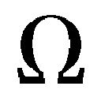

| 応えろ生きてる星 (文春文庫) | |
| 竹宮ゆゆこ | |
| 文藝春秋 (2017) | |
応えろ生きてる星
竹宮ゆゆこ
＊この電子書籍は縦書きでレイアウトされています。
＊読む際のご注意、お断り等についてはこちらをお読み下さい。
応えろ生きてる星
１
飲むならやっぱ昔ながらの居酒屋でしょ、というヤツがいる。
ベトベトの暖簾をくぐって渦巻くタールとニコチンの雲に突入、すると父さん！ ラピュタは本当にあったんだ！ じゃなくて。てかてか酔いどれリーマンの赤い顔赤い顔赤い顔＆顔。うまい肴で一献傾ければ気分はたちまち吉田類よ、と。
いやいや今熱いのはスナックだから、というヤツがいる。
人生経験の煮凝りみたいなママやマスターに転がされ、キャラの立った常連と馴れ合い、カラオケマイクを奪い合い。それってもはやカルチャーだから、と。ディスイズ大人の社交場だから、と。
でも結局はチェーン店こそが最良手、というヤツがいる。
わかりやすい酒、無難な料理、精神的距離の遠い店員。そしてなにより極めて明朗なお会計。騙されないことボラれないこと会計時に突如怖い外人が出現しないこと。これすっごい大事、と。
──夜の帳に隠された狭い石畳の裏道には看板など出ていない。
古いビルの横腹にひっそりと口を開ける地下への階段を降りていきながら、俺は一人、ほくそ笑んでしまう。違うんだよ君たち。君たちはわかってない。
バーなんだよ。
革靴の踵が立てる硬い音が、ひんやりとした空間に反響する。階段を降りきって、ここでやっと間接照明で控えめに照らされた店名のプレートが登場。重い木の戸を押し開けると、異様なほどに澄んだ音色のジャズが熱帯の森のぬるい雨のように頭上から贅沢に降り注ぐ。
しばし息をつき、目を閉じ、音の粒立ちを肌で受け止める。魂が加速しながら高揚していくのを感じる。宇宙速度でこの星の重力をも振り切って、俺のすべてが自由になる。
ここは別次元の宇宙だ。
猥雑な日常の喧騒から完璧に隔てられた、現実とは違う、もう一つの俺の宇宙。
交差するライトの中を歩み、ゆったりとした造りの店を見渡す。席はぽつりぽつりとしか埋まっていない。
片手でボーイに合図しながら、いつもの席に腰を下ろす。カウンターのコーナーの奥側。ここが俺の席。何も言わずとも、黒シャツのバーテンダーは俺の手元にいつものバーボンを用意してくれる。ずっしり重いグラスにワンフィンガー。チェイサーは常温の水。そして灰皿。
大学で覚えた煙草も、今はここでしか吸わない。吸いたい欲求自体がすでに無く、もはやニコチン中毒でもないのだろう。でも、ここにいる時だけは吸う。グラスをそっと傾けながら、しばしの沈黙を味わうために。
ゆっくりと一服し、磨き抜かれたカウンターに視線を落とす。今夜の俺は早くも酔いそうだった。俺という男のかっこよさに。
そうなのだ。バー、なのだ。男もそろそろ三十。一人で飲むならこれぐらいかっこよくなくてはいけない。
「そういえば久田さん」
バーテンダーが低い声でそっと語り掛けてくる。「もしかしてもう......？」
「いやまだ。来月」
軽く首を横に振って答えると、バーテンダーの削げた頰に共犯者めいた笑みが浮かぶ。
「残りわずかな執行猶予ですね」
「この夏はせいぜい最後の独身生活を満喫するよ」
「楽しんで」
笑みを返し、再び心地よい沈黙に身を委ねる。静かにグラスを傾ける。
そう、一か月後。彼女の誕生日に俺たちは入籍する。俺は気楽な独身男から、一家を守る夫になる。夜中に一人、こうやって自宅近くの行きつけのバーでお気に入りのバーボンと煙草を楽しむなんて時間も、今までのように好き勝手には作れなくなる。
失われる自由にふと思いを馳せ、すぐにその代わりに手に入るものに考えは移った。口の端が自然と上がってしまい、煙草のフィルターを嚙んでごまかす。最愛の彼女と家族になることを思えば、多少の自由が失われるぐらいのことは仕方ない。バーでかっこよく決めている自分は大好きだが、彼女のことも大好きなのだ。
ただ、常連を一人失うことになるこの店のことは心配だった。ここは男の聖地。この世の数多の独身男のセクシーオーラの源。俺が今のような頻度で訪れられなくなって、それで店が潰れてしまったら、男のみならず女にとっても危機だ。かっこよく飲める男がこの世から消えたら、ほろ酔い女は誰にときめけばいい？ やるき茶屋の店員か？ 『よろこんでー！』か？ 違うだろう。
俺もそろそろ誰か連れてくるべきなのかもしれない。
俺にここで飲むことを教えてくれたのは、当時の仕事相手だった清水さんだ。このバーのこの席は、清水さんがリアルな知り合いと顔を合わせずにかっこつけていられる、いわば秘密の場所だった。
しかし清水さんは勤めを辞め、結婚相手の田舎に引っ越して農家を継ぐことになった。俺をここに連れて来てくれたのは、二人きりのお別れ会の夜だ。
清水さんの後について店に足を踏み入れるなり、シックな雰囲気と鮮烈なジャズの音色に圧倒されてしまった。震えるほどに緊張したのを今もはっきり覚えている。ホームセンターで買ったサンダルが猛烈に場違いだったことも。
廉次くんよお、と清水さんは言った。
『俺の隠れ家を君に譲るからさ、この席で、君は君の運命が巻き起こす嵐を待ってなよ。ナンパなんて野暮な真似はなしで、なにが君のもとに飛び込んでくるのか、ただかっこよくクールに待ってな。ほら、グラス持って。ビクビクすんな。この席こそが運命の真っ只中、巻き起こす嵐のど真ん中だぜ』
あれはもう五年も前のことだ。当時の俺には恋人もおらず、仕事では行き詰まり、なにもかもがパッとせずにぶすぶす暗くくすぶっていた。
連れて来てもらったこのバーには、確かに『なにか』があると思えた。その『なにか』──人生が一変するような、俺を大人の男にするような、とにかくそんな感じの『なにか』を求めて、ここに通うようになった。やがて近くに住処を変え、思い切ってワークスタイルも変えた。そして合コンで彼女と出会った。四年付き合って、来月には結婚する。
ふと目の奥に浮かぶのは、あの別れの夜、すこし寂しそうだった清水さんの面影......ってわけじゃない。しばしば目にする、お馴染みのアイコンだ。バナナの皮の表面を自ら楊枝でつついて描いたという、わりと相似度の高い似顔絵。清水さんは現在、立派なＴｗｉｔｔｅｒおじさんとなって、毎日ＴＬ上で元気にしている。Ｆａｃｅｂｏｏｋでもつながっているし、ＬＩＮＥもやっているし、俺が結婚することも知っている。四百キロの距離を隔てても、消息不明になどなかなかなれない現代社会だ。
（なにか通知きてるかな）
ポケットからスマホを取り出そうとした、その時だった。
突如大きな音がした。
この店には似つかわしくない、硬い物がぶつかったような無粋な音。驚いて思わず顔を上げ、振り返る。
入り口に女が一人、ドアを思いっきり押し開いたポーズのままで立っている。ドアが勢いよく壁に当たった音だったらしい。嫌な客が来たな、とつい、眉間にしわが寄ってしまう。俺の宇宙がかき乱される。
招かれざる異分子は、若い女だった。
頭からびっしょり濡れている。急な雨でも降り出したのだろうか。影になって顔は見えない。ホルターネックのワンピースから覗く、尖った肩がやたら白い。
濡れた髪を肌に貼りつけたまま、女はぐるりと店を見回す。その顎先が、北を見つけた方位磁針よろしく俺を指してピタリと止まる。
交差するライトの中を、女は妙に猛々しい足取りでずんずん歩いてくる。スタイルはいい。長い髪からぽたぽた水滴を垂らし、片手にむき出しのスマホ、そしてなぜか裸足。......裸足？
（酔っ払いかよ）
やばそうな女、と思うのと、女の顔から黒い絹布を剝いだように影が滑り落ちるのが同時だった。
視線が合ってしまった。
やたら大きな、大きな瞳。
ギラリと輝き、女は一度手の中のスマホを見て、もう一度俺を見て、
「──見つけた」
ずいっと指してくるその指を、人差し指とはよく言ったものだ。
光の速さで目を逸らす。瞬時にやばそう（推定）はやばい（確信）へ。聞こえないふりで顔を伏せる。知りません。関係ありません。ていうか関わりたくありません。しかし女は裸足のままの大股で、さらに猛然とこちらに歩み寄ってくる。
一気に距離を詰められて、もちろん慌てた。「......人違いでは？」言うには言った。が、据わり切った目をした女の耳には届かなかったらしい。カウンターにスマホを荒々しく放り出し、濡れた両手で俺のシャツの襟を引っ摑む。至近距離で見据えられる。その躊躇ない速攻に驚きのあまり、抵抗することも忘れた。そのまますごい力で吊り上げられるように席から立たされ、引き寄せられ、
「......」
気が付けば。嚙みつかれていた。
唇に唇で。
声も出せない。嚙まれて強く吸引されて、とっさに両手で女の身体を押し返そうとするが、触ってしまった肩は素肌。柔らかな感触に本能的に力を入れそびれ、その隙にさらに頰を摑まれた。舌が口の中に滑り込んでくる。俺の舌に絡みついてくる。触れ合った粘膜の唐突ななめらかさは異物感さえ溶ける宇宙の驚異。
星の墓場──ブラックホール。
すべてが渦巻き、吸い込まれ、女の中に流れていく。俺のすべてが飲まれていく。じわっと体温で溶かされるように自我の輪郭すら失いかけて......いや、いけない、待て待て待て。
（端から見たらこれは、この姿は......）
キスじゃないか！
思ってたちまち背筋が冷たくなる。端から見なくても主観的にもこれはキス。バレりゃ浮気と言われる行為だ。冗談じゃない。シャレにならない。
思いっきり背を反らし、必死に身を捩るようにしてやっと吸い付く唇をもぎ離す。そのままバランスを崩してストンと席に尻から落ち、息をして、なにをする!? とか強く言おうとしたが。
「......っ......」
吸った息がそのまま胸で凍り付く。
びしょ濡れの女は、すごい目をして、まだ俺を見ている。
零れ落ちそうなほど見開かれた大きな瞳の表面に、銀色の液体を流し込んだようだった。恐ろしいほどの美しさで、冷たい光をビームみたいに放っている。俺に向けられたそれは、その眼差しの理不尽な強烈さは、一体なんなんだ。俺がなにをしたと言う。
そして再び、
「......あなたはいずれ、必ず、私のことを思い出す」
人差し指。
「な、なにを......」
「奪われて、失って、私のことが必要になる」
低く地を這うような囁き声。
「そうしたらここに」
人差し指は俺の鼻先から、磨き抜かれたカウンターにトン、と落ちた。俺のグラスから数センチのところに。
「ここに、私を探しに来て」
くるりと身を翻し、スマホを摑み、女は再び大股で歩き出す。おそらくは出入り口と間違えて、一度トイレのドアを開ける。すぐに憤然と方向転換し、俺の方を見ないまま、今度こそドアから出て行く。裸足で。
呆然と、その白い背中を見送ってしまった。
なんなんだ。......なんだったんだ、本当に。今のは。「え、え？」今更ながら間抜けな声が漏れてしまう。
痺れたような頭のまま、とにかく手の甲で唇を拭った。口紅はついていなかったが、恐ろしいほど柔らかだった感触はしっかりと記憶に刻まれている。店内の少ない他の客たちは、みんな揃って見て見ぬふり。頑なに俺の方を見ないまま、なにも起こっていないふり。そしてジャズ。フィルターまで焦げた煙草が灰皿の中に落ちる。
「......今のは、現実か......？」
バーテンダーが温度のない笑みを浮かべ、小さく「楽しんで」と囁いた。
「......ていうか、そこから君は、一部始終を黙って見てて、止めたりとかはしないわけだ......？」
「最後の夏ですから」
＊＊＊
日曜、真昼の食事会は和やかなムードで進んでいった。
挙式披露宴をしない予定の俺たちにとっては、これがお互いの家族への、入籍前の最後の正式な挨拶になる。
格式あるホテルのレストランで、用意されたのは水盤のあるテラスに面した明るい席だった。テーブルには白の切り花がセンスよく飾られて、甘い香りが優雅に漂っている。
俺と父親はスーツ、母親は張り切って絽の訪問着。
満優も今日のために用意したシルクのワンピースを着て、髪も美容院でアップにしてもらってきたという。生地の淡いピンクが頰に映って、満優の笑顔は瑞々しい桃の果実のようだった。満優のご両親も爽やかなサマースーツで、色とりどりのコース料理を楽しんでくれていた。
今日のすべてが、完璧だった。なにもかもを、満優はきちんと段取りしてくれた。
「本当に満優さんはしっかりしたお嬢さんで、うちの廉次にはもったいないような素晴らしい方だわ」
「いえいえ、廉次くんこそ優しくてハンサムで、大学では絵のお勉強をされてたとか？ とっても素敵だわ」
「あらまあとんでもない。上に長男がおりますせいか、どこかのんびりしたところがありますの。満優さんがちゃんと次々決断して下さるおかげで、こうして新生活も始められるんですのよ。廉次をぐいぐい引っ張って下さって、主人ともども、満優さんには感謝していますわ。ねえ、廉次。その通りよね」
母親に水を向けられて、
「ええ、本当に」
向かいの席から、満優がちらりと俺の目を見てくる。笑ってその目を見返す。テーブルにはそれぞれの手元に、デザートワインが運ばれてきている。
「満優さんにお任せしておけば、どんどん決めてどんどん実行して下さるので、僕は本当に助かってるんです。出会った時からずっと、大事なきっかけはいつも満優さんがくれていて。気が付いたらこうなってたか、という感じで。もう安心して、決定権は全部委ねて、僕は黙ってついていこうと思ってます」
「おまえときたらまったく......すみません、うちの倅は昔っからこうでして」
「まあまあ、こういう力関係も今時の夫婦らしくていいじゃないですか」
父親同士の笑い声と、母親同士の「あらあら」「ほほほ」笑い声。俺も笑った。しかし、同じく笑ってくれると思った満優の表情が、静かに消えていくのに気が付いた。あれ？ と思うが、
「──旅行の時は頼りにしてるからね、廉次」
「お、おお」
満優は真顔で俺を見ている。その表情がゆっくり変化していく。変化の挙句の最終形態が笑顔であることを確かめたかったが、
「そういえばもうすぐ出発か。廉次くん、旅行楽しみだね」
満優の父親の言葉に、顔をそちらへ向ける。
「はい、今はひたすら準備に追われてます」
「子供ができたら夫婦二人きりの時間もなくなるんだし、ゆっくり楽しんでくればいい」
「やだあなた。気が早いんだから」
おほほ、ははは、とうちの両親がまた声を上げて笑う。俺も含めてこのテーブルの一同は、シャンパンを飲み過ぎた気がしないでもない。「もう、お父さんったら」満優も朗らかに笑っていた。やっぱり笑顔に向かっていたのだ。安心した。
今週の金曜日から、俺たちは二週間の海外旅行に出発する。そして帰国したらすぐに婚姻届を出して、新居に移り、晴れて夫婦としてスタートを切る。入籍してから新婚旅行としてもよかったが、俺が休暇を取れるタイミングと、専業主婦になる彼女の退職のタイミングと、そしてなにより誕生日を結婚記念日にしたい彼女の気持ちをすり合わせたらこうなった。
「最初はどこへ向かうんだったかな？」
「まずはロンドンです。それからパリ、バルセロナ、ローマと観光して、それからハノイへ飛んで」
旅行の計画はすべて満優が立ててくれた。『移動ばっかりで弾丸だけど、絶対大切な思い出になるから』張り切って、何か月も前から何度も旅行代理店のカウンターに通ってくれた。『のんびりするなら子連れでも、歳をとってからでもできるんだし』同感だ。さすがは満優。この子にお任せしておけば、俺の一生は間違いない。
「違う」
満優の声がテーブルの向かいから飛んできた。
「え？ 間違ってないだろ？」
「違うよ。......それも、忘れちゃったの？」
「なに？ え、なんだっけ？」
「あんなに何度も説明したのに。ハノイじゃないの。ローマからは、エミレーツでホー」
満優の口が「ホー」の形のままで突如固まった。
ヒント？ ヒントか？ たまには自分で考えてみろってことか？ ホー......おお。
「......チミンだ。そうだ、思い出した。ホーチミンな。ハノイからホーチミンに変えたんだった。そうだよな」
しかし満優はいまだ「ホー」の口のまま、俺を見ているのではなかった。視線は俺を通り越し、背後のガラス越しのテラスに向けられていた。「？」一体なにを見ているのか、俺も振り返ってテラスの方を見た。
男が一人、そこにいた。
テラスの外壁上部の植え込みの中に、見知らぬ男が立っているのだ。そして突如、意を決したように身長ほどの高さからジャンプして、水盤に飛び降りた。バシャン！ と激しい水飛沫が上がる。もちろん驚いて、俺はイスから腰を浮かせた。不審者だ。他のテーブルからも訝しむ声が上がる。バシャバシャと激しくしぶきを蹴り上げて、男はテラスをこちらへ渡ってくる。
とにかく満優を背にかばおうと、手首を摑んで近くに引き寄せようとした。しかし手首はするりと俺の指をすり抜け、
「満優！」
名前を呼ぼうとしたのは俺だ。
が、声は俺のではなかった。テラスの水盤の中ほどから、男が叫んでいた。俺の婚約者の名前を。妙にワイルドな白シャツ一枚で。自ら上げた水飛沫でびしょ濡れになって肌を透かして。
そして俺の婚約者は、俺の目の前を横切って、テラスのガラス戸の前に立った。
「ど、どうしてよ......!? どうして今、こんなところに、現れたりするの!?」
叫んでるぞおい。なんか言ってるぞ。
「どうしても満優のことを忘れられないんだ！ 自分の気持ちに、もう噓をつけない！」
膝下まで水に浸かり、男は顔を歪めて叫び返している。その声は聞き苦しく掠れながらもビンビンと切実に、俺の腹にまでよく響いた。そして片手を差し出してくる。満優の方に。俺たちの方に。まっすぐに。え、と俺は、満優を見た。満優は、
「忘れられないのは......私もだよ......っ！」
駆け出した。勢いよくガラス戸を開こうとし、しかし開かなくて、「ああああ！」両足踏ん張ったすごいポーズで何度か全力でサッシを揺らし、
「開かないっ！ 開かないっ！ か、」
「か!?」
「......んああんもうっ！ 開かないぃっ！」
「か──鍵だ、満優、多分、鍵がかかって、ていうかあれは誰なんだよ!?」
「廉次にはわからないよね!?」
俺に向かって威嚇するように喚く。
「あの人が『どこ』出身の『誰か』なんて、廉次にはわかるわけがない！ いいからどいてよ！」
俺の声は、もう届かなかった。
満優は必死の形相で、俺がさっきまで座っていたイスを引っ摑むなり、高々と頭上に持ち上げる。距離を少し取り、ツーステップ。からの、力いっぱいスイング。イスをガラスに叩きつけ、思いっきりぶち破った。甲高い破壊音。レストランのそこここから悲鳴が上がり、ウェイターが走ってくる。警備員もくる。
俺は無言だった。
なにも言えなかった。割れたガラス。散らばって光る破片の鋭さ。人々のざわめき。食器を鳴らしてテーブルを立つ音。真っ白になる俺の脳。
そのすべての破壊の真っ只中に取り残されて、なんだこれは、と思っていた。
満優は破れたガラスの大穴からテラスへ走り出し、水盤の中へ水飛沫を上げて突き進んでいく。男の腕の中に飛び込む。二人はしっかりと抱きしめ合い、そしてお互いの体重で真横に傾くほどの熱い、熱い、熱いキス。
同時に、水盤から美しい弧を描いて幾筋もの水が噴き上がった。サプライズの噴水だ。このキスの瞬間を劇的にするために計算され尽したような、見事なタイミングだった。
（あ、あ、あ）
思い出した。
スーツの胸ポケットに忍ばせた、二つの封筒のことを。会話を弾ませよう、満優のご両親に気に入られよう、そう気負う気持ちと、進み過ぎたシャンパンが俺の脳から奪い去った、大事な約束のことを。
『あのレストランから一日に一回だけ、噴水が見られるんだって。サプライズだから本当は時間も伏せてるらしいんだけど、ホテルの人に、特別にタイミング教えてくださいってお願いしたの。人生一度の大切なお食事会なんです、って』
今日まで育ててくれたそれぞれの両親に、サプライズのプレゼントをしよう。そういう段取りだったのだ。封筒の中身は旅行券だ。
『デザートワインがテーブルに来たら、それがおよそ三分前の合図だって。廉次には、さりげなく私たちの旅行の話を切り出して欲しいの。忘れないでね。大事なことだから。絶対だよ』
言うセリフの流れまで決めていた。
もうすぐ旅行だな。楽しみだよね。ところでそうそう旅行と言えば──お父さん、お母さん。（旅行券、ここでバーン。まあ、なんなの？ え、私たちに？）今まで本当にありがとうございました。これは俺たち、私たちからのプレゼントです。これからは夫婦二人でどうかゆっくりして下さい。
『旅行券をそれぞれの親に渡したら、ちょうどそのぐらいのタイミングで噴水が上がるはずだから。ハート型に見えるんだって。私たちの分と、久田家のご両親、それとうちの両親の分ね。ラブラブのハートで一生一度のサプライズ、しようね』
確かにハートだった。そしてサプライズだ。
計算されたタイミングで噴き上がる噴水は、うまい具合に水の軌跡がハートに見える。踊るみたいに回転し、大きさを変え、まるで脈打つようだ。
その下で満優と男は手を取り合い、大きく一つ頷き合って、降り注ぐ祝福の噴水の中をびしょ濡れになりながら走り去ってゆく。すかさず追いかけろ。頭では思っていた。でも身体が言うことを聞かない。足が竦んで、そしていまだにこれが現実のこととは思えなくて、俺は無様な棒立ちを晒していた。わからない。わからないのだ。一体なんなんだこれは。俺はつまり、要するに、明らかに──
（え？ まじで？）
真っ先に逃げる二人の後を追おうとしたのは、満優の父親だった。顔を真っ赤にして俺を押しのけ、テラスへ猛然と駆け出しかけた。しかし割れたガラスのこちら側で、満優の母親が膝からふらりと崩れ落ちる。そのまま気を失い、ふかふかの絨毯に倒れ伏してしまう。俺の母親が悲鳴を上げる。満優の父親もたたらを踏んでＵターン、慌てて駆け戻る。救急車を！ と叫んでいるのはうちの親父か。このすべて。すべてが現実なのか。
まじか。
噴水は今が最高潮だ。七月の東京の青空にキラキラと輝く水飛沫でハートの形を綺麗に描いて、高く高く噴き上がっている。
＊＊＊
朝が来て、夜が来て。
朝が来て夜が来て、朝が来て夜が来て、朝が来て夜が来て、朝が来て。
そしてもうすぐ夜が来る。
日曜日に満優が逃げてから五日が過ぎた。もう金曜日だ。満優の行方は、いまだにわからない。
本当だったら俺たちは、今頃空の上だった。
俺は飛べなかった。巨大なリモワも、飛べなかった。この星の重力に逆らって飛び立つエネルギーを得ることはできなかった。
尻をべっとり床に落とし、俺はリビングの真ん中に座り込んでいる。リモワは壁際でばっくり開かれ、惨めな中身を晒している。臓物よろしくＴシャツやらボクサーパンツやらポーチやらをはみ出させているのは、さっき俺が着替えを求めて引っ搔き回したからだ。
パッキングした荷物以外の服は、引っ越し屋のマークがついたダンボール箱の中にある。開ければいいだけの話だが、今はダンボール箱を積んである隣の部屋に行くのも面倒くさかった。
今日が旅行の出発日だったのだ。
ちなみに旅行代理店へキャンセルの電話はまだしていない。搭乗時刻もとっくに過ぎた今、キャンセルの電話もクソもないが。それでも一応、連絡した方がいいのだろうか。確か、担当者の名刺がどこかにあった気がする。でもどこにしまったのか思い出せない。というか、思い出す気力がない。
満優が濡れ透け白シャツ男と姿を消してから、もう五日も経ってしまった。俺はあれから何時間眠ることができただろう。多分、片手の指で数えられる。
義理の親になるはずだったあの人たちは、もしかしたら俺よりもっと眠れていないかもしれない。体調は大丈夫だろうか。
あの日、満優の両親の動転ぶりは凄まじかった。あまりにも激しくパニクっていた。うちの両親だって騒ぎたかっただろうに、飲まれたみたいになにも言えなくなっていた。
ただ幸い、倒れてしまった満優の母親の容態はたいしたことがなかった。ストレッチャーの上ですぐに気が付き、搬送された病院からそのまま自宅へ戻ることができた。
うちの親はとりあえず家に帰し、俺は満優の両親とタクシーに同乗して満優の実家へ向かった。
後部シートに並んで座った満優の母親の顔には、謎の斑点が痣のようにいくつも浮かび上がっていた。奥歯を食いしばり過ぎて、顔面の血管が切れて内出血を起こしたのだそうだ。
あの子を産んだ時もこうなった......と、震える声で呟くのを、俺は隣で聞いていた。大変な難産で、苦しんで苦しんで、やっと産み落としたのだそうだ。そうしたら顔がこうなっていた、と。そんな思いをしてまで産んだのに、今はあの子をぶっ殺して私も死にたい。そう続けた。助手席の父親にも聞こえていただろうが、車中はそれきり無言に満たされた。俺もなにも言えなかった。
自宅に帰りつくなり、満優の母親は、ドット模様の顔を床に伏せて身体を丸めた。隣に父親も同じポーズ、要するに土下座をして、申し訳ない、と声を絞り出した。そう言う声も、背中も指先もブルブル震えていて、泣いているのがわかった。大の男が、大きな会社の役職にもついている大人が、恥のあまりに泣いているのだった。
とてもではないが、見ていられなかった。その腕に取りすがって、なんとか顔を上げてもらおうとした。岩のように硬く、俺の力では微動だにしない肩を揺すり、必死に『待ちましょう』と繰り返した。
『あの満優のことだから、きっとなにか事情があるんです。満優から連絡がくるまで待ちましょう。話を聞きましょう。満優が落ち着くのを待ちましょう』
それからどうやって帰ってきたのか、記憶は完全に欠落している。クシャクシャになったレシートが床に落ちていたから、どうやらタクシーに乗ったらしい。
とにかく気付いたら俺は帰って来ていて、そして夜が明けて、月曜日の朝が来た。
会社だぜ。そう思った。サラリーマンだ。仕事があるのだ。親父が社長で兄貴が上司で、役員はだいたい名字が久田、伯父伯母いとこ姻戚親族が要所要所に乱舞する一族イツメン経営の不動産会社が俺の職場だ。
俺は会社に行った。
『廉次......』
出社した俺を見るなり、兄貴は呻いた。そしてそれきり黙り込んだ。親とは同居の長男だ。事情は知っているだろうし、慰めの言葉ぐらいはあるとは思っていた。が、それにしても沈黙は長かった。後輩たちもパートさんも、俺をすごい目で見ていた。同情とか好奇心とか、そういう範疇を超えた目だった。今にも眼球が「あいつやべえ」的なことを喋り出しそうだった。
俺の肩に置かれた兄貴の手つきは、気味が悪いほど優しかった。小五の夏には顔がうぜえから殴る！ と俺をパンチしたあの兄貴が。中二の夏には口がくせえから殴る！ と俺をパンチしたあの兄貴が。高三の夏にはなんだかつまらねえから殴る！ と俺をパンチしたあの兄貴が。この夏、よしよし、と二度、俺の肩を撫でた。
『おまえは今日はもう帰れ。な。仕事の方はみんなでなんとかするから、家に帰ってゆっくり休め』
やだ、あたしなら大丈夫よ！ 落ち込んでたって仕事ぐらいできるわ！ 言い返そうとして、はたと気が付いた。言語出力モードがナチュラルにフェミニンな感じになっている。ではなくて。
自宅から溜池山王のオフィスまで地下鉄で十五分。毎日スーツに革靴で通勤していた俺は、その朝、寝間着のＴシャツにユニクロのステテコ、サンダル姿で兄貴の前に立っていた。髪はぼさぼさ。ヒゲざらざら。口？ 臭い。
もちろんこんなことは初めてだ。朝が来て、会社だぜ、と思って、それでそのままシームレスに家を出て来てしまったのだ。着替えるのも、というか顔を洗うのも髭を剃るのも歯を磨くのも忘れていた。一睡もできずに寝床から這い出した俺をありのまま、オフィスにお届けしてしまった。手にはスマホだけ持っていた。Ａｐｐｌｅ ＰａｙのＳｕｉｃａ定期はとっても便利。完全無意識のルーティン行動で、俺を職場まで運んでくれた。
これに気づいていなかったのはさすがに自分でも怖かった。兄貴はタクシーを呼んでくれた。やだ、落ち込んでたって電車ぐらい乗れるわ！ 実際乗ってきたもの！ 言い返そうとしたが、『おまえは今、ノーパンだろう。押さえのきかないわがままな揺れ具合からなんだかそんな気がするんだ』静かに言われて言葉を飲んだ。前開きからこんにちは。そんな感じにならなくて本当によかった。
この二日間で随分タクシーに乗ったな、と思った。
休めと言われたものの、ちゃんと着替えて、改めてスーツで出社した。さすがに帰れとは言われなかったが、兄貴は俺を打ち合わせや会議には出させてくれなかった。
その代わりに、原宿の外れの管理物件へ向かうように命じられた。築古の賃貸マンションだ。先月からゴミ捨て場の改修工事に入っていたのだが、工事終盤で業者が突如倒産してしまい、塗装や扉の交換などの作業が半端なままで残されていた。俺は原チャリで現場に到着するなり、スーツの上からゴミ袋を着た。開けた穴から腕を出し、現場に残されたままの資材を使って、さっそく作業の続きに取り掛かった。『おまえがやってこい。休暇に入るまでに完了しろ』というのが兄貴から受けた業務命令だった。
あまりの暑さに何度も気を失いかけたが、管理人のおじさんが冷たい飲み物を差し入れてくれたおかげで生き延びた。おじさんは、兄ちゃんが工事の続きすんのかよ......と不安そうにゴミ捨て場を見回していた。自分でも実は結構不安だったが、住人さんに迷惑をかけちゃいけない、やらねば、やらなきゃ、その一心。俺は働くマシンになった。肉体労働をひたすら続けた。それから昨日まで現場に通い詰め、その甲斐あって、一応作業は完了した。
そうして今日がきた。予定通り、長い休暇が始まった。
本当ならば旅行に発つはずだった。
だから、うっかり行ってしまった。
羽田に。
満優には行く、と伝えた。待ってる、と。ＬＩＮＥでもＳＭＳでもメールでも、留守電にもメッセージを残した。既読はつかず、返信もなく、コールバックもなかった。でも行った。二週間分の荷物とパスポートを持って、俺はモノレールに乗り込んだ。そういう計画だったから。原宿の現場作業ですっかりマシンになりきった俺は、引き続き、計画の完遂を目指していた。
搭乗時刻の三時間前に羽田空港国際線旅客ターミナルについた。俺はずっと案内カウンター前のわかりやすいところに立っていた。片手にスマホを持ったまま、トイレにも行かず、ソファにも座らず、行き交う人波の中に満優の姿を探し続けた。
そして、搭乗時刻が過ぎた。
俺たちを乗せずに飛行機はロンドンへ飛び立ってしまって、俺はやっと理解した。
俺と満優の結婚は、なくなったのだ。
──そうか。
理解してすぐに歩き出したつもりだったが、モノレールの改札でふと時計を見ると、搭乗時刻からさらに一時間が経っていた。
ただひたすら、突っ立ち続けた足が疲れていた。ふらふらしながら１０５リットルのリモワを引きずって、モノレールに乗り込んだ。たくさんの旅行客で驚くぐらいに混んでいたが、なぜかたった一つだけポツンと席が空いていて、座ることができた。
モノレールの中でも、乗り換えた電車の中でも、そして最寄りの駅から歩きながらも、俺はひたすら金の計算をしていた。今回の旅行には一財産をかけてしまった。おとといまでに旅行のキャンセルの連絡をしていれば、代金の八割は返ってきたのだ。でもできなかった。せめて出発時刻の前でもよかった。半分は返ってきた。でも、できなかった。搭乗時刻を過ぎてしまったら、もはや旅行代金は一銭も返って来ない。そういう規定だ。わかっている。とっくに調べてあった。
それなのに俺は馬鹿だから、最後の一秒が終わるまで、満優を待ってしまった。
そしてなにより一番恐ろしいのは、心のどこかで、今もまだ待っているのかもしれないというあたりだろう。家へ帰る道すがらも、結構本気で、今にもどこかから満優が飛び出してくるような気がしていた。
もう間に合わないのは明白なのに。
（暑さで頭、やられたかもな）
炎天下の午後にうちへ帰りついて、気が付けばもう窓の外は夜だった。
二時間ほど前にピザのデリバリーが届いていたが、まだ開けてもいない。同じ物が、実は冷蔵庫の中にあと二つ積んである。なにかカロリーのあるものを食わなきゃと思って注文したのに、胃がむかついて食べられないまま放置してしまった。
両手を広げて上に伸ばし、気分の悪さにえずきながら、そのまま後ろ向きに床に倒れる。
（おっと、これは......おお。人間って、本当にあのポーズになるんだな......）
俺を今、上から見ると、ちょうど人生オワタ！ あのポーズになっている。
目を閉じて、考えてしまわずにはいられない。婚約者に捨てられたぐらいで、あっさりと終わってしまう俺の人生ってなんだ。なんて虚しいんだろう。
それに捨てるといえば──部屋の隅に置いてある、Ａｍａｚｏｎのダンボール箱の存在を思い出す。引っ越しついでに『あれ』も捨てるつもりだった。目を閉じたまま、意識から遠ざける。知覚できない向こう側へ、必死になって転がし落とす。
（......ていうか、オワタ、っつって終われるなら、そんな楽な話はねえんだよ......）
捨てられてもなお、リアルな人生は続行中。生きている俺には、大人として、やるべきことがいくつもある。
たとえば、新居になるはずだったマンションはどうするか。部屋自体はうちの会社の持ち物だから、契約関係は問題ない。処理できる。ただ、新調した家具が届いてしまっているから、それらを返品しなくてはいけない。引っ越し屋のキャンセルもしなくては。ていうか、すでにいくつか運び込まれている満優の荷物もどうにかしないと。水道、電気、ガスの契約、ケーブルテレビに、ネットの回線とかもだ。旅行後すぐに新居で暮らし始められるように、前のめりにあれこれセッティングしてしまった。契約書の類のいくつかは、満優が保管しているはずだ。それに二人で結婚資金を貯めてきた口座はどうなるんだろう。ていうか確か、なにかの保険にも入れられた気がするんだが。誰に連絡して、どうすればいいのか。
（あーあ......大変だ）
やらないといけないことは盛りだくさんに迫りくる。兄貴には休暇の返上を申し出たが、あっさり却下されていた。それでよかったのかもしれない。やるべきことを、この休暇を使ってこなすのだ。マシンになって、乗り切ろう。
（しかし、ほんと色々、買っちゃったよな......）
リビングにはあれを置くの！ 寝室にはこれを置くの！ オーダーして！ 色を決めて！ サイズを測って！ 型番を控えて！ ショールームに見学！ 工場に問い合わせ！ 目黒！ 横浜！ 青山！ 新宿！ 渋谷！ 豊洲！ ──満優はあんなに幸せそうにたくさんの物を選んでいたのに。張り切って、新しい生活のための算段を整えていたのに。あの楽しげだった笑顔はなんだったんだ。そして買い物にかけた膨大な時間とエネルギーは。
こんなことになるなら教えておいてくれよ、とか思ってしまう。俺と結婚したくなかったのなら、俺に不満があったのなら、他の男と比べていたなら、片鱗ぐらいは見せておいてくれよ。なにもかもいきなりすぎるんだよ。いきなりすべてを無意味にするとか、どんだけ破壊的なサプライズだよ。
一体どこで、俺にバツをつけたんだよ。
（......そういえば、この事態を予見していた女がいたな）
思い出して、ふと目を開く。
もはや遠い昔のように思える、バーでの突然の出会い。闇色に渦巻くブラックホールみたいに俺を飲みこんだ、あのキス。
謎の女は、突然びしょ濡れで俺の前に現れ、裸足でずかずかと大事な場所に踏み込んできて、完璧だった宇宙を壊した。
そして言った。
『あなたはいずれ、必ず、私のことを思い出す』
人差し指を突き付けて、まっすぐに俺を見つめながら。
『奪われて、失って、私のことが必要になる』
ゆっくりと目の焦点が合ってくる。天井を見つめ、軽くゾッとする。......なんてことだ。言われたとおりのことになっているじゃないか。満優を奪われ、失って、俺はあの女のことを思い出している。あの夜のあのキスを。
（一体、何者だったんだ？）
未来のことを言い当てるなんて、超能力者か？ 占い師？ 予言者？ あるいはタイムスリップしてきた未来人とか？ 神？
我ながら馬鹿げた考えだが、とにかく「そういう系のなにか」でなければ説明がつかない。どうして知り合いでもなんでもない女に、俺自身にすらわからなかった今の状況が、あの時点ですでに見えていたのか。
（いや、まさかな。まさかだけどな。でも......）
もしも本当に「そういう系のなにか」だとしたら、未来のことがお見通しなのだとしたら、俺はぜひとも訊ねてみたい。
俺はどうなる。
こんなことになってしまって、俺は一体どうすりゃいい。
俺には、なんにもわからないのだ。いい歳こいて、家族になるはずだった人に捨てられて、やるべきことは盛りだくさん。それを終えたら、次はどうなる。その先の自分がどうなってしまうのか、本当に全然わからない。知りたい。教えてくれ。どんな怪しい能力者でもいい。なんなら天使でも悪魔でも、本当になんでも構わないから。
唇に押し当てられた、恐ろしいほどに柔らかな感触が鮮烈に蘇る。脳みそとろけるあの温かな──反射的にかき消そうとして、しかし、もはやそれが罪でもなんでもないことにも思い至る。
キスならあっちもしていたではないか。熱いのを、思いっきり。今さら一体どこの誰に操立てする理由がある。
びしょ濡れだったこと。裸足だったこと。唇の柔らかさ。強く光る眼差し。予言めいた不思議な言葉。間違えて開けたトイレのドア。思い出せる事柄のすべてが、強烈なフラッシュみたいに脳裏に瞬く。忘れようとしたって忘れられない、あの女は一体なんなんだ。
『ここに、私を探しに来て』
行くしかない。思って、身体を跳ね起こす。あの女がトン、と指で叩いた場所。そうだ。
バーだ。
ハンガーのままかけられるダンボール箱からシャツとパンツを引っさらい、着替えは十五秒。ベルトを探して五秒、通して五秒、ソックスを履いて五秒。スマホと鍵と財布を摑み、革靴でマンションのエントランスから飛び出す。
じっとり湿った熱気が立ち込める夜の中に、俺は気付けば走り出していた。自分でも意味不明なほどに焦っている。早く会わなくちゃ。探せ、あの女を。まだ間に合ううちに。って、なににだよ？ わからない。ただ焦るのだ。気が逸る。
目をつぶっていても辿れるほどに通い慣れた路地へ滑り込み、一見さんには絶対にわからない地下への階段を駆け下りる。いつもならここは別世界への突入口、俺の秘密の宇宙へ続く特別な意味を持つ通路だが、今夜はただひたすらに階段がまどろっこしい。最後の一段は乱暴に飛ばしてジャンプ、勢いのままにドアを思いっきり押し開く。
音に驚いたように、いつものボーイが飛び出してきた。「よお」とだけ言ってその脇を素通り、息を切らしながら店の奥へとずんずん進む。俺の今の状況を打破してくれるなにかが、運命みたいななにかがもしもここにあるのなら、俺はそれに飛び込みたいのだ。それがたとえ、ブラックホールだったとしても。
カウンターのコーナー、奥側。俺の席だ。
女が一人、座っている。
ふんわり広がる長い髪を高い位置で一つに結って、真っ白な首筋をライトに晒している。その首にはきらきら、華奢なチェーン。背中の開いたワンピースに、くびれたウエスト。細い二の腕。
振り返るその瞳が、銀色に光りながら俺を見た。
──いた。
いると思ったからきたのだが、それでも心臓が大きく一つ高鳴った。本当にいた。あの夜のキスは現実で、あの予言も現実だった。
あまりにも印象的な大きな瞳。眼差しは見るものすべてを焼き尽くすレーザービーム。そして、
「どうだった？」
立ち竦む俺を見ながら、にやっ、と唇が笑みに歪む。
どうって何が、と思うよりも、だ。
「......？」
微笑むその唇にべっとりとついている白い物体が気になった。俺の現在の状況的にも、心理的にも、この店の雰囲気的にも、そのべっとり具合はいきなり違和感がありすぎた。
それは一体、とさらに近づいて女の手元を見た瞬間、緊張感がへなっと挫ける。
振り返った女は、俺の神聖なる第二の宇宙で、秘密の隠れ家で、独身男のセクシーオーラの源で、巨大なパフェみたいなものを食っていた。口についているのは恐らく、生クリーム。
なんでこんなバーでそんなもの、よく見りゃ器はアイスペールだ。そこにアイスクリームとフルーツを山ほどぶちこんで、クリームを巻き上げて、チョコソースをドバドバぶっかけてある。縁にぐるりと刺さっているのは、まさかのフライドポテト。......フライドポテト。揚げ物、あしらっちゃいました。こんなにも意識の低い食い物というものを、俺はおそらく初めて見た。
「なんてモンを食ってんだよ......」
バーテンダーが俺を見て、パフェを指し、
「久田さんも？」
「......いらないよ！ つか、作る方も作る方だよ......」
あまりの雰囲気ぶち壊しメニューに半ばクラクラしていたが、「!?」さらに衝撃が走る。女はパフェを、居酒屋の学生バイトが悪ふざけで考案したデカ盛りチャレンジメニューみたいなその巨パフェを、バナナで食っている。持つ部分だけ残して皮を剝いたバナナで、アイスをほじくっている。もぐもぐしている。「なぜだ......」膝から崩れ落ちそうになる。
「意味わかんないこと、すんじゃねえ......！」
俺を見る銀色の瞳が、わずかに細められる。
「へえ。意味わかんない、ね。ふうん。あなたはこれを知っても同じことが言えるのかな」
女のその瞳から零れるのは、どこか邪悪な冷たい光。心臓がもう一度跳ねる。なにか重大なことを今からいきなり発表されるのだ。そんな気がして、息を飲む。女の言葉を待ってしまう。俺はなにを知るべきなのか。怖いが、でも、それが知りたくてここまできたのだ。この女がなにを言うのか、俺は本気で知りたかった。呼吸も忘れて耳を澄ました。
「──大内宿の名物グルメ、ネギで食べるおそば」
「......え？」
「電車とバスでも遠いけど、店の手前でめちゃめちゃ渋滞するから、車で行くにも覚悟がいる」
「あ、ああ......」
「ちなみにようようたどりついても、三時間ぐらいは余裕で待たされるし」
「おう......」
「品切れの仕方も容赦ない。団体客も受け入れてるから」
「うん......」
「このパフェの食べ方は、そのおそばの食べ方からピーン。閃いたの」
「......で？」
「なに、これ以上おそばの情報が欲しいの？ 人にばっか頼ってないでたまには自分の指でググんなさい、おばかさん」
カウンターのコーナーを挟んで女の隣、いつもの席の一つ手前に、俺は静かに腰かけた。そして口からは、ごく自然に本気の言葉が溢れ出していた。
「殺すぞ」
あははは！ とバーテンダーが声を上げて笑う。こいつの笑い声なんて五年通って初めて聞いた。
バナナで大きくアイスをえぐりとり、女はゆっくり口に運ぶ。頰張って、「ん～」幸せそうに一度目を閉じる。そして再び視線を流し、舐めたバナナの先で俺を指し、
「突然なにを怒ってるの？ 私とケンカをしにわざわざここまで来たわけ？ 四年も付き合った婚約者に突然あっさり捨てられて、さすがの久田廉次くんも余裕を失っちゃったのかなあ」
笑顔でメンタルにパンチ。一発目、見事に命中。
「でも初めから主導権は満優ちゃんにあったでしょ。そういうシステムにしたのは廉次くんでしょ。大事なことはなにもかも満優ちゃんに丸投げして、自分はとことん無責任に、器のでかい男ヅラ。いいとこどりできるはずだったのにね、残念」
笑い声を含みながらの二発目は重く。
「ま、廉次くんは、あれよね。いろんなこと全部、やりたがったのはおまえだから。欲しがったのはおまえだから。寛大な俺はおまえのわがままを、許可してあ、げ、る。そういうノリでいたもんね。そもそも告白してきて付き合いたがったのもおまえだし結婚したかったのもおまえだし破局の道を選んだのもおまえだし？ 彼女の選択を、今回もまた寛大に受け入れてあげればいいんじゃない？ 今までそうしてきたみたいに。そうすればあなたは無傷だもの。よかったね、かっこいいままで。失敗なんてしてないし、なんにも間違ってなんかない。だって最初から自分では、なんにも選んでいないもの。間違うリスクや失敗するリスクは全部満優ちゃんにおっかぶせてきたもの」
三発目を食らって、俺は頭を抱えた。痛い。死ぬ。タオルを投げてくれ。試合終了の鐘を鳴らしてくれ。俺をリングから下ろしてくれ。早く。
（無傷だと？ 無傷だというのか？ この俺が......？）
言葉も出ない俺の前に、バーテンダーはなにも聞かず、いつものバーボンを置いてくれる。チェイサーと灰皿も。しかし煙草は置いてきてしまった。吸いたかった。久しぶりに脳がニコチンを本気で求めてきゅんきゅん鳴いた。
バーボンを一口呷って、また頭を抱え直す。
「ていうか......君は、なんだよ？」
「さく」
「歯ごたえの話はしてねえ......」
「朔、っていうの。名前。織滝朔」
眉間を押さえてしばし本気で考える。朔。織滝。しかしどれだけ考えても、名前にまったく覚えはない。クリームをバナナでかき回しながら薄く微笑む横顔も、俺の記憶の中にはない。これまでの人生で、この女と関わったことはないと思う。あの夜、ここでキスをされたのが初めてのはずだ。
「悩んじゃってるけど、大丈夫？」
「......本気で混乱してるんだ。わけがわからなすぎんだろ。まず、なんで君は俺が捨てられることを知っていて予言できたんだ？ それに......」
「なあに、廉次くん」
一つに結んだ長い髪を片方の肩にかけ、朔、は、にっこりと笑ってみせる。白い顔を、俺の方にぐっと寄せてくる。
「......それだよ。なんで、俺の名前を知ってるんだ。満優のことも」
「知ってたらいけない？」
「なぜか、を聞いてんだよ。はぐらかすな」
「私は廉次くんを助けに来たの。それだけじゃだめ？」
カウンターに肘をつき、自分の瞳の大きさのインパクトを知り尽くしたパチクリぶりで、朔は俺を見上げてくる。無邪気を演じているのが丸わかりの噓くささで、小さく首を傾げもする。
「私は廉次くんの味方よ。多分、とっても力になれると思う」
その割にはさっき随分ひどいことを言われた気がするが。いや、今問うべきはそこじゃない。
「力に、って、なんの」
「決まってるでしょ。逆襲の、だよ。奪われたものは取り返さなきゃ。でしょ？」
急に眇められた朔の目元に、わかりやすい邪悪な影が落ちる。俺は今度こそ、言葉もない。何が言いたいのかはわかる。わかったからこそ、絶句したのだ。
「奪われたのは満優ちゃんと、そしてプライド、己の沽券、そういう感じのエトセトラ......。廉次くんがそれら諸々を取り返すのを、私が助けてあげる。なんでそんなことを、って思ってるでしょ、今」
ただただ頷く俺を見て、朔は満足そうに眉を開いた。薄い舌をちょっと出し、グロスみたいに下唇から滴りかけたチョコソースを舐めとる。
「──廉次くんがかっこよかったからだよ。それが味方になる理由。ねえ、前に会った時、ここに座って一人で飲んでたでしょ。かっこいい人発見、って私は思った。いい男いた。見つけた、って。だから、ここから先の話は、戯言だと思って聞いて。廉次くんに一目惚れした、とある女の子の戯言」
自分を捨てて去っていった恋人を取り戻したいなら、方法はたった一つしかない──朔はどこか楽しげにそう言う。
「考えてみて。それってなんだと思う？」
「......反省？ あー、謝罪？ 心から自分は変わると宣言して実際に行動を......」
「違うよ」
手を、急にそっと重ねられた。ほっそりとした指が絡んでくる。
「新しい恋人を、作ることだよ」
銀色の瞳からふと笑みが消える。静かな眼差しが、俺の中に滑り込んでくる。
「別の相手との最高に幸せなカップルぶりを見せつけて、それまでよりもずっと素敵な自分になるの。あんなふうに付き合えていたなら、私だって彼を捨てたりしなかったのに......やり直せたらいいのに、って、後悔する。要するに、逃がした魚は大きかったってこと」
絡んでくる指をとりあえず外し、グラスを摑む。さすがに呆れてため息が出た。
「そんな簡単にいくわけねえだろ」
「簡単にいくかどうかは、廉次くん次第だよ。頑張ってみて」
「頑張ってって......なにをだよ」
「私と、最高のカップルになることを。幸せになって、かっこよくなって、素敵になって、見せつけてやるの。向こうが慌てて戻ってきたら、そうしたら今度は選ぶのは廉次くんの方。思う存分、男のプライドでもなんでも満たせばいい」
「......はあ......？」
「だから、言ったでしょ。真面目に考えないで」
肩を竦めながら朔は一度、おどけるみたいに笑ってみせた。
「これは戯言。私はこういう状況を利用して、なんとか廉次くんに近づこうとしている女なの。ある夜にかっこいい廉次くんに一目惚れして、再会できたこの夜に、落とそうと必死で仕掛けてる。今夜のチャンスをものにしようと、忍び寄ってる」
もう一度、細い指が俺の手の甲に触れてくる。
「廉次くんは、そんな私を利用すればいい」
空いている手で髪を解くと、柔らかそうな髪が白い肩に乱れ落ちた。
「都合よく今夜の私を利用して、私の企みに乗っかって、そして満優ちゃんを取り戻すべく努力してみれば......？」
そうして浮かべた微笑みは、今夜これまでみせたどの笑顔とも違っていた。大輪の花が開くような、麗しい艶やかな笑み。
甘い香りは髪から漂い、ワンピースの胸元に視線がいく。自然に、しかし大きく盛り上がった胸元。まっ白く、透き通るような肌。小さな顎。くるくる変わる豊かな表情。
俺を見つめて、きらきらと潤んで輝く二つの瞳。
誘惑されているのだ。そして──朔は、綺麗だった。
ダメ押しの囁きは、短い予言。
「私にはわかるの。満優ちゃんは帰ってくる。廉次くんは、自分で選んで、取り戻す......そのために......助けてあげる」
そしていまや俺の動きを止めるものはなにもない。俺はマシンで、停止する理由はなにもない。ただ、ほんの少しの理性だけが、一応危険を叫んではいる。
（結局、朔って名前以外にはなんにもわかってねえぞ。なぜ俺のことを知ってるのか、満優とのことも知ってるのか、なんにも説明されてねえ。それに朔とどうこうなれば満優を取り戻せるなんて、そんなわけ──）
知るか。
騒ぎ続ける理性の蓋を自ら閉じる。
止まる理由がないのはその通りだ。
キスがいいのも、もう知っている。
朔の予言が当たることも。
そして、俺に一目惚れしたとか言っている。俺はかっこいいと。朔はこの俺に、価値を見出している。
すこし離れたところから、バーテンダーが俺のグラスを指さしてきた。それを口元にくいっと持ってくる仕草。飲めと。とにかく飲んでしまえと。そういうことか。楽しんで、か。
「......おう」
決断して、グラスの中身を一気に呷った。ターン！ 空のグラスをカウンターに置く。
さすがにくらっと視界が歪んだ。こんなふうに飲める酒じゃない。その視界の隅で、バーテンダーは朔にも意味ありげな視線を送る。片手で丼を摑む仕草、そしてもう片手でわしわしとかっ込む仕草。食えと。とにかく食ってしまえと。
「......っしゃ」
朔も頷き、アイスペールを片手に引っ摑んだ。ぐっと仰け反り、もう片手のバナナで溶けかけたアイスと生クリームを一気に口の中にかきこむ。ターン！ 空のアイスペールをカウンターに置く。口許をぐいっと手の甲で拭いつつ、もぐもぐと頰張っているのはフライドポテトそしてバナナ。そんなふうに飲めるパフェじゃない。
「ふれへっへ」
髪をかきあげて言いたかったのは、連れてって、だろう。あなたの部屋へ。それかホテルへ。綺麗な顔立ちと、もぐもぐふくらむ頰を見てふと思う。やっぱりやばい女なのかも。しかし事態は進行中だ。この展開に、まる！ いけ！ 進め！ ──誰かさんの声もする。
「俺の部屋でいい？」
しっかりと絡めてしまった指はもはや取り返しもつかないノリ。そしてあまりに素晴らしいこの勢い。今を逃したら、二度と同じ瞬間は来ない。俺と朔は見つめあい、椅子を蹴り倒す勢いで立ち上がった。
２
夏の星座を確かめもせず、俺たちは走った。
手を繫いだまま石畳の路地から飛び出し、信号待ちのタクシーの隙間をジグザグに縫って道路を渡る。動き始めた一台にけたたましくクラクションを鳴らされて、朔と目を見合わせてゲラゲラ笑った。知るか、とさらに突っ走る。今の俺たちの勢いの前には、社会のルールなど意味をもたない。
雑居ビルと雑居ビルの隙間から、地元民しか通らない狭い裏道へ。噎せるほど熱い室外機の排気の中を駆け抜け、軽くつんのめりながらマンションの真ん前に出る。
オートロックを解除。業務時間外で無人のコンシェルジュカウンター前を通り、ちょうど一階にいたエレベーターに乗り込む。最上階のボタンを押して、閉ボタンを押して、片手で抱いた朔の肩をそのまま壁に押し付けようとするが、
「ひゃあ！」
いきなりムードもクソもない声を上げて、朔はくるりと身を翻した。
「なんだよ？ 監視カメラがいやとかだるいこと言ってんじゃねえぞ」
「が！」
「監視ガメラ？ それは確かにちょっといや......うわああ！」
気づいて俺も跳び退る。
エレベーターの内壁、俺がついた手から数センチのところに、見たこともないほど巨大な蛾がいた。べたっと横長に貼りついている。サイズも形もＳＭ用のマスクそっくりの灰色系、いわゆるアーバンカモフラージュ。俺のビビりように「今の顔！」朔がまたバカ笑いする。頰から胸元まで真っ赤に染めて、手を叩いて苦しげに身体をくねらせる。
「いくらなんでも怯えすぎでしょ」
「いやいやこれ怖いだろ！ ええ、なにもうびっくり、つかすっげえでか......わあ!?」
蛾、スクランブル。突如壁から飛び立って、ぼてぼて羽ばたきながらエレベーター内を自在に旋回し始める。「きゃああ！ かぶれる！」朔も首を竦めて悲鳴を上げるが密室に逃げ場はなく、
「かまれる!? 嚙むのこいつ!? わああ超こええこっちくんな！」
「かまないかまない！ かぶれる！ かぶれる!!」
「えっなんか、ひぃぃ俺の背後に......ややややまさか......」
「止まってる止まってる！」
「とってとってまじまじまじ......」
「無理触れない私かぶれる体質無理！」
「払って払ってお願いまじまじまじ......」
「きゃああきゃあぁぁぁ！」
俺のシャツの裾を朔は指先で引っ張り弾いて壁際へ逃げ、引っ張り弾いて壁際へ逃げ、繰り返すこと数度のヒット＆アウェイ。ようやく衝撃に耐えられなくなったか、蛾はぼてっと床に落ちる。エレベーターは十三階につく。扉が開くなり朔がまず飛び出し、俺もその後を追って降りながら、
「食らえ人間の叡智！」
素早く適当な階数ボタンと閉ボタンを押してやった。俺が住んでる階の内廊下にあんなおぞましいヤツを放つわけにはいかない。ぜひ他の階へ！ すーっと扉が即座に閉じて、「うまい！」朔が小さく拍手する。
「だろ？」
どやっ、と無意識、片手を腰にやって胸を反らす。その肘が閉じかけていたエレベーターの扉に挟まって、衝撃を感知。再びすーっと即座に開く。えぇ、と思う俺の目の前に巨大蛾はぼてぼてと飛来してきて「うおお！」驚きのあまり、半回転しながら跳ねた。革靴でターン！ 高く。
「あーはっはー！」
朔は眼球を落としそうなほどに目を見開いて、悲鳴、じゃなくて爆笑している。「と、飛んだ！ ぶあはは！ 熊川哲也！ ぎゃははは！」笑う勢いで思いっきり仰け反り、俺を指さしたポーズのままで膝をガクガクさせる。
「しー！ 声、響くんだよ！」
「......っ......っ」
さらにガクガク激しく頷き、両手で口を押える。でもまだその肩は震えているし、泣いているみたいにしゃくりあげ、ぐしゃぐしゃに乱れた髪が貼りつく顔は真っ赤。涙まで零し、結局その場にしゃがみこむ。漏れそう、とか口走ってもいる。これまでの人生で俺は今、最大に受けている。ここまで人を笑わせたことなどない。笑わせたというか、正確には笑われた、か。
「くそ、かくなる上は......」
まだ開いているエレベーターの中に蛾を追い込んでしまおうと、なにか振り回せるものを探す。上着でもあればよかったが、あいにく今日はシャツ一枚できてしまった。ハンカチやハンドタオルも持っていない。ポケットをとりあえず探ってみると、鍵とスマホと長財布が手に触れた。鍵やスマホよりはこれだろう。長財布を引っ摑み、
「おら！ おら！」
宙を飛び回る蛾の方へ思いっきりブンブン振り回す。万が一触れてしまっても素手よりはマシだろうと思ったが、考えてみれば財布の革に蛾汁や蛾粉が沁みても気持ち悪いか。やめようかな。そう思うやいなや、ばしっと一撃ヒットしてしまう。真芯をとらえた重い感触、蛾はエレベーターの中へと吹っ飛んだ。死んだか？ 虫とはいえ、あっさり生命を奪ってしまったとなると若干寝覚めが悪い。思わず覗き込む。ひっくり返って床に落ちた蛾は、足をジタバタ動かしている。それを見てちょっとホッとしていると、蛾はくるっと突然体勢を戻し、「おわあ！」再びこちらへ向かってテイクオフ。ちょうどその時、向かってくる蛾と俺の間を遮るように扉が閉まる。エレベーターは今度こそ下の階へ降りていく。これにておさらばだ。
「やったぜ......！」
勝利の実感に突き動かされ、衝動のままに軽く片手でガッツポーズ。
振り向くと、朔はもはやフロアに膝をついてへたり込んでいた。背中で大きく息をして、全力疾走した後の人そっくりだった。
「笑い過ぎて腰抜けたわ！ どんだけ落ち着きない男なの......！」
「そこまでかよ」
「そこまでだよ！ ていうかなんなのこれ、はー、なんでこんなおかしいんだろ......メイク落ちちゃうし......もう、立たせてよ......」
目尻の涙を拭いながら片手を俺に差し出してくる。手を引っ張って立たせてやると、朔は俺の首に両手をかけてにやり、唇の端を引き上げる。艶やかに一度髪を振り、ぐしゃぐしゃの爆笑から悪女モードに表情を変え、
「このまま連れてって」
軽くジャンプして俺に飛びついてくる。慌ててその身体を両腕で抱えると、ちょうどいわゆるお姫様だっこの体勢。朔の体重は頼りないほど軽かったが、
「おっも！ ふざけんなよ！」
おどけて身体を傾けてやる。朔は「きゃー落ちるー！」笑いながら俺の首に回した腕にさらに強く力を入れてしがみつき、ついでに俺の耳をぺろりと舐めた。そのまま首筋も一舐めして、ちゅぅっと音を立てて顎のあたりに吸い付いてくる。その唇の柔らかさは触れたところからじんわり溶けてなくなるようで、背筋からぞわっと鳥肌が立つ。
片手でドアの鍵を開き、玄関に入り、まだ扉が閉まりきっていないというのに、
「......」
朔のキスは始まった。
最初は軽く吸い付くように、やがて柔らかく、ゆっくりと。獲物に嚙みつくみたいに唇が開いていく。
熱い息に煽られて、閉じた目の奥に闇が生まれる。忍び込む舌先がかき回すのは、俺の中身そのもの。すべてが混じりあい、眩暈みたいに回転し、頭の裏の闇の向こうへ引きずり込まれる。角度を変えながらもっと、もっと深く。俺は朔の身体を抱え、朔は俺の頭を両手で抱え、舌と舌でお互いの中身を舐め、味わい続ける。
この先は、もっと奥は、一体どこへ続いているのだろうか。
「......あ。さっきの財布で思い出したけど、俺......」
「......なに......？」
「......バーで金払ってないわ......」
ぶー！ と朔は吹き出した。そのまま俺の肩に顔を埋め、「だめじゃん......ぶはははは！」また爆笑の渦に飲み込まれてしまう。その息は今さらながらかなり酒臭くて、かの低意識パフェの前にもしっかり飲んでいたのだと気づく。まあ、そうでもなけりゃここまで受けまくったりしないか。
足だけで靴を脱ぎ、笑い続ける朔を抱えて玄関から中へ上がり込もうとすると、
「待って、私も靴、靴」
身を捩って朔は俺の腕の中から降りた。片手で足首のストラップを外し、女らしいデザインのハイヒールを脱ぐ。
「今夜は履いてるんだな」
「今夜はね」
「......なんであの夜は裸足で？ それに、」
「どうだっていいでしょ、なにもかも。とにかく今夜を楽しもうよ。私は楽しみたいの。それだけ」
再び飛びついてきて、今度は真正面からしがみつかれる。重みと勢いで前方によろけかけながら、なんとかその体重を再び両腕で抱え上げる。朔は動物みたいに俺の胴体を太ももで挟み、触れるだけの軽いキスを俺の鼻先に、額に、頰に、唇に、目蓋に。受けながら、リビングへ。俺の身体の前面には朔の身体の凹凸が見事にぴったりと重なっている。そして触れ合ったところは全部熱い。まるで熱の塊を抱いているみたいにすら思う。肘だけでナイス、ダウンライトをつけることに成功。
そのまま朔をソファへそっと下ろし、大きな瞳を覗き込む。銀色に瞬きながら、朔の瞳は笑みを湛えて、俺を見返してくる。やっぱり綺麗だった。傷ついた俺の心を射抜く、劇的なるレーザービーム。
「......なんか飲む？」
薄い笑みで、朔は首を横に振る。
「シャワー？」
「先に」
そっちが、と俺の方に顎を揺らす。
ほのかな灯りに照らされた白い顔をもう一度見て、俺は浴室へ向かった。
思えば、男子校に放り込まれた中高六年間の暗黒は深い。
あの六年間で俺が親しみを感じられた遺伝的つながりのない異性といえば、キョウコしかいない。スケッチしに通った上野動物園のマレーグマだ。
そんな俺も、女子率七割の美術系大学に進学すると、頭数的な優位さゆえにか一応彼女と呼べる存在はできた。同じキャンパスに通っていた同級生のヒトだ。
しかし俺を相手にするような女は、変な女ばっかりだった。平凡な己のスペックを「個性」で補完するために必死に目立ちたがって病みたがる、俺のことなんか己の病みの背景ぐらいにしか思ってないような女ばっかり。そんなのばっかり、俺には近づいてきた。
奴らはやたらと感じよく登場し、勝手にいろいろ俺に期待し、失望し、ドロドロの本性を見せ始め、俺を振り回し、俺を弄び、泣いて喚いて責めて病んで、次の獲物を見つけると自分勝手に去っていった。
その系統が短く三人続いて、二十歳以降はさっぱりだ。無！ 知らぬ間に出家したかとさえ思った。
それほど清い暮らしを何年も続けて、やっと一人の女と出会った。
結婚しようと約束したその人は、こないだの日曜、他の男と熱烈なキスをして俺から逃げた。
（──俺は徳を積んできた）
異性運的な意味で、だ。
俺はこれまでずっと、なんにも得ないで失う一方だった。愛情の絆で結ばれたように思った女性たちは、気付けば一人残らず俺の許から消えている。まるで見えない積立口座に自動で振替されてしまったかのように。
（ついに、満期が来たのかもしれない）
服を脱ぎ捨てながら思う。そうそう馬鹿なこととも感じない。
だって見てくれ、この現実を。俺は、今、モテている。バーから美人をお持ち帰りして、ソファに転がして待たせている。
よく聞くいわゆるモテ期というやつが、やっと俺にも到来したのではないか。なんなら今夜を皮切りに、次から次へと俺に一目惚れする女が現れるのではないか。お持ち帰りされたがるノリ気の美女が押し合いへし合い、俺を奪い合うのではないか。
そして最終的には、それほどにモテモテの俺を捨てたことが惜しくなって、逃した魚はでかかったとばかりに──オーイエー。そう考えるのも、それほど馬鹿なことじゃないだろう。多分。
（要するに、朔が言ってたのってそういうことだよな）
......モテモテでオーイエー、とは言っていなかったかもしれない。最高のカップルぶりを見せつける、だったか。まあ途中経過はともかく、目指す地点は同じだ。
（その最終目的地点に向かって、俺と朔はお互いに都合よく利用しあう、と）
朔は今夜を楽しみたいだけだと言った。色々謎な部分もあるが、深く考えることは放棄する。さっきのバーボンがいい感じにまだ回っているし、それに、こんなふうに刹那的な夜があったっていいじゃないか。なにしろ夏だ。楽しまなければ。俺も、朔も。
裸足でタイルを踏み、シャワーの湯を出す。手の平で受けて温度を確かめ、シャワーヘッドを高い位置に上げ、
（そう、そして今夜起こることのすべては......）
勢いよく素肌に打ち付ける湯の下に立つ。
（満優へと通じる......）
目を閉じた脳裏に、想う人の像が姿を結びかける。
その瞬間だった。
急に足元が大きく揺らいだ。地震か、と驚いて目を開く。しかしなにも見えない。
なにも見えないのだ。
真っ暗な闇の中に、気が付けば、俺はたった一人で突っ立っていた。
揺れは止まらない。まっすぐになんて立ってはいられず、倒れそうになって、摑まるものを求めて必死に両手を伸ばす。しかし指にはなにも触れない。その間も裸の肌にはぬるい湯が途切れなく打ち付けてくる。傾いだ身体はそのまま真下へ落ちていく。
飛沫を全身に浴びながら、俺は叫んだかもしれない。前触れもなく底が抜けた。なにもかもが突然に崩壊を始めたようだった。このまま俺はただ一人、どこか深いところへ落ちていくのか。とにかくなにかを見ようと必死に見開く目の前に、キラキラ輝く光の粒が現れた。下から上へ流れていく。
その眩しさと瞬きは、あの日の真っ青な夏空と太陽の光、そして跳ね上がる水飛沫を思い出させた。
空高く噴き上がるハート型の水の軌跡。強烈な光線を弾き返しながらキラキラ輝く水の粒。俺の上には降り注がない、祝福のシャワー。
その只中で、幸せそうに微笑んでいるのは──満優だ。満優は眩い純白の輝きに包まれて、俺に片手を差し伸べている。俺を待っている。
時は、その瞬間でぴたりと止まっていた。
すべての原子が動きを止めた彼女の頭上で、透明に瞬く水滴も、キラキラと光を放ちながら宙に浮いていた。
切り取られた風景はあまりにも美しかった。このまますべてを永遠にしてしまいたいとさえ思った。
しかし、俺にはわかってしまった。
満優の上に降り注ごうとしているのは、あれは、祝福のシャワーなどではない。
鋭く尖ったガラスの破片だ。
切っ先をまっすぐ真下の満優に向け、今にも天から無数に落ちてこようとしている。止まった時が動き出せば、たちまちに彼女をズタズタに切り刻む。
（......なにをしてんだ、俺は!?）
恐怖は一瞬にして心臓を摑み締めた。俺はこんなところでなにをしている。のん気にシャワーなんか浴びてる場合かよ。早く追いかけろ。彼女をあそこから救い出せ。間に合わなくなる前に、早く。
夢中で一歩を踏み出そうとした。満優のいる方へ大きく一歩、しかし、
「......っ！」
蹴ろうとした地面は足の下にはすでになかった。俺はまだどこかへ落ちていく途中だった。肩がなにかにぶち当たる。音がして、視界には突如現実が、見慣れた浴室のグレーのタイルが斜めに広がり、それは一瞬で目の前に迫ってきた。
衝撃を横顔で受けた。
痛みに声も出ない、何秒か。
（あれ......？）
やっと、自分が浴室の床に伸びていることに気が付いた。シャワーが背中に降り注いでいる。ぐるぐると回転する目の端に、ボディジェルのボトルとソープディッシュが転がっている。排水口に、赤い筋が流れていく。
どうしたの、と遠くから声がした。なんなの、どうしちゃったの、その声は次第に近づいてきて、
「廉次くん──」
すぐ真上から強く響いた。
目を上げると朔がいた。
俺を見下ろし、片手で口を押えて硬直している。そのまま時が止まったかのような沈黙が一呼吸分、しかし、朔はすぐに再起動した。
自分が濡れるのも構わずにずかずかとシャワーの下に踏み込んできて、俺の頭を膝の上に抱える。手の平を強く俺のこめかみのあたりに押し付けて、
「ここがどこかわかる？」
「......わかるよ。俺んち」
「自分の名前言って。今日は何曜？」
「久田廉次。金曜日。ごめん......」
「持病があるの？」
「......や、多分、ただの貧血的な......」
シャワーを止め、朔は俺の目の中をしばらく覗き込んでから、なにか決意したように脇の下に手を差し入れた。重たいだろうに、全裸の俺をそのまま引きずって、洗面所のバスマットに横たえる。
「タオルはどこ」
「ドアのバーに......まじごめん、こんな......」
「静かにして。そのまま動かないで」
動こうとしても無理だった。身体にまったく力が入らない。手も足も痺れたようになって、視界は今も大きくぐるぐると回転している。見るものすべての輪郭が、炭酸の泡みたいにシュワシュワと溶けていく。
今は朔の姿だけが、俺の世界でただ一つ、確かだった。
朔はバーからタオルを摑み取り、俺の身体をざっと拭いてから顔に押し当てる。そのまま再び脇に手を入れ、後ろ向きにリビングのラグの上まで引きずっていく。
「眉のところ切れてる。倒れた時に打ったのかも。外科の救急外来探すから待ってて」
立ち上がろうとするその手首を、摑むことができた。
「いい......」
「出血してるしとにかく今すぐ、」
「......いいんだよ！」
思った以上に声も出た。朔は零れそうに目を見開いて、俺の顔を覗き込む。俺がさらに手首を強く引っ張ると、よろけてそのまま膝をつく。
「俺には、行かなきゃいけないところがあるから......」
「え？」
「だから、こんなことしてる場合じゃない......病院なんか、行ってる暇ない。とにかく早く行かないと、満優を助けないと......」
「なに言ってるの」
「ええと......羽田だ。違う、実家。違う、あのレストランの噴水の......じゃなくて。......ロンドン......ハノイ......」
言ってしまってから間違いに気が付く。
「じゃ、ねえ！」
どうしてこうなんだ。
「ホーチミン......！ ホーチミン、ホーチミン、ホーチミンだっつってんだろああもうくそ！ 馬鹿野郎......！」
何度も何度も同じところで間違えて、自分で自分を引き裂いてやりたい。繰り返し間違えるこの喉を搔っ切りたい。
朔がそっと俺の手を外し、立ち上がろうとしているのがわかる。「待ってくれ！」その胴体に必死にしがみつく。鮮やかなサテンのワンピースの腹に顔を埋めて叫ぶ。行かないでくれ。ここにいてくれ。俺の傍を離れないでくれ。
「違うんだ！ 大丈夫なんだ！ わかってるから！」
──わかっている。本当に。頭のどこかにはちゃんと正気の部分があって、状況は理解できている。おかしなことを叫んでいる自分のおかしさ、みじめさもわかっている。
「そうじゃなくて俺はただ、ただ、」
ずっと眠っていないし、食ってない。その上今日は羽田まで行って帰って軽く熱中症をおこしかけたし、そこにバーボン一気飲みして、走って、騒いで、シャワーでぶっ倒れた。目の前のブラックアウトはいかにも貧血という感じで、今はパニックを起こしている。どこか麻痺したようだった五日分の動揺を、今、一気に食らっている。
ただ、それだけのことなのだ。
「......とにかく、満優が危ないんだ！ 早く、助けに行かないと......！」
わかっているけれど、抑えられないだけ。今も、この瞬間も、俺の頭にはさっき浮かんでしまった恐ろしいイメージが貼りついて、俺の思考を釘付けにして逃がしてくれない。
「満優がどこかで困ってるかもしれない、空港とか、外国とか、一人で泣いて、自分を責めて、なにか危ない目にあってるかもしれない、それに自分を傷つけるようなことをしてしまったら......もし、そんなことになったら、俺はもう、頭がおかしくなりそうで、」
音もなく、摑んでいた方と違う朔の手が、俺の頭に伸びてきた。俺の髪にそっと触れ、目元を指先で拭うように触れる。
その手に夢中でしがみつく。俺は落下し続けている。さっきからずっとだ。五日前からずっとだ。なにかに摑まっていなければ、自分がどこへ叩きつけられるのかもわからない。とにかく無我夢中、朔の手を握りしめた。その掌の中で叫び声を上げた。
「満優がどうにかなってしまったら、満優があの男にひどいことをされていたら、俺はどうやって助ければいいんだよ!? 一緒に逃げてった奴がどこの誰なのかもわからないんだぞ!? どんな目にあってたって、こんなに離れていたら間に合わない！ このままじゃ、もう、間に合わないじゃないか......！ どうすりゃいいのか全然わからないんだよ......！」
身体が震えて止まらないのは、寒いせいではなかった。恐怖のせいだ。怖いのだ。
息が詰まる。喉が震える。思考も身体もコントロールできない。これまで考えもしなかったことがどんどん口から自動的に溢れてくる。言葉にしてしまえばイメージはさらにくっきりとした輪郭を得て、俺の心をもっと強くかきむしる。満優が困っている。満優が泣いている。満優が叫んでいる。満優が倒れている。満優が血を流している。
「もしも満優が傷ついてたら、俺はどうすりゃいいんだよ！」
俺はここから立ち上がれもしない。助けがいるのはこっちの方だ。助けてくれ誰か。
「満優が、満優が、俺のせいで──」
そのときだった。
柔らかな、温かなものに唇を塞がれた。
「......」
もがく手も押さえられて、やっとだ。
言葉が、消えてくれた。
突然訪れた沈黙は、音のすべてを吸収して無にしてしまう。リビングは突然に、宇宙空間そっくりになる。
俺は無限の空に身体一つで放り出され、すべての重力から解き放たれた。
唇に触れているのは、朔の唇だった。触れた部分から熱が、朔の体温が浸みてくる。さっきのキスよりももっと深い。もっと、闇に近い。もっと、俺の奥へ。自分が溶けていくようだった。ゆっくりと回転しながら、俺という存在そのものが、静かに音もなく無限の場所へと吸い込まれる。消えてしまう。混ざってしまう。一つになってしまう。
（ブラックホールだ......）
イメージは散り散りに、細かく破れて薄れていって、やがて透明になっていく。頭の中に反響しまくっていた恐怖の言葉も、今はまったく聞こえない。
そして、澄み切った静けさの中に、ぽた、ぽた、と新しい水滴が降ってくる音が生まれた。闇に開いた二つの銀色の穴から、それは止まることなく俺の上へ降り注いでいる。温かで優しい、塩の味がする雨。
雨粒はまるで、この宇宙の、星の光。
「......なにもしないでいいよ」
目を開き、滲む視界に朔を映す。すぐ上に、影に塗り潰された朔の顔。瞳だけが二つ、光って見える。俺を膝に抱きかかえ、床に座り込んで、朔は静かな声を出している。
「どこにもいかないでいい。全部、放っておけばいい」
顔に貼りつく髪をそっとかき上げてくれる。
「なにもかも、彼女は自分で責任をとるんだから」
──その通りだった。
朔は、あまりにも当たり前のことを言った。どんなことが起ころうと、行動の結果の責任は、満優が取らなければいけない。彼女の頭上から降り注ぐのが祝福のシャワーだろうと、鋭く尖ったガラスの欠片だろうと、その只中でそれを受けられるのは彼女自身だけ。賢い満優にはそんなことは当然わかっているだろう。
俺に救ってほしいとも、ともに浴びてほしいとも望んでいないだろう。
満優は自分の意思で、繫がっていた俺を切り離した。
そして、俺は、先に行ってしまった満優を追いかけられなかった。もう追いつけない。満優は満優の雨の下に、俺は俺の雨の下にいる。それぞれが別々に、違う雨を浴びている。
マシンになりきって、無数の指令をプログラムして感情を忘れても、その現実は変わらなかった。俺は間に合わないし時は止まらない。
とっくにわかっていたはずなのに、それでも俺はこの夜に、改めて現実の重みに押し潰された。栓は吹き飛び、文字通りぺしゃんこになった。
俺が上げた声を、朔は、すべて聞いていた。
破裂したように内側から溢れ出し、もう止められなくなった感情を、すべて受け止めてくれた。誰かの前でこんなに泣いたのは随分久しぶりだった。おかしいと思われても仕方がない。もうすぐ三十にもなる男だ。しかも全裸だし。濡れてるし。なんか怪我してるし。血も出てるし。怖がられても、きもがられても、今すぐダッシュで逃げられても仕方がなかった。
でも朔は、どこにもいかなかった。
壊れてしまってバラバラになりそうな俺を膝に抱きかかえ、傷になって血を流すところをタオルで強く押さえ、朔はずっとここにいてくれた。こんなのすこしも楽しくなんてないだろうに、朔は、俺の傍から離れずにいてくれた。
＊＊＊
胸に深く息を吸いながら、ふと気が付いた。目を開く。
何時間ああしていたのだろうか。俺はまだリビングのラグの上に裸で寝転がっていた。いつの間にか眠っていたらしい。
窓の外はまだ暗い。
随分長い夢を見ていたような気がする。しかし、素肌には温かなものが確かに触れている。俺の身体を守るみたいに包み込む朔の存在は、ちゃんと現実のまま、今もまだここにある。
朔は寝ている。俺をしっかりと両腕で腹に抱え、巣穴の中の動物みたいに身を丸めて眠り込んでいる。
朔の腕をそっと解き、身体を起こした。
足音を忍ばせて歩き、壁際のリモワからパンツを一枚引っ張り出す。穿いて、また静かに戻り、朔を抱き上げる。起こさないよう、慎重に。
不思議なことに、エレベーターホールや玄関で抱き上げた時には羽のように軽かった朔の身体は、眠っている今、ずっしりと重たい。さっきはアドレナリンが出まくっていたから重さを感じなかっただけで、生きている人間のリアルな重量ならこんなものか。
落とさないように気をつけて胸に抱え、そっとすり足で前に進む。全身の筋肉が緊張してぷるぷる震える。
足で寝室の戸を開き、ベッドにそっと朔を横たえた。弱くエアコンをつけ、風が肌に当たらない様にふんわりとタオルケットをかける。穏やかな寝息は乱れていない。ゆっくりとその胸が上下しているのを見て、なぜだろう、わけがわからないほど安心した。
足音を立てずに、再びそろそろと寝室からリビングへ戻る。
薄暗いダウンライトの光に、からっぽになった俺の部屋が照らされている。お馴染みの見慣れた光景だ。引っ越すつもりでダンボール箱に詰めた荷物も、旅行に出るつもりでリモワに詰めた荷物も、元に戻さないままで俺はだらしない生活を続けていた。
しかし今は不思議だった。
（なんだ、この惨状は......）
これまでずっとこうやって暮らし続けていたのに、なぜだか今、突然に、この部屋の寂しさに耐えられない気がするのだ。がらんどうの部屋。なにもないシェルフ。脱ぎ捨てられた服、点々と散らかるゴミ、中身のはみ出たリモワ。
ものすごく悲しい。寂しい。胸の裏側から湧き上がるブルーな感情がたちまち身体の隅々までぴっちり詰まり、膨らみ過ぎた風船人形みたいに、為す術なく立ち尽くしてしまう。
（......まるで『俺』、そのものだ......）
はっきりとわかるのは、たとえ荷物を元に戻しても、本当の意味で元に戻るものなどもはやなにもないということ。
そして壁際には、Ａｍａｚｏｎのダンボール箱がある。
引っ越しを機に処分しようと思っていたものが、それには詰めてある。存在していることすら努めて忘れようとしてきたもの。意識しないように頑張ってきたもの。
その中身を取り出す気になったのは、俺の中で、満優の時代がついに終焉したからだろうか。ガムテープを剝がし、蓋を開く。
現れたのはたった十数冊のコミック本だ。
俺はこれを、なぜか勝手に、満優と一緒にいるのと引き換えに手放すべき物のように感じていた。
これを失っても、満優がいるならそれでいいのだ、と。ていうかそうするべきで、そっちが正解で、それを選ぶべきで、そうすればみんな幸せで丸く収まる。そう思ったのだ。まるをつけてほしい。まるだと言って欲しい──そう思っていた。
俺にとって満優は「まる」をつけてくれる採点者でもあり、迷った時にはそっと答えを耳打ちしてくれるチューターでもあった。
これを手放すのが正解なのか？ と、かつての俺は、俺の中の満優の表情を窺った。
それを手放すのが正解だよ。と、俺の中の満優は微笑み、俺の回答に「まる」をつけてくれた。廉次がちゃんと正解してるから、その証に、私はここにいるんだよ、と。そして現実に、本物の満優は俺の傍らにいてくれた。
そして、今、満優はいなくなり、俺は一人でここにこうして取り残されている。二度と開くはずのなかった箱の中身を覗いている。
朔にバーで言われたことを思い出す。
『失敗なんてしてないし、なんにも間違ってなんかない。だって最初から自分では、なんにも選んでいないもの』
その的確さは、まるで急所に食らった鋭いパンチだ。ずしっと今また時間差で効いてくる。十数冊のコミック本を見下ろしたまま、深く項垂れてしまう。
本当にその通りだった。俺はこれまで、自分ではなにも選んでこなかった。どれを選ぶのが正解なのか、どうするのが正解なのか、あらゆることを満優に選ばせ、決めさせてきた。
満優はどうしたい？ 満優はどれがいい？ 付き合いたい？ デートしたい？ どこに行きたい？ なにが欲しい？ 結婚したい？ いいよ、満優のしたいようにしよう。俺はそれでいいよ。
そうやって鷹揚に微笑んで頷いていれば、満優が選んだ道を俺も同時に選んだふりができた。
自分で選ぶことができなかったのは、選択に失敗した時のことが怖かったからだろうか。間違うなんてダサい姿を、満優に見られたくなかったからか。自分一人では、自分がしくじることの重みを負うことができなかったか。
俺はそういう自分のずるさや弱さについて、こんなことになるまでまともに考えることもせず、単純化することで現実から逃げ続けていた。とにかく、満優が傍にいるなら正解だ、と思ってきてしまった。満優の存在、イコール、俺の正しさだ、と。そう信じることで、これまで生きてきてしまった。
俺は自分の人生を、生きていくために誰もが負わなければいけない重い責任を、満優に丸投げして押し付けようとしていたのかもしれない。満優という他人の存在を、自分の生き方の正しさを証明するための装置にしてきただけなのかもしれない。
（......そりゃ、他の男を選びたくもなるかもな）
結局、手の中に残ったのはこっちだった。たったこれだけの、両手でギリ摑めるだけのコミック単行本。一度は大バツをつけられて、今日まで存在を消したふりをしていた物たち。
シェルフに並べ直したことに、さほど重い意味はない。改めてこっちを選び直したというわけでもない。これらはもう、とっくに選択肢から消えてしまっている。「生きて」ない。時間切れだ。さすがにそれがわからない歳でもない。
元に戻るものなど、ここには本当になにもないのだ。
だから並べ直した背表紙は、ただの感傷。あるいは、愚かな俺という人間への戒めでしかない。自分で選ぼうとしなかった奴の手の中に本当の正解は残りはしない、と。
ソファへ向かおうとしたが、しかしどうしても寂しさと悲しさに抗えず、結局寝室に引き返した。この夜の中に、一人ぼっちではいられなかった。
ベッドの端にそっと寝転ぶ。すぐ傍で眠る朔が目を覚まさないように、息を殺して身を伸ばし、ぴったりとその身体に身体をくっつける。
体温を分けてもらいながら、しばらく寝息を聞いていた。
眠れるわけなんかないと思ったが、やがてゆっくりと、また目蓋が重くなってきた。
＊＊＊
気が付くと、寝室は明るくなっていた。真っ白な夏の朝の光が、くしゃくしゃのシーツに眩しく照りつけている。
俺は朔を背中から抱きしめて、横向きになって眠っていた。枕から頭を起こし、時計を見た。九時をすこし過ぎている。
今が何時かわからなくなるほどまともに眠ったのは、随分久しぶりのことだった。
「......朔」
声をかけても、朔の目は開かない。わずかに開いた唇から白い前歯が覗いている。そのまましばらく寝顔を眺めてしまう。不思議な状況だった。
織滝朔は、あまりにも突然俺の人生に現れた。潰れかけた俺を抱きかかえて、一晩離れずにいてくれた。そして今、俺の傍らで、タオルケットに包まれて眠っている。名前以外にはなにも教えてくれないまま、俺が自分を害することなど絶対にないと信用しきっている。
横顔にかかる柔らかな髪を、頰に触れないようにそっとかきあげた。真っ白な首筋から、甘い香りがかすかに立ち上る。思わず鼻をくっつけて、くんくん嗅ぎたくなる。こらえて、ただ、鑑賞するに留めておく。朔の安らかな寝姿は、まるでミケランジェロが石から彫り出した像のようだった。なにか神聖なもののようにも思えた。俺がかけたタオルケットの下に、大きくて柔らかな翼ぐらい隠れていても不思議じゃなかった。泣いてた俺を「これで包んでいたの」と微笑んだってアリだと思った。
それほどまでに、救われた、と思った。
眠りから覚めた時、この唇は俺になにを語るのだろうか。
肘をついて上半身を起こしたまま、朔の肩をそっと揺らしてみる。「おい」
「うん......？」
「起きなくていいのか。九時過ぎてるけど」
「......別に......なんにも......」
半分以上はまだ眠ったまま、朔は気怠くこちらへ寝返りを打った。至近距離でゆっくりとその目が開いていく。二重の構造を説明する動画でも見てるみたいに、長い睫が扇のように少しずつ持ち上がる。目蓋が綺麗に深く折り込まれ、澄んだ色の瞳の焦点が少しずつ俺の顔に合い、
「......わあ!?」
朔は叫んだ。そしてそのまま後ろに転がって、ベッドから勢いよく落ちた。慌てたのはこっちだ。「ええ!?」下を覗き込むと、
「......っくりした、そうか......。ここ、廉次くんのマンションか......」
痛そうに顔をしかめながら、まず手が伸びてくる。墓穴から登場するゾンビ（『へへぇ......久しぶりのシャバだぜぇ......脳みそぉ......』）ぐらいの速度で、朔はベッドにもっさりと這い上がってくる。改めてシーツの上に座り、長い髪を邪魔くさそうにかきあげ、
「まっぶし......」
ちっ、て。今のは舌打ちか。すごい。一発で、俺の感傷的な美学の世界にバリッと大きな亀裂が走る。
「朝日で目が覚めるなんて贅沢だろ？」
「私なら遮光カーテン買うけどね......でもなぜ一緒にベッドに......？」
ぼんやりむくんだ顔して首を捻り、こんなに寄るかと思うほどに眉を寄せ、すぐ隣に並んでいる俺をじっと見てくる。その目が意味深げな瞬きで忙しなく問いかけてくる。やった？ やったっけ？
「ないないない」
俺は大きく、首を横に振った。朔は「ん～......ふんふん」目をくるりと回し、よくわからない反応で肩を竦める。甘い雰囲気はもはや全壊認定。天使の翼を期待してたら羽毛を毟られた鶏手羽だった、というぐらいにはぶち壊し。世界はゲスなレイヤーを重ねられ、現実という名前をつけて上書き保存された。
「......だぁ～っふぁっふん......」
力いっぱいの伸び、そして変なあくび。なにそれ。俺はがっくりと一度心を死なせかけるが、
「なんかすっごくよく寝ちゃった気がする......このベッド、やたら寝心地いいんだけど」
「お、わかる？」
突如生き返る。実は自慢のマットレスなのだ。違いがわかってしまったことが嬉しくて、たちまち自慢モードのスイッチが入る。
「そうなんだよ、これはいいヤツなんだよ。いいベッドって言うと世の中的にはだいたいシモンズかなって感じだろ？ そう思っただろ？ でもこれは違うんだな。シーリーって言って、」
「甘いもの食べたいなー」
「一流ホテルでの採用率はシモンズにまったく引けを取らないし、なによりちゃんと俺がショールームに通って実際にいろいろ寝比べて、微妙な違いをこの痛めた腰で感じながら、」
「甘いもの食べたい」
「......この距離感でその聞き流し感？ まじで？」
「甘いもの食べたい」
「まじかよ」
がしがしと両手でこめかみを擦り、朔は半ば目を閉じて、ブツブツと念仏みたいに「パンケーキ、チョコレート、チェリーパイ......」呟いている。今食いたい物だろうか。「......サブレ、キャラメル、バウムクーヘン......」
一方俺は、どうにかしてこだわりのマットレスのことを──じゃない。それはどうでもいいから置いておいて。
昨夜の己の醜態について、だ。改めて切り出すべき謝罪の言葉を真面目に探していた。
大の男がたかが失恋であんなに大騒ぎして、己を忘れて、付き合わされた方はたまったもんじゃなかっただろう。「......フルーツタルト、かりんとう、クリームぜんざい......」まだスイーツ念仏を唱えている朔の方を見やる。きちんと謝罪しなければ、俺の気持ちが納まらない。
「......あのさ。昨日は、迷惑かけて、悪かった」
「かりかりふわふわメロンパン......」
「俺、みっともないところ晒したよな。自分でも情けない。申し訳ない、本当に」
「タワー状にいくつも重ねて......」
「いつもはあんなことないんだ。でも、要するにそもそも体調がおかしかったみたいで、変に酒が回ったんだと思う」
「ハーゲンダッツのバニラぶちこみ......」
「......おい。こっちは一応、真剣に話してるんだよ」
「エビフライで、食べてみたい......」
「だからなぜ、揚げ物をあしらう!?」
「ソースはいらない......」
じゃ、なくて──ドズバァ！ 口から波動砲が出たかと思った。それほど巨大なため息を放ってしまった。できない。アレが。ぼんぼんと打ち返す。受け止めては投げ返す。交互に。言葉を。そういう系のことが。......俺が悪いのだろうか。「ラリー」とか、「キャッチボール」などという簡単な単語がすっと瞬間的に湧いてこない、俺の会話力の乏しさのせいなのか。思わずがっくりと項垂れてしまうが、
「ね、廉次くん」
その俺の肩に、朔はそっと触れてきた。
「大切な話があるの。聞いて」
目を覗き込まれながら静かな口調で言われて、ちょっと息を飲む。いや、しかし待て。この手口はすでに知っているぞ。
「......ねぎのそばのねぎの話をする気だな？ だいたいわかるぞ......」
肩にかかる朔の手を、悪いが決然と外させてもらう。
「そうやってまた俺を小ばかにして、翻弄するつもりなんだ。君は、俺に、ねぎのそばのねぎの話をしようとしている。そうなんだろ。ねぎのそばの話を俺のねぎに君がしようとしている。そばのねぎの俺が君のねぎのそばの話をねぎなんだ。なあ。そばだろ、ねぎ！」
「違うから。しっかりして、落ち着いてよ。そんな話じゃないの」
まっすぐに俺を見る朔の眼差しは、静かに深い部分まで突き刺さってくるようだった。昨日のこと、だろうか。本当に俺に言いたいことがあるのだろうか。シーツの上に二人して座り込み、間近に向き合う。俺は朔が語ろうとすることから、顔を背けてはいけない。逃げてはいけない。そんな気がして、ひそかに息を詰めるが。
「お花を生ける時にはね──まず真」
ビッ！ 朔の手刀が俺の目の前を縦にまっすぐ一筋。勢いで俺の前髪がふわりと揺れる。
「副」
シュッ！ やや右側から傾けて斜めに。
「控」
シュバァ！ 左サイドから切り込む如く。
「......このバランスが、基本中の基本なの。私はピーン、閃いた。味覚も同じことだってね。がつんとでかめのメインをまず決めて、そこにハーモニーを奏でるサブ。味の土台をしっかり定めたら、そこにド派手な意外性をブチ込むべし。要するに、それが控。熱々の揚げ物よ」
「......」
「難しかったかな？ まあ、男の人はあんまり生け花とかしないか」
「......するだろ」
「え？ よく聞こえない」
「する、だろ。假屋崎省吾とか。ニコライ・バーグマンとか」
「ああ、そっか。ていうかやだ、そんなにちゃんと考えないでよ。真面目だな」
「いや、考えてはいない。ただ、すごく......イライラしてるだけ」
「あ、ほんとに？」
「すっげえ、意味がわからねえっていうか、なんだろうな......そんなのまじでどちゃくそどうでもいい、今そんな話してんじゃねえよ、ていうかやっぱねぎのそばのねぎの話だったじゃねえかよ、みたいな感じで......」
「殺すぞって感じ？」
「だいたいそんな感じ......でも昨日は迷惑かけたから、強く出るにも出られない。許されるなら一発どついてやりたいほどだが、そんなことはできそうにない。そういう気持ちで俺は今、君を見ている......」
「もうちょっと近くに来てくれる？」
「え、こう？」
流れで顔を近づけると、「えい！」朔は真正面から腕を伸ばし、俺の左眉の上を拳でぐりっと一発えぐってきた。「だっ！」というのは俺の悲鳴だ。驚いたというかなんというか、
「な、なに......!? いった......殴った!? はあ!? 今、俺を、殴ったの......!?」
痛いし意味がわからない。昨夜倒れて切れたところをいきなりパンチされて、俺は一体どうすればいい。どんな顔すればいい。
「痛い？」
「だから痛いっつってんだろ!? なにしてくれてんだよ!?」
「超キレてるし......あっはっは......」
「笑ってる......笑ってるぞおい......」
奥歯までしっかり見せて大笑いしている朔は、今、悪魔にしか見えなかった。痛いところをゲラゲラ笑いながら狙ってくるヤツ。それはもう悪魔以外の何者でもない。
「殴ったんじゃなくて、腫れてるか確かめただけ。よかったじゃない、たいしたことなさそうだよ。出血も止まってるし。ほら」
さらにしつこく手を伸ばし、朔は痛いところを指でぐりぐり、指圧かってほどに強く触ってくる。避けても避けてもなおしつこく、
「まじで痛いっつってんだろ！ やめろ！」
「骨とかも全然大丈夫そう。これなら診察受けなくてもいいかもね」
うんうんと一人でなにかを勝手に納得し、朔はやっと痛いところを触るのをやめてくれた。ベッドから降り、おもむろに背中に手を回し、ワンピースのファスナーを引き下ろす。そのままするすると脱ぎ捨てて、下着だけの姿になり、
「トイレってどこ？」
「廊下、出て右側......待って。君、おもしろいことしてない？」
「借りていい？」
「いいけど、ねえねえ、話聞いて？ なぜそこで脱いだの......？」
髪をかきあげ、「は？」と朔は振り返る。ほっそり引き締まっていながら胸と尻はしっかり盛り上がり、見事なフォルムはほとんどフィギュア。レースのついた下着はシックなブルー。透けそうに真っ白な肌の色によく映えているが、美しいが、だからって今、それをここで俺に見せるのは、本当に適切な状況だったろうか。
「リラックスしたいから。着る物も貸して」
「適当にそこらにあるヤツどうぞ、っていうか......なに？ あれ？ もしかしてだけど俺を誘惑してる感じ？ 昨日の夜に中断されたところから続きを始める感じの？ えっ、ていうか......」
「これぐらいいいじゃない！」
急に強く言い返され、その圧で「うっ」なぜかもはや攻撃されてはいない眉の傷が疼いた。聖痕化した......？
「そっちはずっとパン一のくせに私が脱げば文句つけるとかなんなの!? だいたい私なんか全裸の廉次くんにずっとぴったり抱き付かれてたんだけど!? そりゃもうぴったりと押し当てられたんだけど!? 私は文句なんか言わなかったけど!? 腿のあたりにずっとなにかほっこりとあったかい、小動物みたいに微妙に息づく、こう、剝き出しの、これぐらいの、こんな感じの、なんか脈打つ、」
「よせよ、手で形状を表現するのは......」
「なら謝ってよ」
「ごめんなさい......」
かきあげた髪をふわりと翻し、「わかればいいんだよ！」朔は言い捨てて寝室から出ていった。荒々しく遠ざかる足音。どっ、と疲れが肩にくる。朝からいきなり疲労感がものすごい。起きてからほんの何分かで、人をこれだけ消耗させるのか。さすが悪魔だ。
朔が開けっ放しにしたドアを、おもわずぼんやり眺めてしまう。
ていうか、そういえば、結局ちゃんと謝ることができていないじゃないか。
「......ああもう......」
力尽き、ベッドに再び仰向けに倒れる。
朔の変なペースに巻き込まれてしまったせいだ。いや、謝らされはしたが、謝りたかったのは「裸で抱き付いてなにかを押し付けていた」件じゃない。感情の爆発に巻き込んで、昨夜を台無しにしてしまった件だ。でも聞く耳もたない朔も朔だ。あの件については、俺の謝罪は受け付けない、あるいは必要ないということなのだろうか。
しかし俺は、やっぱり申し訳ないと思うし、謝りたい。どう考えてもひどい醜態だった。最悪だ。もしも弁解させてもらえていたらこう言いたかった。あんなことになってしまったのは多分溜め込み過ぎたせいだ、と。
満優との間に起きたことを、俺は自分からはまだ誰にも伝えていない。
もちろん、誰も知らないというわけじゃない。満優の友人たちには、実家から捜索の手が伸びているし、事態は伝わっているだろう。先日ありのまま出社してしまった会社の方も、親戚筋から普通に筒抜けのはずだ。
今回のことを知っている人々は、みんな俺に優しくしてくれた。親や兄貴は毎日のように、夕飯を食べに帰って来いと言ってくれた。会社の奴らも、原宿の現場からドロドロになって帰社した俺を、さりげなく飲みに誘ってくれた。でも俺は誘いをすべて、「汗かき過ぎたし、シャワー浴びたいからまた今度」と断った。
それ以外の友人たちは、俺は今頃旅行中だと思っているはずだ。気をつけてとか、いってらー、とか、いくつか届いたメッセージもあった。しかし返信なんてできなくて、今もスルーしたままだ。
（いやあ実は満優が他の男と逃げちゃって、結婚なくなったんだよな！ すごかったぜガラスぶち破ってぶっちゅーしてたぜ両家の親の前で！ ......って？ 絵文字とともに？ スタンプを添えて？）
どうしても、伝えることができなかった。この一件を知ってる奴と話をするのも、俺にはできなかった。
事実に向き合うことが怖かったのだと思う。今回のことをどう思うか、どう感じているのか、表現する局面を必死に避けてきていた。自分自身にさえ、問いかけたくなかった。
そうやって膨れ上がる感情を、小出しに漏らすこともできずにいたから、いきなりあんな風に破裂してしまったのだろう。少なくとも自分では今、そう思っている。
一人で受け止める羽目になった朔には、ひどい災難だったに違いない。だから謝りたいのだが、でも一方で、パンパンに膨れていたところを狙って突いてきたのは朔だとも思う。笑いながら痛いところを攻撃してくる悪魔と出会ってしまったせいで、俺はあんなにも激しく爆発してしまったのだ。それならやっぱり謝る筋合いでもないのか──なんて。そんなの責任転嫁だろうか。
「あっはっはっはっは！」
その朔が爆笑する声が聞こえて、慌てて跳ね起きた。リビングへ向かう。
朔は俺のＴシャツをぶかぶかに着て、シェルフの前でしゃがみこんでいる。「なんでこんなの置いてあるの!?」震える指がさしているのは、思った通りのものだった。
並べ直した、あの何冊かのコミック本。
「......気づいちゃったか」
「愛読書なの!?」
「いろいろあったんだよ」
左から『乳技にゃあ！』ちん・まぁぼ著。成年マーク。四冊。真ん中は『ソーブラック』ちん・まぁぼ著。成年マーク。六冊。右が『絶界のシリウス』麻波ヒサシ／絶界のシリウス製作委員会著。三冊。三種、合わせてたった十三冊。
満優の時代よりも前の時代の遺物だ。あの頃の俺には自分のすべてだったもの──
「いろいろってなに!? 意表を突くチョイス、めちゃくちゃ気になるんだけど！」
──ずっと封印しておいて、静かに捨て去るつもりだったもの。
「ところでトイレには行ったのか？ 言っておくけど、この話が聞きたいなら長くなるぞ」
「ま、待って！ 聞きたい！ 今いってくる！」
すぐだから！ と朔は今度こそトイレに向かう。慌ただしくドアが閉まり、ややあって流水音がして、
「お待たせ！ で、なんなのそれは!?」
「待て、次は俺の番だ」
ことさらに悠然と、トイレへ向かって歩み出す。必要以上にゆっくりとした動作でドアを開ける。焦れた朔が「ちょっとー！」とか喚いているのが閉じかけたドアの隙間から見える。かすかな勝利感に、放尿しながら片手ガッツポーズ。出会って初めて、こっちが翻弄する立場になれた気がする。
３
五年ぐらい前までは漫画を描いて生計を立てていた、という話は、コンビニに向かいながら始めた。
朔は予想通りにやっぱり激しく吹き出し、
「なんかもう底知れないんだけど！」
朝の光の中で大笑いした。俺のＴシャツに俺のハーフパンツを穿き、靴だけは自前のストラップ付ハイヒール。いかにも男の部屋にお泊りした感丸出しのファッションで、サンダル履きの俺と並んで都心の街を歩いていく。甘い物の他にも歯ブラシやら、一回分のスキンケア用品やら、欲しいものがいろいろあるらしい。俺も久しぶりに腹が減って、なにか食べるものを買いたかった。
あの頃のことを誰かにちゃんと話すのは、これが初めてかもしれない。
「元々は美大で絵を描いてたんだよ、俺。しゃれてんだろ」
相手が朔なら、もうとことん全部さらけ出してしまえと思ったのだ。下手にもったいぶってみせれば、悪魔は絶対そこを狙ってくる。だったらとっととこっちから手の内晒してしまえ、やるならやれ。撃ってこい。ほとんどヤケのように、俺は口を動かし続けた。
「ゆくゆくはアートディレクターとか、そういう系のしゃれっとした道を目指してたんだけど」
「うわーそんな感じ」
「うわーとか言うな。でも四年生になる頃、いわゆる成人コミック誌の編集部にバイトで行って、そこから話がおかしくなりだしてな。ちょっと描いた女の子のカット見て、編集の人がいいじゃん！ 的なことを言い出したんだよ」
『いいじゃん廉次くん！ センスあるよ！ 漫画描こう！ 今すぐ描こう！ 絶対いける！ 俺が面倒みる！』
そう。それが清水さんだ。あのバーのあの席を、俺に譲ってくれた人。
今になって思うのは、あれは本当にやばい局面だったんだろうな、ということ。連載陣の誰かが原稿を落として、代原もなくて、とにかくなにかを力技ででっちあげなくてはいけなかったんだろう。そこに現れたのが、時間と体力と絵の技術を持て余す、俺という人材。
「うっそだろ、とか思いつつ、とりあえず一回ぐらいやってみるかって思っちゃったんだよな。飯とか酒とかおごられて、あんまり熱心に誘ってくれるしさ」
「就活はしてなかったの？ しゃれっとした職にはそういうのないとか？」
コンビニの棚を眺めながら、朔は俺を振り返る。見るからに甘そうな菓子パンを二つ、俺が持っているカゴに放り込む。
「その時は院に進むつもりだったから」
「ああ、そりゃしゃれてるわ」
「しゃれっしゃれだよ。ていうか二個も食うのかよ......」
「二個じゃ済まないし、お菓子とアイスもチェックする」
清水さんと酒を飲むのは、とにかく楽しかった。
飲み屋の冗談の延長で、ゲラゲラ笑いながらネタを練った。コマ割りやネームは作法がわからず苦労したが、一から清水さんが指導してくれた。絵なら描けるし、わりと負けない自信もあった。ほどなくして本当に一本、読み切りを描き上げてしまった。
出来はもちろん、ひどいものだった。生まれて初めて描いた漫画が商業誌に載ってしまうなんてこと自体が、そもそもありえない謎状況だ。しかし清水さんが惜しまず繰り出した黒めの業界ネタのおかげで、内輪においては相当受けた。あのノリで続けて描いてよ、と編集長が焼き肉をおごってくれるぐらいには受けた。
ペンネームは、まず廉次からレンジ、で「ちん」。清水さんと昼飯を食いに入った中華屋で、陳麻婆豆腐というメニューがあって、そのまま「ちんまーぼ」になりかけ、一工夫して「ちん・まぁぼ」になった。
「誌面で何度間違えられたことか。真ん中の『・』が抜けるとか。『ぁ』が小さくなってないとかさ」
「やっぱり編集の人とかには『ちん先生』って呼ばれるわけ？」
「いや。普通に『久田さん』か『廉次くん』」
「普通だ。ていうか、なんかここ、あんまりいい感じの歯ブラシがないかも」
「他のコンビニも見てみるか。ちょっと今はアイスやめて、置いてきて」
一旦会計を済ませ、ぶらぶらと別の店を目指してまた歩き出す。この辺りにはコンビニならいくらでもある。
陽射しはすでに強い。朔は顔をしかめながら、アイスコーヒーのストローを咥えている。今日も暑くなりそうな予感がする。
漫画を描くのは、俺には楽しい作業だった。こんなに楽しいなら、もっと早くからやっていればよかったとさえ思った。
バカみたいに安いギャラでも文句なんか全然なかった。飲み屋で生まれる成人向けでしか許されない危なめのギャグと、清水さんが提供してくれる業界ネタをミックスして、無駄に美麗な絵で仕上げるのが俺の作風になった。たまに突き抜けすぎたギャグが妙なダークさを帯びることがあり、そういうネタはもうとことん陰惨に、ひどいものとして描くことにした。
毎日がおもしろくて、とにかく楽しくて、進学のことなど頭からふっ飛んだ。危ういところでギリギリ卒業だけはしたが、その後はひたすら原稿に没頭した。そんな日々が続くことだけが望みだった。
まともな職につかない俺に家族は呆れ果て、特に親父はブチ切れた。実家から追い出され、暮らしのクオリティは一気に落ちた。でも仕送りも小遣いもいらなかった。貧乏暮らしもまったく苦にならなかった。次はなに描く？ こんなのどう？ しょーもねー！ 酒と煙草を燃料にして、そんなやりとりは延々と続いた。目の前にはどんどん次の原稿が生まれた。俺のエンジンは止まることがなかった。どこまででも、夜明けの向こうまでも、宇宙の果てまでも、俺はこのサイクルを使って永遠に飛び続けられる気がした。
幸せだったのだ。本当に。
デビューから一年、最初に出た単行本が、ギャグを中心に集めた『乳技にゃあ！』。その次の年に出たのがダークな作風で集めた『ソーブラック』だ。
「一冊目はまあそれなり、だったんだけど」
二軒目のコンビニのビニール袋をぶら下げて、「けど？」朔は眩しそうに俺の方を振り返る。一つ結びにした長い髪が揺れる。
「二冊目が出てから突然動き始めたんだよ。二冊ともロケットエンジン、ドーン！ このジャンルとしては異例のヒットになった。作風の落差がすげえって、ネットでいきなり話題になったのがヒットの理由」
パイン味のアイスを片手に持って、ぶどうの方を俺にくれる。袋からバーを取り出すと、暑さのせいか早くも溶けかけていて、紫の滴がアスファルトに垂れる。
「まじで、あれはすごくてさ」
小さな公園の日陰のベンチに、二人して腰を下ろした。並んでアイスにかぶりつく。汗がこめかみを伝い落ちる。
ネット上で自然発生した宣伝の効果は、実際、凄まじいものがあった。誰かが勝手に作った笑えるギャグ物のオチと、ひどい鬱物のグロいラストが並べられた画像は、恐ろしい勢いで拡散された。二冊とも何度も品切れを起こし、版を重ねた。
そんなある日だ。清水さんが『やべえことになった！』と作業中だった俺の部屋に飛び込んできた。
「でかい仕事が来たぞ！ って、もう大興奮。話聞いて、俺も嬉しかったな......」
アイスで甘くなった口をさっぱりさせたくて、ペットボトルの水を開ける。よく冷えていて、半分ほどそのまま一気に飲んでしまう。
しかし摑んだ手の中で、水はどんどんぬるくなっていく。
温度はすぐに変わってしまう。
どんなものでもそうだ。
あの日の俺は、清水さんとガキみたいに手を取り合って、『すげえすげえ！』『やっべえぞこれきたきたきたぁ！』狭い部屋中をぴょんぴょん飛び回った。
それは大きなメディアミックスプロジェクトだった。
まずアニメ、そしてゲーム、派生作品としてノベライズ、コミカライズがそれぞれ複数企画され、そのうちの一つに俺の名が挙がったのだ。大手出版社の月刊コミック誌で連載してほしい、と。
「見たことないか？ 『絶界のシリウス』っていうアニメ」
「アニメって私、よくわからないんだよな。それっていつ頃？ そもそもうちの方だと放送されてないって可能性もあるけど」
「六、七年ぐらい前だな。実家、東京じゃなくて？」
「クソ田舎よ。ていうか、島。その頃ならもうこっちに出てきてたかな。でもわかんないや、あんまり。テレビ自体見てなかったし」
靴を脱いで裸足になり、ベンチの上で行儀悪くあぐらをかいて、朔もジャスミン茶のボトルを開ける。喉を反らしてゴクゴクと飲み下す。汗ばんだ額が太陽光の下、やたらつるっと光っている。ふう、と息をして、片手でクリームパンを袋から取り出す。「いる？」とチョコクロワッサンを渡されて、思わず「おう」と受け取ってしまった、が。
もらった資料のメイン制作陣には、ビッグネームばかりが並んでいた。彼らが関わった作品だけで、ここ十年のオタクカルチャーにおける主要作品は完全に網羅できてしまうと思った。
その末席に並べてもらうとあって、俺はペンネームを変えるように指示された。成人漫画を描いていたことは表向きは一応伏せるが、いわゆる公然の秘密というヤツで、むしろどんどん気づいて欲しい。そういうスタンスで行くことになった。そうして決まった新しい名前が、麻波ヒサシだった。
俺と清水さんの気合の入り方は尋常ではなかった。
企画の自由度は高く、『ソーブラック』の作風が期待されていた。俺たちは脇役の一人に焦点を当て、過去のストーリーを新たに創り出すことにした。ダークで、ヘビーで、残酷で、深々と打ち込まれた毒の牙のように正史へ繫がるものを。
提出したプロットに対して、反応は激烈だった。これすげえぞと。全力でいけと。こっちもできれば大きく展開していきたい。そうも言われた。ブームを持続させる次の矢として期待してるから、アニメ放送終了後も独立した作品として存在感を失わないでほしい。そのためにしっかりとしたボリュームで作っていってほしい。そういう話だった。
清水さんは成人コミック誌の編集部を辞め、掲載誌の契約編集者としてシリウスのコミカライズに関わっていくことになった。
しかしその頃、かつての古巣では、いくつか約束していた企画がすでに動き出していた。金も動いていた。清水さんはそれらをすべて投げ出し、俺にはなにも言わずに『あっちは任せて、大丈夫だから』とだけ告げた。『廉次くんはシリウスだけに集中してよ』と。俺は安心して、そうすることにした。古巣の編集部が清水さんに対して激怒していたことを知ったのは、しばらく経ってからだ。
準備期間を経て、『絶界のシリウス』の連載が始まった。
滑り出しは最高だった。先行していた関連作品はどれもすでに人気を獲得していたし、コアな読み手はちゃんと俺に気がついた。そう、「あの」ちん・まぁぼだ。話題性も十分だった。そしてなにより、内容には自信があった。
この先の数年分の展開を計算し、慎重に、周到に、俺はペンでストーリーを語り始めた。すごいものが出来上がるはずだった。俺たちの仕事は完璧だった。
月刊誌にたった四回掲載されて、『あと二話でまとめてくれる？』──打ち切りを言い渡されるまでは。
『......は？』
プロジェクトが順調だったのは事実だ。ただ、当初見込まれたほどではなかった。
だから順調なうちに関連作品を含めてすべてを撤収すると、誰かが大人の判断をしたのだ。なにしろビッグネームが勢ぞろいだった。普通にヒット、程度の企画で粘るよりは、超特大ヒットになるかもしれない次の作品に向かうべきだというのは、まあ、多分、正しいのだ。
でも二話でまとまるわけがなかった。
そんな技量は俺にはなかった。
『な、なんで......こんなの、意味わかんないっすよ！ 俺たち今までなんのために頑張ってきたんすか!? 俺がペーペーだからあっさり斬り捨てられるんすか!? ゴミみたいに!?』
わあわあ泣きながら、無理矢理にストーリーを閉じた。
原稿を落とさないのだけがプロとしてのせめてもの矜持だと、あの時はそう思ったのだ。でも結果としては落とした方がマシだったかもしれない。
『まじでゴミっすよこれ......つまり俺は、今まで一生懸命、ゴミを作って......』
作品は完全に破綻した。いわゆる「変な最終回」の爆誕だ。それでも単行本が出るならいいと思ったが、これも出なかった方がマシだった。出来上がった本が届いて俺は震えた。これが世に出るのかよ。読まないでくれ。見ないでくれ。買わないでくれ。
『......もう......俺は......二度と......』
わけのわからない失敗作を世に出してしまったことで、俺は病んだ。汚点だ。そう思った。
そもそもそれまでが奇跡的、あまりにうまくいき過ぎていたのだ。優しい身内に持ち上げられて、運も味方し、実力以上に順調だった。それが悪く作用した。俺は経験も浅く、業界の理不尽に触れたこともなく、こけた後のメンタルの立て直し方も知らなかった。弱すぎた。実際こんなの珍しい話ではなく、同じく打ち切りの憂き目にあった他の若手たちは、文句を言いつつもとっとと手じまいして次の仕事へと向かっていた。
でも、必要な錬成を経てこなかった俺には──適性を真に問われたことすらなかった俺には、初めて受けた一太刀が、あっさり致命傷になってしまった。
しかし、俺を責める人はいなかった。むしろ無慈悲な打ち切りは同情を集めた。新しい仕事をくれるところはいくつもあった。
焦ってなんでも安請け合いし、予定だけは充実した。しかし肝心の手が、もう動かなかった。頭も動かなかった。なんにも描けなくなっていた。なんにも描きたくなかった。なにを描こうと、どうせ結局は失敗作にしかならないと思った。それが俺の本来の実力なのだと思った。逃げ出す方法ばかり考えて、自分が描き手としてはすでに死んでいることにも気づけず、描けない自分を責め、ひたすら苦しみ続けた。約束は何一つ果たせなかった。こっちからは二度と連絡できない相手ばかりがどんどん増えていった。
清水さんが編集者を辞めたのはこの頃だ。清水さんは、俺の連載打ち切りを回避しようとしばらく奔走した挙句、他の担当作家さんの業務を疎かにした。苦情が出て、ミスも出て、契約は解除された。大手出版社には事実上出入り禁止となった。古巣に損害を与えたことで、元の業界での評判もすこぶる悪くなっていた。戻れる場所は、俺にも、清水さんにも、もうなかった。清水さんにとって、交際していた農家の跡取り娘との縁談は渡りに船だった。
清水さんは地方在住Ｔｗｉｔｔｅｒおじさんになり、俺はそれでもしばらくは一人で漫画を描こうともがいていたが、やがて親父の会社に就職した。
就職を決めたのは、まずは生活のためだ。でもそれだけじゃない。勤め仕事があるならば、なかなか漫画を描けないでいるのも仕方がない。そう思えるのが、言い訳できるのが、自分にとって楽だったからだ。
俺と清水さんはゆるく繫がる友人となり、俺は永瀬満優と出会った。
就職した次の年には税務署に廃業届を出し、まだ縁のあった編集部にも『やっぱり兼業は俺には無理みたいで』と状況を告げ、漫画とは完全に縁が切れた。
そして、今は、朔と二人でいる。
この炎天下に遊ぶ幼児を、「......しかし、すげー元気だな」「熱中症とかならなきゃいいけど」公園のベンチに並んで座って、ぼんやりと眺めている。
「満優ちゃんに漫画のことは内緒にしてたわけ？」
長い散歩からマンションに戻り、洗顔しながら朔が訊ねてくる。俺はソファに座り、クーラーの冷風に当たりながら、パソコンの電源を入れた。
「別に隠したわけじゃねえけど」
満優と合コンで出会った時、俺はこう自己紹介した。『サラリーマンだけど、実は漫画家を目指してて、知り合いの編集さんに時々指導受けてる』。『へー』と満優は目をぱちくりさせていた。『そうなんだー、夢追い人だね』......かすかに、引いたような表情もした。
「出会った頃は一応まだなにか描こうとしていたし。噓はついてないだろ」
「普通に単行本、見せればよかったのに」
「そんなの無理無理。エロと打ち切りだぞ。堂々と見せられるようなもんじゃねえよ」
「そんなことないよ。私は『ソーブラック』、結構好き」
ちょっと驚いて、「読んだのかよ？」振り返って朔を見る。朔はしれっと顔も両手も泡だらけのまま、
「さっき廉次くんがゴミ捨てに行った隙にね。ぱらぱらと。私って結構グロ耐性ある方だと思ってたけど、きっついとこはボチボチあったな」
「ほら、だろ？ 引くよ普通は」
「でも絵は本当に綺麗だよ。あれってすごい。正直、廉次くんのこと若干見直した。ただのしゃれたがり屋のリーマンかと思ったら、いきなりスペシャルな特殊技術じゃない？」
「......絵だけはガキの頃から好きで描いてたからな。でも満優は漫画とかそもそも興味なさそうだったし、なにより俺自身が、あんまりその話題に触れたくなかったんだよ。まさに苦しんでる時だったし、その部分にあえてわざわざ自らクローズアップしたくないっていうか、」
ふと、そんなことを少し前にも思った気がした。そんなこと、についていきなり考え込みそうになり、とりあえず脇に避けておく。ブックマークから出前サイトのアドレスをクリックする。
「リアルに潮時でもあったし」
顔を泡でくるくるしながら、朔が背後からモニターを覗き込んでくる。「次のページ」とか指示も出してくる。
満優と、漫画の話をした時のことが脳裏にくっきりと蘇る。
「......一日会社で仕事して、疲れて帰って来て、でもなにかネタ出さないとと思ってファミレス行って、結局その日もなにも出なくて......はっ、と気づいたら財布忘れてた時あってさ。カードとかもないし、やっべ、って」
「食い逃げ待ったなしね。次のページ」
カーソルを移動させ、出前サイトのさらに次のページへ。
「その時はまだ満優と付き合ってはいなかったんだけど、何度か飲んでて仲は良くて。家近かったし、ダメ元で連絡してみたら迎えに来てくれたんだよ」
あれは、秋の涼しい夜だった。いつもおしゃれをしている満優が、すっぴんに普段着で自転車を飛ばして来てくれた。
『ちょっと久田君、大丈夫なの？ 疲れてるんじゃない？ 顔色悪いよ』
「それで事なきを得たんだけど、そのときにさ、」
──俺、いつまでこんなこと続けるんだろう。
『え？ どうしたの、急に』
──ずっとこのまま半端なところで足踏みし続けんのかと思ったら、なんかゾッとするわ。
真夜中の街灯の下、あの夜の俺は弱音を吐いた。
『......もしも久田君が漫画を辞めたら、こっちからもっと誘いやすくなるよね』
満優は楽になれる解答をくれた。
『そうしたら私としては、嬉しい、けど、な。私は久田君ともっと会いたい。多分、結構、好き......になりかけてるから』
満優は冷たい指で俺の頰に触れてきた。俺は満優の指を摑み、温めてやりたいと思った。その気持ちに噓はなかった。
その夜から、俺と満優は付き合い始めた。
「ストップ！」
朔の鋭い声が飛ぶ。俺はマウスホイールをクリクリしていた指を止める。
「そこの宅配トンカツ、所要時間三十分にする」
「おう。メニュー決めろ」
それ以来、満優が漫画の話を出すことはなかった。ずっと。
「んー......よし。私はカツ重の並」
「俺も同じのにしよ」
なんとなく、昼飯もうちで食う流れになっていた。サイトから二人分の出前を注文する。ついすこし前、散歩しながらアイスだのパンだの食べたわりに、俺も朔もまだまだ腹が減っていた。
洗面所で顔を流し終え、朔はつるっつるのすっぴんを晒し、俺の服を着て鼻歌を歌いながら俺の目の前を横断していく。「お水ちょうだーい」
「なんでもいいけど君、すごいリラックスしてるね......」
「えっ!? ピザがある」
「えっ!? ピザがある!?」
驚いて立ち上がり、キッチンに向かいながら思い出した。そういえば昨日の夜、バーに行く前に注文したピザを、食べる気になれないまま放置してしまっていたんだった。この真夏に常温で。「やべ、オーバーナイトさせちまった......うおー......」蓋を開けると乾燥し切って、見るからにパッサパサになっている。勇気を出して「いけるか？」匂いを嗅ごうとするが、
「いやいや無理でしょ！ トライしようとしないで！」
止められ、箱を取り上げられる。
「ていうかなんでいけると思ったかな？ あーあ、もったいない......」
「実はここにもあったりする」
冷蔵庫を開いてみせる。中にはさらに二箱、同じく食べられなかったピザが鎮座している。ずっと忘れ果てていた。
朔はため息をつき、「あーあーあ、もう......」呆れた目をして俺を見た。
「......ほんと、もったいないよ、廉次くん......！」
だらだらと、結局何時間一緒にいただろう。
出前のカツ重を平らげた後、冷蔵庫に保存されていたピザが無事なことがわかり、二人してそれも食べた。「まあまあ、食べられるところまで食べればいいよね」「そうだな、またラップして冷凍しておけばいいし」などと穏便な感じで食べ始めたのに、最後の一ピースは醜い奪い合いになった。「これ私のでしょ!?」「違うよ俺のだよ！」「廉次くんパッパッて私が一つ食べてる間に二つ食べたじゃん！」「ふざけんなよ食ってねえよ！ だいたい俺は一七八センチあんだぞ！」「私は一六三センチあるけどなんなの!?」「体軀が違うっつうの！ 必要カロリーがそもそも！」「私は冷え性だから脂肪が必要なの！ 内臓が冷えちゃう！」......そんな俺も今年で三十だ。はっ、と我に返り、己を恥じ、包丁できっちり半分に分けて食べた。
この何日もろくに食事していなかったのに、急にその分を取り返すように、俺の食欲は爆発していた。朔は、「鉄の胃腸なの」だそうだ。「中年以降は糖尿まっしぐらかな」懸念を表明しつつ、「同年代の身内でもすでにメタボってるのがいるし」冷蔵庫パカー。「そろそろ食生活を見直していかなきゃ」ゴブゴブ！ ピザのネット注文特典でついてきていた炭酸ジュースを一気飲みする。俺も飲みたかったんだけど、なんて言葉を差し挟む余地はなかった。
「......なんだか君を見てると思い出すな。昔、実家に犬がいてさ」
「え、そうなの？ どんなどんな？ チワワ？ トイプー？ まあ私って、どちらかといえば猫系なんだけどね。さぞかしかわいかったんでしょ？」
「わけのわからない、十八キロぐらいあるでかい洋犬でさ」
「......なんで私を見て、わけのわからないでかい犬のことを思い出すの......？」
「そいつもうすっげえ食うの。フードは今は亡きじいさんが作ってたんだけど、こんな普通の両手鍋にいっぱい、それをゴッフゴフ食って、にっこにこで散歩行って、あぁ～って投下すんの。どっさり。それはもう、びっくりするぐらいの見事な超でっかい、」
「......なんで私を見て、でかい犬が投下するでかい糞のことを思い出すの......？」
「地上爆撃機って感じ」
しょうもないことばかり、ずっと話し続けた。
話し疲れると、俺はラグに座り込み、朔はソファに足を投げ出し、つけっぱなしのテレビをだらだらと眺めた。
窓の外は、やがて暗くなっていった。
そういえば俺の話ばっかりしてるな、とふと気づき、朔に話を向けた。
「ところで、そっちはなんの仕事してんだよ。俺の黒歴史ばっかり紐解きやがって」
「今はなにもしてないよ。求職中」
「どういう系？ 正社員で探してんの？」
「適当に。まあなんでもいいでしょ」
「なに隠そうとしてんだよ」
「......さて、じゃあ、そろそろ帰ろっかな」
俺の質問を遮るように、朔はソファから立ち上がった。気だるげに大きく伸びをする。しまった、と瞬間的に思った。
「この服借りてっていい？ ワンピースくしゃくしゃになっちゃった」
「いいけどさ......」
帰るのかよ。まじで。
思った途端に、胸の奥に暗いブルーが滲むのがわかった。朝に見た朔のブラの色ではなく、そういう系の未練ではなく、純粋に、寂しい夜が始まる予感がする。
一人になるのだ。
＊＊＊
二人で駅へと歩き出した道はもう暗かった。
「星が出てない」
空を見上げて朔が言う。本当だった。今夜の空は、塗り潰したように黒い。いつもならこの東京の空にも最も明るい何粒か、メジャーな星座のひとつやふたつは見えることもあるのだが。
「さてはみんな死んだんだな。全滅だ。星にも寿命があるっていうから」
「そういえばそんなこと、理科で習ったことあるかも」
「前にちょっと調べたことがあるけど、太陽とかも結構齢とってきてるらしいぞ」
「え、身近。星って死んだらどうなるんだろう。落ちてくるとか思わない？」
「落ちはしないだろ。爆発はするけど。でかい星はな。いわゆる超新星爆発」
「爆発するんだ。うわ、やばそう......」
ハイヒールの踵を鳴らして歩きながら、朔はまだなにも見えない空を見上げている。顎を上げた横顔は、まるでキスを待っているようだ。初めて朔と会った夜、突然にキスをされた瞬間のことを思い出してしまう。そして昨夜、何度も繰り返したキスのことも。
朔とのキスは、ブラックホールに吸い込まれるようだった。ブラックホールはそういえば、超新星爆発の賜物だ。
死んだ星の大爆発が、そこで起きたということだ。
「......小さい頃ね。私、地面に落ちてる石って、全部死んだ星だと思ってた」
「へえ？」
「死んでひゅーって空から落ちて、それがこういう石になるんだ、って」
「なんかそれ、乙女チックでいいな」
「いいでしょ。だからね、生き返らせてあげなきゃ、って子供ながらの謎の使命感で、時々石を拾っては力いっぱい真上に放り投げてた」
「一気に危険性を帯びてきたぞ......」
「そう。とても危険。もちろんひゅーって落ちてきて、ある日それがここに当たって」
自分のつむじをトン、と指先で示す。
「ガツーン！ 血、ぶしゃー！ びえーん！ 泣きながらうちに帰ったよ。かわいそうな朔ちゃんはいまだに傷跡がハゲたまま、髪を真ん中から分けられない身体になってしまったの......」
スプラッタな現場を想像し、びえーんと泣いているミニサイズの朔も想像し、「なんなのその話のオチは」笑ってしまうのを止められなかった。頭から血を出して大泣きとか、まるで昨日の俺じゃないか。同じことを思ったのか朔も笑い出す。
「ね。ばかだよね」
「まじで、ばかすぎる」
「それ以来、実家では『失敗作』呼ばわりよ。いまだにずーっとね。でも信じて、そうやって無数に投げた石のうちのいくつかは帰ってこなかった」
「......なに？ どういう意味？」
「投げたっきり、どこにも落ちてこなかったの。誰も信じてくれないけど、自分でも不思議だけど、でもほんとなの。ちゃんともう一度空に上っていったんだって、私は今でも信じてる。どう、乙女でしょ？ かわいいでしょ？ 廉次くんも信じてくれる？」
朔はふざけて俺の肘に腕を絡めてくる。わざとらしくにこにこして、大きな瞳をぱちくりさせて見せる。信じて？ 信じて？ と瞬く星に、俺には見える。その星は確実に生きている。
「信じるよ。ハゲてるところ確認したら、信じる」
空いた片手で朔のつむじを触ろうとすると、「あははは！」身体を捩って朔は逃げようとする。「だめだめだめ！ それを見た人は呪いですべての毛根が死ぬ仕様だから！」
路上でふざけあいながら、俺は、本当に信じてやってもいいと思っていた。
自分のことを話したがらない朔が、実家の話をぽろっと漏らしたのだ。朔がどこの誰かとか、そういうことには触れてはいけない。そういうルールだとすでに理解している。だから俺は触れない。触れないかわりに、触れたくなる気持ちを逸らすために、本気で不思議を信じてみる。死んだ星は落ちてくるし、朔は死んだ星を生き返らせる。
笑ったせいで弾んだ息を鎮めながら、
「しかし廉次くんは、もったいないよね。色々と」
朔は俺からすこし離れた。二歩分の距離を空けて、同じ道を並んで歩く。
「私に話してくれたこと全部、見せてくれた廉次くんのすべてを、そのまま満優ちゃんに伝えられてたらよかったのに。漫画のことだけじゃなくてね」
それはつまり、満優の前でも泣いたり喚いたりしてみればよかったのに、と言いたいのだろうか。あんなふうにみっともない姿もすべて晒すべきだった、と。
「それは、無理だな」
「かっこつけたいんだ。いまだに」
そうじゃなかった。今の俺にはすでに理解できている。こんなに率直に自分のことを話せたのは、相手が朔だったからだ。朔が悪魔だから。笑いながら痛いところを突いてくれたから、俺も心置きなく溜まりきってた血を噴き出し、ギャー、とか叫ぶことができた。そういうことだ。
「まあ、好きな相手だからこそ、見せられない部分があるっていうのもわかるけど」
勘違いをしながら、朔は髪をかきあげ、
「でも今は緊急事態だよ」
澄んだ眼差しをまっすぐ前方に向けた。「......なにが？」とっさになんのことなのか話が見えなくなる。
「なにが、じゃないでしょ。満優ちゃん」
「あ。......ああ......そうか」
「満優ちゃんは逃げて行っちゃったじゃない。でも、廉次くんのことを本当にすべてもう一度、ちゃんと知ることができたら、満優ちゃんは考えを変えると思うの。『逃がした魚は大きかった』って、自分がしたことを絶対に悔やむと思う」
俺を見て、悪巧みするような、唇をすこしだけ歪ませる笑い方。
うちのマンションから地下鉄の駅まで、たいした距離はない。あと一つ信号を渡れば、もう駅の入り口についてしまう。そこまで送ることは許してくれたが、どこの駅で降りるのかすら、朔はまだ俺に教えてくれていない。ここで別れて、朔が望めば、俺たちは二度と会うことすらできない。
だから訊けない。
なぜ俺の前に現れたのか。なぜ俺のことを知っているのか。なぜ満優のことも知っているのか。
バーで飲んでた廉次くんに一目惚れしたから、とにかく一晩楽しみたいの──なんて、やっぱりまるっきりの噓なんだろう。そんな色気のあることができるタイプの女じゃない。なにもわからない朔のことでも、それぐらいならさすがにわかる。朔はそういう女じゃない。
（一体なにが目的なんだ？ 本当はなにを考えて、俺の傍にいる？）
しかし本当に知りたいそのことを訊ねた瞬間、朔は身を翻して逃げてしまうだろう。朔の中には触れていいところとだめなところを隔てる一線が明らかにあって、そこを踏み越えてしまえばそれまでなのだ。
俺は悪魔じゃない。ただの人間の男で、しかも心はまだ傷物だ。一人になるのが本気で怖くて、笑うことももはやできず、朔が引いたその線の前で立ち竦んでしまう。
朔もふと足を止める。俺の顔を見上げてくる。
「廉次くん。真面目に、ちょっと聞いておきたいんだけど」
すこし低く落とした声に、またか、と思った。どうせしょうもないことをペラペラしゃべり出すんだろう。俺を煙に巻くために。もうそのパターンはいいよ、と、無視して歩き出そうとして、
「......私の助けは、必要？」
止まった。
「た、すけ。......とは？」
「バーで言ったでしょ。廉次くんを助けてあげることが、私にはできる。私は、満優ちゃんを取り戻してあげられる。取り戻したいって、まだ思ってる？ 廉次くんには私が必要？」
答えに窮して、黙ってしまう。満優を取り戻すことと、朔が必要なことは、イコールで結ばれるのか。
でも満優は戻って来ない。元にはもう戻らない。俺にはそれがすでにわかっている。
「廉次くんは、なんていうか......私が思ってたよりもずっとずっと......いい人間、だよ」
朔は髪をゆっくりとかきあげ、視線を一度俺の足元に落とした。
「だから、私は、廉次くんを助けたいの。最初に会った時よりも、ずっと本気でそう思ってる。私にもいろいろあって......自分が嫌いなんだ。でも、廉次くんを助けることができたら、私もこんな自分をすこしはマシに思える気がするの」
「......お互い、いろいろあるもんだな」
「あるのよ」
薄く笑って、瞳を光らせる。悪魔の本心など人間にはわからない。
「だから、もしも廉次くんが私を必要だと思ってくれるなら、これからの二週間の時間を私にちょうだい。満優ちゃんと旅行に行くはずだった休暇を」
そのことも知っているのか、と思った。しかしなにも言えはしない。
俺の足元には線が引かれている。朔は線の向こう側にいる。静かに笑みを消し、真剣な顔をして俺の目を覗き込んでくる。
「この二週間、私は廉次くんと『最高のカップル』のふりをしてみたいの。そうしたらきっと、満優ちゃんは戻ってくるから。......私を信じてみない？」
「ふり」
「そう。ふり。答えて。廉次くんには私が必要？」
「うん、と言ったら、明日から俺たちは最高のカップル、のふりをすることになるのか」
「そうだよ。二週間、一緒に過ごそう。毎日デートするの。すっごく楽しいと思うよ。たとえふりでもね。しかも最後には満優ちゃんが帰ってくるし」
わからないことだらけの朔の前で、俺はしばらく答えられずにフリーズしてしまった。
わかっているのは、もう満優とは終わったということ。そして、朔が一緒にいてくれたから、俺は眠れたし食事もできたし、今もこうして生きてるし、笑ったり泣いたりもした、ということ。俺は朔を信じることにした、ということ。
（でも、本当に、なぜなんだよ......？）
朔には、俺が死んだ星に見えるのだろうか。朔は俺を生き返らせるために、空に放り投げてみたいのだろうか。
そして俺が君の脳天の真上に、帰ってくることなどないと。そう思っているのだろうか。
俺には君も死んだ星、その残骸のブラックホールに見えるのだが。
＊＊＊
その夜、朔が送ってきた写真は、どれも「最高のカップルの始まり」にふさわしいものばかりだった。俺が気づかないうちに、朔は公園で食べているアイスや、重なった俺たち二人の影、その他いろいろいい感じの、色鮮やかな写真を撮っていたのだ。俺の話を聞きながら、適当にスマホをいじっているだけだと思っていた。
言われたとおりに良さげな一枚を選び、ずっと放置してあったＦａｃｅｂｏｏｋにまず上げた。そしてノリでＩｎｓｔａｇｒａｍも始める。ツイートもする。Ｔｗｉｔｔｅｒのアカウントは、自分的には災害時の連絡用、満優を含めたリアルな知り合いとも繫がったままでずっとロム専と化していた。
『実は結婚の予定が白紙になって、東京にいます。落ち込むこともあるけれど、廉次は元気です』
ハッシュタグ、新しい出会い。ハッシュタグ、奇跡。ハッシュタグ、運命の相手かもしれない。ハッシュタグ、初めてのデート。
写真は、公園の砂地の上に、俺のサンダルの足と朔の裸足の足が触れそうな位置で並んでいるのにした。俺の足などどうでもいいが、朔の足指の爪に施されたネイルは綺麗だった。ぜひ見て欲しいのはその親指。ラメの入ったシルバーに、鮮やかなピンクでハートが描かれている。ちなみに朔自身はＦａｃｅｂｏｏｋもＴｗｉｔｔｅｒもＩｎｓｔａｇｒａｍもやってはいたが、飽きてしまって、今はアカウントを持っていないそうだ。
やがて友人たちからいくつかのメッセージが届いた。
いきなりなに。まじかよ。なにそれ。どうした。待て待て待て。ていうか説明しろ。そんな中に、清水さんからの一通もあった。
『廉次くん、大丈夫か!? ちょっと電話していい!? 話きかせて!?』
いいっすよ、と返事するより先に、スマホが着信に震えた。文字やスタンプのやりとりは結構していたが、声を聞くのは久しぶりだった。
「ちょちょちょ、廉次くんよお......！」
「久しぶりっす」
「なにがどうしたぁ......！」
どうしたもこうしたも、と俺は満優に逃げられた話をした。そして朔のことも話した。あの清水さんに譲られたバーで、謎の予言をされたこと。その通りの展開になったこと。俺を助けると朔が言ったこと。朔は満優が俺のところに戻ると信じていて、そのために色々企んでいること。清水さんには今さらなにを取り繕うこともない。
「最高のカップルの、ふり、です。あくまでふり」
突然のインスタやツイートは、要するに満優に俺の存在を惜しませるための作戦であることまで、すべてをありのままに話した。封印していた単行本を見せたことも。
「だからこれから二週間、清水さんもなんならそういうノリを煽るぐらいの感じでよろっす」
「......つか、廉次くん。それ、まじでいけると思ってんの......？」
「いや、まったく」
「じゃあこれ、この浮かれたハッシュタグ、まじで、どこを目指してんの......？」
「なんなんすかねえ。実は自分でもよくわかってなくて、でもとりあえず言われるがまま、この流れに乗ってみて、どこに辿り着くか確かめてやろうぐらいの勢いっす」
バカヤロー！ と、四百キロの彼方からおじさんが叫ぶのを聞いた。何年かぶりの懐かしいノリだった。
「大バツだぜそんなの！ そんな意味不明な話でネーム出してきやがったら思いっきりバツバツバツ！ 俺は認めねえ！」
思わず笑ってしまう。
「つうか、あんたもうただのおっさんでしょうが。俺のプロットに口出す権利なんかないっすよ」
「はあ!? 廉次くんがあんまりにも世間知らずだから心配してやってんのになんだその態度は！ つか、まじでね、もっと気を付けなきゃだめだよ!? いいとこの子なんだから！ 普通にその女、ストーカーだよ！」
「かもですけど、まあいいかな、って」
「その危機感のなさ......！ 怖いわ！」
「多分ですけど、あのバーのバーテンダーいるじゃないすか。しゅっとした」
俺だって、少しは頭を使って考えはした。
「はいはいあいつね。まだいるんだ」
「あいつが俺の情報漏らしたのかなって気はしてるんですけどね」
朔は、びしょ濡れで現れたあの夜よりも前に、俺をバーで見かけていたのかもしれない。そして俺のことをバーテンダーに聞き、情報を収集していたのかもしれない。
しかし、「バーツ！ だめ！ やり直し」清水さんはその可能性を潰した。
「だとしたら廉次くんが漫画描いてたこと知らなかったのはおかしいだろうが。あのバーテンに俺、漫画家さんだよって紹介したもん」
「......あ、そうか」
「あ、じゃねえよもう。ちゃんと考えてよ。いろんなことを知ってるわりに、漫画のことだけは知らなかったってところがミソなんだよ、多分。廉次くんの大学時代の繫がりもそこは知ってるだろ。アシしてくれた子もいるし。高校時代とかはどうだ」
「ずっと男子校っすよ。そもそも女子との繫がり自体がないんで。小学校なら女子もいたけど......」
「職場の関係は？」
「だとしたら普通に会社で声かけて来いって感じじゃないすか？」
「確かにな。とすると......ははーん、わかった。満優ちゃんの友達関係じゃねえか？」
満優の友達？ 朔が？ まったくピンと来ないが、清水さんは「も、それだ。完璧」盛り上がっている。
「だとするとほら、話が繫がるだろ。満優ちゃんの方に新しい男ができたのも知ってて、だからタイミングよく廉次くんの前に現れることができた。この機会に友達の彼氏を奪ってやるわ！ って。ていうか、あっ!? ああっ!? うおお......すごいことに気が付いたぞ！」
「なんか間違ってる気がするけど、一応訊きますね。なんすか」
「満優ちゃんとその子、グルなんだよ！ そもそも！ 満優ちゃんは新しい男と付き合いたいと。婚約してる廉次くんがうざいと。そこで、はっ、そうだわ！ 廉次のヤツに新しい女の子をあてがえばいいのよ！ 誰か、誰かいないかしら!? はーい！ 私がいきまーす！ 金持ちのボンボンいただきまーす！ きゃっ、都合いいー！ じゃあよろでーす！ ......な？」
「な、って......」
「元漫画家なんて情報、それだったら伝える必要ねえもん。それだよ絶対。こええなあ、財産狙われてんだよ」
「いや、そんな計画的な感じ、満優には全然なかったっすよ。もっとこう、唐突な、劇的な感じで......相手の男がいきなり現れたのにも驚いてた様子だったし」
「あのさあ、ここまでコケにされてんだぞ？ 今まで廉次くんが見てきた満優ちゃんの姿なんか、全部噓だったんだってそろそろ気づけよ」
ガラスをぶち破った時の満優の姿を、嫌でも再び思い出してしまう。あの衝動的な行動が、満優の動揺が、噓だったとはとても思えない。
最初からあの白シャツ男と逃げるつもりでいたなら、わざわざあんなことをするだろうか。俺を捨てると決めていたなら、食事会になんて現れなくてもよかったはずだ。しかも両家の親まで招いて、その目の前であんなことをするよりも、マシな方法はいくらでもあったはず。それがわからない満優ではない。
それに、そうだ。
「そうだとすると、朔が──その予言してきた子が、俺と満優の復縁を最終目的にしてるのがおかしくないすか」
「む、確かに......。ていうか、うーん、それを言ったらまじで、そもそもなんのために廉次くんをストーカーしてるのか謎になってくるよな。廉次くんと結婚して財産ゲット、したいわけじゃないのか......いや、そうやってあえて『金目当てじゃなくてぇ』を装ってるだけとも思えるな。女の名前、ググった？」
「それはまあ、やりました」
フルネームではなにも引っかかって来なかった。織滝、という地名は全国にいくつかあるらしく、住所で引っかかる店舗や会社、病院は見つけたが、地理的にそれぞれ離れすぎていて、朔と関係があるのかどうかもわからなかった。
「写真くれよ。顔見たら邪悪かどうか、なんとなくわかるかもしれん」
「顔はないっす。でも、ざっくり表現すると、悪魔っぽいっす」
おあ～、と清水さんはよくわからない唸り声を上げた。
「悪魔かあ......やべえなあ。やべえことになる、って予感がびしばしする。気を付けろよ、簡単に部屋に上げたりすんな。あ、ていうか、おい、まさかもうやったりしてねえだろうな!?」
「そろそろ切っていいすか？」
「はあ!? 話途中だよ!? だいたいなあ、」
「俺、結構忙しくて。悪魔にこれから毎日腹筋百回やれって言われてるんすよ」
「多いな!? なんで!?」
「さあ......んっ、でもとりあえず......んっ」
「......始めてるだろ!? 始めてるな!? 俺と話してるのにもう腹筋し始めてんだろこのガキ！ てめえ、ていうか東京にいるならまたナス送っていいのかよこの野郎、」
「ナスいいすね......んっ、おやすみなさ......んっ、連絡するんで......んっ」
まだなにか喚いているのを無理矢理切って、俺は腹筋を続けた。朔からの指令は謎だった。必ずやれよ、やればわかるわ、とのことだ。理由は聞かないまま、とりあえずその言い草が猪木みたいでおもしろかったから、本当に毎晩腹筋百回やってみることにした。これが終わったら風呂に入り、とっとと眠ろうと思っている。たくさん食ったし歩いたし、今夜は一人でもきっと眠れる。眠れなきゃ困る。この休暇中、俺は忙しいのだ。
明日もデートをするのだから。
４
インスタ映え～キャッキャ、とか言っている連中を、俺はこれまで小ばかにしていた。承認欲求の奴隷め！ 恥じろ！ そう思っていたのだ。他人から自分がどう見えるかばかりに気を配って、肝心の自分の感性を蔑ろにしやがって！ おまえは自分の命を、生きてる今という本物の瞬間を、他人視点で演出された格付けゲームの作り物に自らの手で貶めたのだ！ とか。
それが今ではどうだ。
「うん、いい感じ」
「いや待て......こうすると、どうだ？ この方が断然いい感じじゃない？」
クリームの上に飾られたミントの葉の向きをちまちま調整してから、改めて、右手のスマホでパシャリ。カメラロールを二人して確認する。「わお。ほんと、断然いい」思った通りにばっちりだった。
真夏の午後。都心の再開発から取り残されたレトロな喫茶店。テーブルには二人分のアイスドリンク。俺のは氷が綺麗に透ける濃い目のアイスティーで、朔のはこれでもかとクリームがトッピングされたアイスロイヤルミルクティー。カラフルなシュガーとミントの飾りの色合いはどこか懐かしいファンシーさで、昭和な感じがたまらない。写真のピントはミントに合わせつつ、触れ合うそれぞれの指先（俺は左手、朔は右手）もさりげなくフレームイン。二人の親密さを表現したつもりだ。朔が愛用するリングのルビーがいい色彩のアクセントになった。
「ちょっと貸して。今の写真、アプリでさらに加工する」
俺のスマホを受け取るや、朔は勝手にあれこれいじりだす。素材はばっちり撮れたから、お互いようやくストローを咥えて、ドリンクを飲むのも解禁する。
最近の俺たちときたら、毎日がこんな感じだった。
スマホを相棒に真夏の街へ繰り出して、インスタ映えする食い物や景色や野良猫やその他もろもろ、二人でなんでも探して歩いてる。燦々と降り注ぐ太陽の光の下、電車を乗り継ぎ、横断歩道を走って渡り、知らない路地に突入し、道に迷って、遭難したりしてる。スーツとワンピースで決めた日は、昼からシャンパンで夕暮れを待ち、東京湾岸の街並みを清かに照らす月を指さしたりしてる。
いつかの帰り道に朔は言った。
『満優ちゃん、絶対ＳＮＳチェックしてるよ。親からも逃げ回ってるんでしょ？ だったらどこまで捜索の手が迫っているのか気になるだろうし、廉次くんのアカウントはなんでも確認してるはず』
その横顔の目に、底意地の悪そうな光。
『今はさぞかし混乱してるだろうね。突然、私という謎の女登場。傷心のはずの廉次くんはあっさり陥落。デレデレになって、いきなり浮かれツイートしまくりの写真載せまくり、更新しまくり。旅行するはずだった休暇を使って、東京中をデートしまくり』
──俺と朔は、本当に毎日、デートしまくっている。
銀座、丸の内、日本橋。渋谷、恵比寿、代官山。ランチして散歩して買い物して軽く飲んで。
小石川植物園に小石川後楽園、六義園のコンボ。日を替えて、新宿御苑アンド代々木公園。
池袋では水族館。上野では動物園。元カノも紹介した。この子がキョウコ。実は人妻なんだよな。
『......マレーグマだよ？』
『でっかい子供までいてな』
『......マレーグマ、だよ......？』
そんな毎日が、もう一週間以上だ。
俺たちはこうしてずっと、一日も欠かさずにデートを重ねている。「最高のカップル」だと思われたくて、劇的な瞬間を二人でいつも分かち合っていると思われたくて、スマホで写真を撮りまくってる。角度を選び、タイミングを合わせ、フィルターで悩んで、加工して、編集してる。アップし、呟き、リプライしてる。
今日は築地で行列して、賑わう店でランチして、歩いて軽くデパートで涼んで、今はここでお茶をしてる。
めっちゃ楽しい。
どうしよう。
「ていうか今日の俺たち、いつにも増してはかどってないか？ さっきの築地の市場ランチもよかったし、さっきからいい写真撮れまくりなんだけど」
「こいつのおかげね」
向かい合ったソファの席で、朔はにやりと共犯者の笑み。膝に開いて置いたままの大判ムックを見せてくる。タイトルは恥ずかしげもなくそのまんま、『東京インスタ映えするデートにベストな店100』。昨日、二人ではしごした書店のラストでたまたま見つけて、買うことにしたガイドブックだった。今日はこれに掲載されている店を昼前から巡っていて、結果は大成功だ。
ちなみに昨日書店をはしごしたのは、デートとしてではない。デート終了後、解散前の、言うなればオフタイムに寄っただけ。
俺と朔は、とある女性ファッション誌を探していた。目当ては付録のスマホ用カメラレンズだ。かなり性能がいいらしく、発売前からすでにネットでは評判になっていた。朔は『絶対に手に入れる！』と息まいていた。『接写と広角を制す者がインスタを制す！』そうだ。
しかし昨日が発売日だったのに、どの書店でもすでに売り切れ。何軒覗いても、どこにも一冊も残っていない。Ａｍａｚｏｎをチェックしてみてもやはり新品は品切れ中で、アホ臭い高値でマーケットプレイスに何冊も出品されているという有様だった。
『なにこの値段!? 付録でついてくるから欲しいのに、こんな値段出すならスマホレンズなんか普通に買えちゃうじゃん！ ああでももう探し疲れたよ、ポチッとすれば解決か......』
『なに言ってんだ、転売ヤーに儲けさせることはねえよ。もうちょっとだけ探してみよう』
疲れた顔でぶーたれる朔を連れて、最後にダメ元、地味で小さな地元密着型の書店に寄ってみた。似たような表紙が平積みで並べられる中に、目当ての雑誌が積んであったと思しき場所だけがぽっかりと穴になっていた。その底に、品切れ、とかすれたサインペンでそっけなく書かれた紙。
『あーあ、だと思った......もういい、諦める』
残念そうにため息をつき、朔はくるりと身を翻した。店から出て行きかけるその背を追おうとして、しかしその時だ。
俺は目の端に、ずっと探し続けていたブツの姿を捉えた。
まったく関係ない幼児向けの本が並ぶ棚に、表紙をこちらに向けてなぜか一冊だけ、迷子になって売れ残っていたのだ。
朔の背に声をかけようと息を吸ったのと同時、知らない若い女が、俺が見ている方向を見た。そして同じものに気づく。あ！ とか言っている。俺と女、雑誌までの距離はほぼ同じ。駆け寄り、勝負は一閃。向こうからビュッ！ こちらもビュッ！ 同じスピードで手が伸びてくる。だがリーチの分だけこっちが有利で、
『とったぁ！』
一瞬早く雑誌を摑んで高く掲げた俺の声に、朔が振り返った。『あったぞー！』俺が振ってみせた雑誌を見て、その瞳がキラキラと輝きを放った。
『うそ!? 廉次くんすごい！ やったー！』
グリコのポーズと弾ける笑顔で駆け寄ってくる朔に、ライバルの女は果敢にも『それ、譲ってもらえませんか』交渉してきた。が、もちろん『だめー！』二人揃って大人げなくお断りした。
インスタ映えさせたい理由が、こちらにはあるのだ。俺たちは俺たちの「最高のカップル」ぶりを、世間にお見せしたいのだ。
「しかし今日は、ほんっと暑すぎ」
朔は俺にスマホを返すなり、細いスプーンに持ち替える。クリームを掬って全部食べ、グラスに残った飲み物と氷をグルグルとかき回し、ストローで最後まで飲んでしまう。
「現在の気温、三十六度だってよ」
スマホを見て教えてやると、うへ、と呻いて綺麗に描いた眉を寄せる。
「お昼すぎても全然涼しくならないじゃん......もうちょっと休憩しよ」
グラスの水も飲み切って、朔はだらしなくソファに背をもたせた。白い喉を仰け反らせて目を閉じる。強い冷房の風に、ゆるく巻いた髪の先が揺れている。白のノースリーブシャツから覗く肩は、おとといの新宿御苑ですこし焼けてしまったかもしれない。
アイスティーを飲みながら、俺はスイッチの切れた朔の姿をしばらく見ていた。安心しすぎて腹を天井に向けて寝るペットのような、気の抜けきった様子。こんな場面をこっそりスマホで撮ったりしたら、朔は怒るだろうか。怒るだろうな。想像して、やめておく。
お冷を替えに来た店のおばちゃんが、明らかに寝ている朔を見て微笑んだ。暑いもんね、と口の動きだけで言う。俺も笑って、小さく頭を下げる。
今、現実にここにいる俺と朔は、どういう二人に見えているのだろうか。
俺たちは毎日デートしてる。毎日一緒に食事してる。昼から夜まで、なんだかんだと二人でいる。写真を撮りまくる。ネットに上げまくる。変なハッシュタグを思いついては笑いまくっている。
ＯＮの時と、ＯＦＦの時が、俺たちにはある。
記録された「デートしている俺たち」の姿はＯＮだ。そのために計画を練り、インスタ映えする方法を真剣に考えている時がＯＦＦだ。明日の予定を考えながらの帰り道もＯＦＦだ。書店に寄って探し物をするのもＯＦＦだ。暑さに負けてグロッキー、ぐったり汗をかいて目を閉じている今もＯＦＦだ。それをただ、息をひそめて、眺め続けている俺もＯＦＦだ。
ＳＮＳ上に残る俺たちの姿は、常にＯＮ。運命の出会いをして、奇跡のタイミングで恋に落ちて、お互い離れがたく想い合っている。きっと傍目には、そんな最高のカップルに映っているはず。
店には小さなボリュームでラジオが流れていた。番組へのお便りを紹介している。『......続きまして、埼玉県のラジオネーム、衣替えはクレイジーめにリピートさん』
「ふはは。なんだそれ」
眠っているとばかり思っていたのに、目を閉じたまま、朔はいきなり笑った。起きていたのか。
ただそれだけのことで、俺はすこし驚いてしまった。「......」アイスティーのグラスから、雫が一滴、膝に落ちる。
清水さんからはナスが来た。キュウリも来た。トマトも来た。色々来た。ダンボール箱一杯の夏野菜に手紙を添えられたりはしていなかったが、連絡はほぼ毎日あった。
「廉次くんよお。あの女、どうした？」
文字を送ってくるだけでは飽き足らないのか、時には電話もかかってきた。Ｔｗｉｔｔｅｒおじさんはいまだに電話も大好きなのだ。
「インスタ見て下さいよ。もうやっばいぐらいいい感じっすよ。あくまでネット上では、ですけど」
「見てるよ。だから心配してんじゃん。いつまであんな変な、カップルのふりなんてやってんの。現実に戻って来れなくなるぞ？ よかったら俺、一回東京行こうか？ 会って話す？」
「ええ？ いいっすよそんなの、大げさな。清水さん俺のこと心配しすぎでしょう」
「だってあんまりにも世間知らずなんだもん」
「もう三十のビジネスマンすよ俺。大人っすよ、ばりばり」
「その言い方がすでに危なっかしいから。つうかね、久しぶりに都会のきたねえ空気が吸いたいのよ。実は、週末そっちで行きたいライブがあってね、うちの奥さんそういう系あんまいい顔しないからさ、ここはひとつ廉次くんのためっつって、」
「んじゃ切るんでー」
「あっ、待っ」
貰い物の夏野菜が山ほどあると言うと、朔はさっそくうちに来た。その日、約束は午後一時ちょうど。七分遅れでやって来た。
暑さに頰を赤くして部屋に上がってくるなり、髪を束ねて、持参したエプロンをつけ、「おうちデート手料理編は、そろそろやっておくべきだと思ってたんだよね」悪事を働くような笑い方をする。やる気十分らしい。が、
「ちょっと待った。それはなに」
ドン、とキッチンカウンターに置かれたビニール袋は、不吉なほどの重量感があった。
「イサキ。カルパッチョと塩焼きにしよう。ていうか、して！」
「して！ とは」
「私にはできないから、廉次くんがして！ って意味。料理って実はあんまり得意じゃないんだよね」
舌を少し出し、肩を竦めて「てへ！」朔は笑う。笑ってごまかそうとしている。見ただけじゃ俺には名前もわからないイサキなる魚は、随分立派なサイズだった。丸ごと一尾でパック詰めされ、氷と一緒にビニール袋に入れられている。
「『あんまり得意じゃない』レベルの奴が、よくぞ生魚一匹買ってきやがったな......責任とれよ、絶対......」
「それよ。そう言われるのを待ってた」
朔は肘近くまで丁寧に手を洗うと、エプロンのポケットから薄いゴムの手袋を取り出す。ピチッと音を立てながら両手に装着する。
「料理はあんまり得意じゃない。でも、魚の解体は意外とできるの。私にだって特殊技術があるってところ、今日は廉次くんに見せたかったからね」
俺の包丁を片手に、「お。さっすが、長い彼女がいた人はいい包丁持ってる」微笑む。「カメラスタンバイ！」嬉しげに声を上げる。慌ててスマホのカメラを朔の手元に向ける。まだまだ半信半疑だが、朔の表情は自信満々。「っと、そうだ、新聞紙」ありますとも。届いた野菜の緩衝材として詰め込まれていた地方紙の束を渡す。朔はまな板の周りにそれを敷き詰める。
「じゃあ、さっそく始めようか」
見た感じの印象は、正直、サイコキラー......甘めに見ても、サイコ外科医。刃物を手にして笑う朔からは、どこかサイコなオーラが漂っている。ぴっちぴちのゴム手袋のせいだろうか。恐らくあれは医療用、普通は料理に使うようなものじゃない。
大丈夫かよ、と見守るが、実際、手つきは見事なものだった。
包丁の背を使ってガシガシ鱗を取り、キッチンバサミを摑むや背びれをバチバチ切り落とす。片手で摑んでまな板に横倒し、角度を探して胸びれの下に包丁を入れ、ひっくり返して同じところ、そのまま頭を切り落とす。流れるような動作は明らかに手慣れている。
迷いなく、淀みなく、さらに工程は進む。俺はひたすら「おお......！」瞠目していた。腹を開いて内臓を新聞紙に搔き出し、水で流して再びまな板へ。まるで魔法のように魚の半身があっという間に剝がされ、「すげー......！」もう片側も同じく。あっという間に、三枚おろしが完成する。
朔は真剣な顔をして、そのまま腹に残った骨の部分を削ぎ落とし、身の一枚だけ綺麗に皮を取った。これにて作業終了らしい。
「できた！」
にっこり笑顔で包丁を置く。気が付けば、バットには綺麗な白身が二枚並んでいる。「こっちはカルパッチョで、こっちは塩焼きね。あとは廉次くんにお任せします」俺は拍手をするしかなかった。
「お見事！ 本当にできんのかよ、普通にすげえよ！ ちょっと感動したぞ今！」
「ゴミは冷凍庫に入れておくし、後で捨ててね」
ここまで見事な仕事を見せられては、俺も半端なことはできないと思った。特別料理が好きなわけでもないが、一応、一人暮らし歴はそれなりにある。居酒屋でバイトしたこともある。自炊だってそれなりにしてきている。朔に負けてはいられない。俺もいいとこ見せなくては。
夏野菜のトマトソースはにんにくをきかせて、パスタにすると決めていた。朔が下ろしてくれたイサキは言われたとおり、カルパッチョと塩焼きにする。気合いを入れてまな板と包丁を一度綺麗に洗い直す。
タオルをねじって額に巻き、汗止め。黒い無地のＴシャツで腕を組み、目を閉じ、頭の中で作業工程を組み上げる。「廉次くん、ラーメン屋みたい」そうかもしれない。
が、どう見えようと今の俺には関係ないのだ。「よし、いくぞ！」開眼。さっそく野菜を刻み始める。
フライパンと鍋をコンロに並べて、オーブンも稼働させると、たちまちキッチンの温度が上がった。汗が噴き出して、何度も額のタオルを巻き直しながらトングを振るう。包丁を振るう。木べらを振るう。「エアコン、最強にしてくれ！」「わかった！」「暑い！ ウーロン茶！」「はい、氷入り！」朔をアシスタントに従えて、フードプロセッサーにかけたトマトを辺りに軽く飛び散らせながら、俺はやたらと燃えていた。
途中、なんとオリーブオイルが足りないことに気が付いたが、「私買ってくる！」エプロンを外すやいなや朔は飛び出していき、「た、ただいま......！」顔を真っ赤にして汗だらだら、恐らくダッシュで戻ってきた。
「おかえり！ さっそく悪い、そこのセロリ軽く洗ってくれ！」
「了解！」
「あと菜箸くれ！ あっちの長い奴！」
「押忍！」
「オーブン見て！」
「合点！」
本当に、謎の盛り上がりだった。
トマトの赤のせいか。にんにくの香りのせいか。それとも夏の暑さのせいか。辛いのがお互い結構好きだと知っていて、朔がジョロキアソースも買ってきていたせいか。この熱狂は、最強にしたエアコンでも冷やすことができない。お互い大汗かきながら半袖も肩までまくり上げ、俺と朔は料理作りに没頭していた。
そして、すべてが出来上がる頃、気づけばすでに四時近くなっていた。ランチを作るためにうちで会ったはずなのに。
「......あれ？ 待って、これってもはやランチじゃないよね？ ディナー......？」
「......だよな。俺もそう思ってた。だとしたら......」
「......ワインがいるよね......？」
「......いるけど、うちには、ないんだよな......」
ということは──大変だ。事件だ、事故だ、大惨事。目を見かわして、即、キッチンから飛び出す。こんなに濃厚ににんにくが香っていて、こんなに真っ赤なトマトの海のど真ん中で、山盛りのパスタと新鮮な魚の料理がスタンバイしてるその最前線で、ワインがないとか。ありえない。
火元を確認してエアコンはつけたまま、競い合うように玄関から駆け出す。鍵を締め、エレベーターに乗り込む。
「今なら、あの蛾にも負けないって気がする、なぜか！」
朔が突如わけのわからないことを言うのがおかしかった。どれだけテンション上がってるんだという話だ。しかし同感だった。
「今なら立ち向かえるよな、なんなら素手で！」
「素手は無理だ！ かぶれちゃうよ！」
傾きかけた太陽の光は、それでもまだまだ十分に灼熱。「あっ......」「......ちー！」突き刺さる陽射しに悲鳴が重なる。「私この道通るの、今日三回目！」「よし、デザートを選ぶ権利をやる！」お高めのスーパーに駆け込んで、ワイン棚を物色する。好みのものを二本選んで、朔の独断でケーキとタルトも選んで、お会計。再びダッシュでマンションへ戻る。
二人してさらに汗だらだらになってしまい、俺はどうしてもシャワーを浴びたかった。そうなると俺だけさっぱりするのも申し訳なくて、勧めると朔も俺の後にシャワーを浴びた。
「私うける、うっかり髪まで洗っちゃってんだけど！」
朔は日焼けしてしまった頰で、濡れた髪をタオルで拭きつつ、げらげら笑いながらリビングに現れた。
いつかのように俺のＴシャツを着て、俺のハーフパンツを穿いて、俺のシャワージェルの匂いをさせて、楽しげにテーブルにつく。
気が付けばもう五時だ。
ワインを開けるにはいい頃合いだった。少しずつ深い色に染まり始めた空が、窓の外に広がりかけている。テレビを消して、お互いの声に耳を澄ます。
家主の俺がホスト役、テーブルに料理を並べていく。今日ほど皿をセットで持っていてよかったと思った日はない。朔は目を輝かせ、さっきからずっと拍手しっぱなしだ。
「すっごいすっごいすっごい豪華！ これってお店にも全然負けないよね！」
「ていうか気合い入れ過ぎだよな。なんの記念日って感じ」
グラスで乾杯し、ワインを飲んで、「いただきまーす！」「いただきます」さっそく料理を口に運ぶ。なにもかも、信じられないほどうまく仕上がっていた。「んーっ......！」「んっ、んっ......」二人してフォークを動かし、口を動かし、しばらくの間、目を見開いて頷き合うだけの生き物になってしまう。
ワインのチョイスも完璧だった。トマトソースも、パスタも、カルパッチョも、塩焼きも、本当に完璧だった。
「......やっべえな、これ。手間かかったけど、その分絶対うまくできてるよな」
「うん、ほんと。やっばいよ。ていうかそうだ、せっかくだからこれってなにか記念に残......んあああ！ いけない！」
朔が突然声を上げる。驚いて、口の中を嚙みそうになる。
「なんだよ。食ってる途中で騒ぐなよ、なんか飛ぶじゃねえか」
「私たち、全然写真撮ってない！」
「あーっ!?」
俺も声を上げてしまった。そういえば──そうじゃないか。なにしてんだ。二人して、しばらく顔を見つめあったまま動作停止。なにも言えなくなる。俺たちはばかだ。すでに料理は四分の一、いやもっと食べ進んでしまっている。
なんのためにデートしている。なんのために一緒にいる。「最高のカップル」に見せるために、そう見える写真を撮るために、こうして俺たちはここにいるんじゃないか。それなのに俺たちは二人して目的なんか忘れ果て、ただのんきにご馳走を作って食べて、ワインを楽しんでいるなう。
「......一枚も撮ってねえ。完全に、素でいたわ......」
「私も......」
朔が魚を捌き始めるまでは、この手にスマホを摑んでいたはずだ。しかしその手つきの素晴らしさに自分の役目などすっかり忘れ果て、盛り上がり、それっきりだ。ていうか俺は手元にスマホを置いたまま、普通にレシピを検索したりしていた。
「うっわ......俺、バカだ。いきなりへこむな、今日一日、無駄にしちまった......」
せっかく綺麗に盛り付けた料理も、ここまで食べてしまっては、もはやアップできるようなビジュアルではない。朔もさぞかしショックを受けているだろうと思ったが、
「ま、いいか」
肩を竦めて気楽に笑って、再びワインをのんきに口に運ぶ。
「忘れちゃったんだからしょうがないじゃん？ それに私は全然無駄なんて思わないよ。だってこれ、すっごくおいしいもん。一日ぐらいお休みがあってもいいでしょ。今日はＯＦＦ！」
「......ＯＦＦ、ね......」
そののんきさにつられて、俺もつい笑ってしまう。というか、笑うしかない俺と朔の間の抜け方だった。
「デートはまた明日から頑張っていこうよ」
そして笑うしかない、この胸に広がる微妙なブルー。
言葉にできない曖昧な気持ちが、深いところで滲んでいる。それを口にはしないまま、俺は朔の笑顔をまっすぐには見返せなくなってしまう。
このブルーを、自分用の言葉にしてみるならば。たとえば──朔。俺はＯＦＦの方が楽しいんだけど。そんな感じだ。
（俺はただ、君とこうやって一緒にいるだけで、本当に楽しいんだけどね）
そんな自分に今、気が付いてしまっているんだけどね。
どうすればいいんだろうね。
そんな感じ。
朔は料理に手を伸ばし、楽しげにフォークをくるくる回している。「ぼんやりしてると、私どんどん食べちゃうよ？」笑っている。
「......明日は、じゃあ、なにをしようか？ どこに行く？」
そんな言葉を口から出しながら、でも俺は、言えない言葉も同じ腹に抱えている。自分ではそこに、触れられないままでいる。いい大人だけど、人間なのだ。俺は悪魔にはまだなれない。
酔ったふりをして、泊まっていけば？ 寝心地いいぞ、とか誘ってみた。
朔は「あっはっは！」大笑いして俺に手を振った。残ったタルトをお持ち帰りで片手にぶら下げ、「ばいばーい」、だってよ。
＊＊＊
毎晩百回続けた腹筋が、ついに報われる時がきたのは晴天の土曜日だった。
「すごい、子供だらけだ！」
都内のホテルのプールサイドで、しかし朔は不満そうだった。ツバの広い帽子の下でサングラスを外し、その蔓を嚙む。もっと色気のある雰囲気や静寂さ、言うなればセレブっぽい高級感を期待していたらしい。
「世間は夏休みだからな。ステイしてるなら高くもないし、こんなもんだろ」
「でもでも、ビジターは高かったのに！ あーあ、こういう雰囲気ならとしまえんとかでも同じだったかも......」
「ナイトプールの方がよくない？ って、俺は言ったぞ」
「でも夜に遊ぶと廉次くん、私の肉体を狙うじゃん」
「そういう言い方する？」
宿泊客は家族連れが多いらしく、たくさんの子供たちがプールサイドで大騒ぎしている。日本語でも外国語でも飛び交う甲高い歓声と、駆け回るそいつらを注意する大人の大声が入り混じり、真夏の青空に響き渡る。男女のグループでふざけ合い、連続でプールになだれ込む学生らしき連中もいた。そいつらがふざけて飛び込むたび、水柱が高く上がる。アホそうな能天気丸出しの歓声に、思わず俺も笑ってしまう。楽しそうだな本当に。
「まあでも、これもいいんじゃねえ？ 楽しい夏、まっさかりの光景って感じで」
気温はとっくに三十度を超え、乾いた素肌に汗が伝う。今日も猛暑のド快晴、まさに絶好のプール日和だった。
シックなブラウンの水着に白のガウンを重ねて着て、朔は「ぷー」と頰を膨らませている。長い髪をルーズにまとめ、さらけ出された首筋のラインが綺麗だ。初めて会った時から思っていたが、やっぱりスタイルが本当にいい。若い女性は他にもいたが、誰にも目がいかない。俺には朔の姿しか見えない。
「そんな顔すんな。フグかよ」
「言っとくけどフグはすごい顔かわいいからね」
「ああそうかよ。とにかく、せっかくなんだから楽しもうぜ。スマホ持ってる？」
ビニール製の小さな防水バッグを首からかけていて、朔が「ここにある」それを指さす。
「廉次くんのスマホは......あ！ 前見た時と全然違う！」
そして俺の腹筋にやっと気づく。「ちゃんとやったんだ？」やりましたとも。毎晩真面目に続けましたとも。
百回腹筋をやれ、という指令はすなわち、海かプールに行くつもりなのだ。そう気づいたのが四日前。それからは自分の判断で百五十回にノルマを増やした。
泥縄でも案外効果は出るもので、ゆるみかけていた俺の腹は今、自分で見ても結構しっかり引き締まっている。
「その腹筋は素晴らしいよ！ 新生・久田廉次、ここにありって感じ！ おお、なんかスイッチ入った......盛り上がってきた！」
「よし。とりあえずなんか飲むか」
浮かれた色して傘を差されたドリンクを注文し、チェアを並べて寛ぎ始める。夏らしい熱い風も気持ちが良かった。段々耳が慣れてきたのか、子供たちの大歓声もさほど気にはならない。俺たちは並んでプールサイドに寝転がり、安心しきってヘソを天に向ける二匹の動物になった。
朔はスマホをいじり、角度を探し、いつものように写真を撮りまくる。俺はサングラスの下で目を開き、被写体の役をやりながら、そんな朔を眺めている。たまに「グラス摑んで」とか、「帽子ちょっと避けて」とか、「さりげなく腹筋に力入れて」とか言われるのに、
「んっ......！」
素直に付き合った。
記録されていく俺たちは、ホテルのプールサイドでまったり寛ぐ恋人同士そのもの。「最高のカップル」の瞬間が切り取られ、カメラロールに貯まっていく。この写真をアップしてハッピーなハッシュタグつきで呟けば、それがこの世の真実になる。裏も見えない、厚みも見せない、画面に映っていることだけがすべての世界における真実。
自由に使える大きなフロートがあるのを見つけて、俺は朔をプールに誘った。「あれ乗って、水の上から撮ろうぜ」「髪濡れたらやだな」「大丈夫、俺が押してやるから」
ボート型のフロートに朔を乗せ、俺はその縁を摑み、プールの中央までゆっくりと底を蹴って進んだ。思ったよりも冷たい水が、火照った肌に気持ちいい。
「すっごい夏っぽーい」
白い歯を零して楽しげに笑う朔の素肌に、水色が綺麗に映って揺れている。降り注ぐ太陽光線の真下で、朔はキラキラと輝いて見える。防水ケースに入れたスマホのカメラを向けると、帽子で顔を隠してしまうのがもったいなかった。
「笑ってる顔、見せろよ」
「どうせ加工して隠すじゃん」
朔は目を閉じて、仰向けに身体を伸ばした。足の先だけをプールの水に浸けて「あ、気持ちいい、最高」陽射しに細めた瞳で俺を見てくる。俺はフロートに摑まって、顎だけ乗せて冷たい水に揺蕩ったまま、実は全然違うことを腹の底で考えている。
今日はもう、土曜日だ。
明日の日曜で俺の休暇は終わってしまう。朔はそれに気づいているのだろうか。今日と明日で、俺たちのデートの日々は終わってしまう。
その後、俺たちはどうなるのだろうか。
こんな関係は最初から噓だし、元々全部作り事だし──背を向けて別々に、それぞれ違う方向へ歩き出すのだろうか。考えていることなんか、スマホのカメラには映らない。映るわけがない。
「廉次くん」
肩に、そっと触れてくる指はひんやりしている。
「寝てるの？」
「......満優から、連絡はまだないよ」
目を上げて、笑ってみせる。
俺は寝てなんかない。
多分ずっと、本当の意味では、寝たことなんかない。ＯＦＦのふりして、俺はずっとこの目のレンズを生かしていた。今もこうして朔を見てる。声を聴いてる。記憶に焼き付けてる。
「焦らないでよ。大丈夫だから。私を信じてるんでしょ」
余裕たっぷりにウインクされて、その瞬間だ。俺の中でなにかが軽く弾けた。「......うおらっ！」
朔が乗っているフロートの縁に思いっきり体重をかけて飛び乗り、その勢いでひっくり返してやる。「あ、ちょ、あ──」
悲鳴を上げる間もなく水柱を上げて、朔はプールに転がり落ちた。ぼいーん、間抜けな速度でフロートが弾む。監視員が鋭くこっちを見やる。大人のくせに！ と責めるみたいなホイッスルの音。ややあって、「......っぐ、......っ」激しく噎せながら、水の中から朔が顔を出す。濡れた髪がその顔にべったり張り付いて、ブチ切れてるに決まっている表情はちょうど見えない。
「あっはっは！ そっちも俺を信じて、油断なんかしてるからだよ！」
手を叩いて大笑いする俺に向かって、髪をかきあげた朔はやっぱり鬼の形相だった。やばい、と後ずさる俺に向かい、なにか罵声を浴びせようとしたその時だ。
突然、空が暗くなる。異様に風が冷たくなって、ゴロゴロと低い音がして、まさか雷？ そう思うやいなや、「うわ......！」大粒の雨が天から叩きつけてきた。プールの水面が波だって白く煙るほどの勢いで、凄まじい突然の豪雨だった。
多分、街にいる人々は今頃阿鼻叫喚。でもここにいる俺たちは水着だし、そもそも濡れてるし、水の中にいるし、
「......ふ......はは......あははははは......！ なにこれ!? あっはっはっはっは......！」
朔は噴き出し、笑ってしまって、そのまま止まらなくなっていた。プールサイドでは子供たちも大盛り上がり、バカ笑いしている。でも誰よりも一番大受けして、シャワーみたいに雨を浴びながら、朔は顔をぐしゃぐしゃにして大笑いしていた。
段々俺もおかしくなってきて、二人してそのまま手を取り合い、顔を見合わせてただもうゲラゲラ笑い続ける。お互いぐにゃぐにゃになってしまって、支え合っていなければ、このまま沈んで溺れてしまいそうだった。「そうだ、雨に濡れない方法思いついた！」ふざけて俺がプールに潜ると、朔はひっくり返ったフロートにしがみつき、さらに笑い声を上げた。
泳いだ後に眠たくなるのは子供だけじゃない。大人だって同じだ。地下鉄に並んで座ってから、朔はずっと目を閉じていた。
あの突然の大雨は、三十分ぐらい降り続いた。その間俺たちは、水をかけあい、プールから上がっては突き落とし合い、多分プールサイドのどの家族連れよりもはしゃいでいた。やがて降り始めと同じぐらいの唐突さで雨が止むと、降る前よりも凶悪な太陽が空に君臨した。
さすがに暑さと疲れで体力が尽き、乾いたタオルで身体を拭いてダイニングに移動して、後はゆっくりと食事と酒を楽しんだ。写真ももちろんたくさん撮った。インスタ映えを追求してアプリであれこれ加工を試みながら、たくさん飲み、たくさん食べた。デザートも二人で三種食べた。そうして結局、日が暮れるまで遊んでしまった。割高感のあるビジター料金の元は取れたと思う。
俺が降りる駅が近づいてくる。朔はまだ寝ている。
実はすこし前からなんとなく、向かいのシートに座っている若い男のことが気になっていた。朔をチラチラ見ている気がするのだ。俺がそいつの方を見ると、そいつは目を逸らす。でもまたすぐに見てくる。視線は朔に向いている気がする。嫌な感じだった。
土曜の午後六時、電車はそれなりに混んでいて、立っている乗客もちらほらいる。ようやく目を開けて、朔はあくびを洩らした。
「廉次くん、そろそろ降りる駅じゃない？」
「そうだけど......そっちはどこまで乗ってくんだよ。今日はなんか疲れてるみたいだし、寝過ごしたりしそうだし、改札のとこまででも一緒に行くよ」
「いい、いらない。大丈夫、すぐだから」
「でもさ」
さっきから君をじっと見てる怪しい男がいるから心配なんだよ、とは、その男の目の前で言うのは憚られた。
「いいから降りてよ。明日もデートするんでしょ？」
降りないんだったら、明日のデートはなし。そう言外に伝えてきながら、朔はドアの方に顎をくいっと動かして見せる。なにかさらに言おうにも、電車はもう減速しながら駅のホームに入っていた。
「......わかった。家ついたら連絡くれ」
「うん。明日の待ち合わせもその時に。廉次くんもプラン考えてて」
立ち上がると、前に立っていたサラリーマンが俺の座っていた場所に腰を下ろした。朔の方に軽く手を振って、俺はホームに降りる。そのまま歩いて去っていく、と見せかけて、ダッシュ。乗客たちの姿に紛れながら、隣の車両に再び乗り込む。
どうしても、心配なのだ。バレないようにそのまま人々の中に身を潜め、俺はこっそりと朔の姿を確認する。顔を伏せ、また寝るつもりらしい。あの男が声をかけてきたり、しつこく絡んでくるようなら、その時は黙っちゃいない。
そのままいくつかの駅を通り過ぎた。朔はふと顔を上げ、荷物を抱えて立ち上がる。あの怪しい男も一緒に立ち上がり、（やっぱり！）俺はすでに若干切れそうだった。野郎、なにするつもりだよ。
大きな商店街と住宅街のあるその駅で降りる人々は多く、乗り込む人々も多く、ちょうどよく俺の姿を隠してくれた。
そのまま人波に紛れて改札まで行き、朔と男の後に続いて俺も駅を出た。奴が行動を起こすなり、背後から飛び出してやる。心の準備は万全だった。
しかし、俺が疑いまくった男は、普通に朔を追い越していく。後ろも見ずに大股で西の方向へ折れていく。朔は東に、スタスタと。
気が抜けた。あいつはただの、朔と同じ駅でたまたま降りるだけのチラ見男だった。心の中でそっと謝っておく。ただ見ていただけのことなら、事実であっても罪にもならない。
というわけで、俺はこのままＵターンして、自宅に帰ればいいだけのことだった。
が、なぜだろう。足の進む方向がコントロールできない。朔の後ろ姿を追って、俺の足はまだ先へ進んでいく。
（......おや？ 俺はもしかして、今、朔の後をつけている......？）
まじかよ、と思う。やばすぎるだろう、そんなの。おかしい。やめよう。そう騒ぐ理性の傍らでは、
（......でもこれぐらいよくないか？ 朔は俺のことを随分知ってるぞ。なのに俺は朔のことを全然知らない）
人のプライベートをあれこれ調べ回ったのは、朔が先だ。今では俺は住んでいる自宅も、勤め先も、昔のペンネームまで知られている。不公平といえば不公平だった。朔が俺に会いたいと思えば会えるのに、俺からは朔に会いに行くことができない。事実上、明日のデートをするもしないも、朔だけに決定権があるのだ。
同じことを、なぜ俺はしちゃいけないのか。
最低限、どこに住んでいるかぐらいは知っておいてもいいじゃないか。もしかしたら今後、なにかしら緊急事態があるかもしれない。急病とか思わぬ事故、災害とか。いやでも今後ってのはなんだ。今日これからのことか。明日のことか。それ以降のことか。今後なんて、本当にあるのか。どうなんだ。どうなるんだ俺たちは。
グルグルと考えているうちに、朔はタイル張りのマンションのエントランスの中に入っていく。
オートロックなし、すこし古めだがしっかりした作りの物件だった。駅からの距離、ドアの間隔から推察される部屋の広さ、おそらく築年数は二十年ぐらい──２ＤＫ、四十五平米、管理費込みで十二万強ってあたりだろうか。分譲はしているのだろうか。管理状態は良さそうだが。そんなのどうでもいいか。
歩道から外廊下は丸見えで、朔がどこの部屋に入っていったかもわかった。四階の角部屋だ。なんとなく、開いて閉じたドアをしばし見上げて佇んでしまう。朔はあそこに住んでいるのだ。でもそれを知ったからって、一体なにができるというのか。このまま上がっていって訪ねたりしてみるか？ おーい驚いた？ って。まさか、だ。後をつけてたなんて絶対にバレてはいけない。
俺にできることは、朔がここに住んでいるという記憶だけを抱えて、とりあえず自宅に戻ることのみ。
ちょうどスマホがバイブして、朔から『今うちついた』とメッセージが届いた。『明日なにするかいいプランある？』と続く。まだ思いつかない、と返事を打つ。
小さく息をつき、もう一度しみじみとドアを見上げる。一分か二分ぐらいはそうしていたかもしれない。なんとなく立ち去りがたかったのだ。なにをするでもない。ただ、見ていただけ。やがて駅へ戻るべく、くるりと身体の向きを変えた。すぐ背後に自転車の警察官が二人立っていて驚いた。なにかあったのだろうか。
「お兄さんお兄さん。ちょっと話聞かせてくれるかなあ」
一見にこやかに、しかし結構鋭い眼差しで手招きしている。振り返るが、誰もいない。
「......え？ 俺ですか？」
ここにいるのは、俺だけだった。警察官が頷く。通りの向こうからはサイレンを鳴らさずにパトカーが近づいてくる。
ただ見ていただけなのに、なぜだ。
＊＊＊
電話してすぐは話が通じなかった。
俺は必死に、「驚かないでほしいんだけど」「どうしたの？」「今、下にいて」口を動かした。「え？ 下？」「君んちの下」「は？ 意味がわからない」「近所の人が、ここに佇む俺を見て、痴漢かストーカーかと思ったみたいで」「ええ？ 待って、下って......うちの？ ここの？ ここにいるの？」「通報、したみたいでね......」
朔の後をこっそりつけてきた俺は、実際には逮捕されるにふさわしい不審者だったのかもしれない。朔がそう言えば、俺はこのままパトカーに乗せられ、署まで連れて行かれても、文句も言えない身の上だった。しかし朔は、俺がパトカーに乗せられる前に事態を理解して下まで降りてきてくれた。部屋着に着替えた姿で、エントランスから猛然と走り出してくる。二台の自転車とパトカーに取り囲まれている俺を見て、
「廉次くん！」
割って入るなり、俺の腕を横から摑み、明るい声を作って言う。
「すいません、この人私の彼氏なんです！ 久田廉次くんです、身元は確かです、大丈夫ですー！」
「......ごめん......」
朔の顔を見られない。顔など、見られるわけがない。
俺の免許証と現実の俺を見比べて、警察官は笑みの一つも零さない。
「彼氏？ ふーん、そうなの。でも久田さんさ、なんでここからずっと彼女のうちの方を眺めてたの？」
「や、遊びに来て......遊びに来たぜ、と、気持ちを高めていて......」
警察官は朔にも住所と名前を訊ねていた。
「織滝朔です。ここの４１２です。免許証は部屋にあります。生年月日？ 一九九二年......」
無線でなにかやりとりしているのを待つ間も、俺は朔の方を見られなかった。朔は澄ました顔で「お手間かけてすいませーん」などと警察官とやりとりしていたが、その内心を想像することすら恐ろしくてできなかった。
「ええと、織滝さん？ 巡回連絡カードっていうのを前にもらってるんだけどね、それだとここの４１２って、あなた住んでることになってないよね。別の人が住んでいるよね」
「あっ、それは」
朔の顔を、見てしまった。なんだなんだ。なにかやばい事情があるのか。朔も俺の顔を見る。零れ落ちそうなほど見開かれた瞳は、すぐにぐりりっと警察官の方へ戻っていく。
「二人で同居してるんですけど、私は住民票とか移してないんでー」
「家主さんは？」
「留守ですー」
「名前は？」
「かまくらですー」
「下の名前は？」
「......じゅんご、ですー」
かまくらじゅんご？ 初めて聞く名前だった。かまくらじゅんご？ 朔の横顔から目が離せなくなる。
同居している？ 姓も違う、兄弟というわけでもなさそうなかまくらじゅんごと？ この賃貸マンションで？
「あなたは家主さんとどういう関係で同居しているの？」
「......それ、訊く必要あります？」
「パトロール強化してるんで。この地域は住民さんの入れ替わりも多いですし、特に重点的にご協力をお願いしています」
「どういう関係もなにも......友人関係というか......」
「友人関係？ つまり、交際相手？ 同棲してるの？」
あははー、と朔は笑っている。はー、まあ、あはー、とかよくわからない声を上げている。その横顔をまじまじと見つめてしまう俺を、警察官が見ていることに気づく。その目が不意に鋭くなる。
「じゃあ、この久田さんは一体なんなんだろう？」
「......その人......、も、彼氏なんです」
その人も彼氏なんです。頭の中で反芻する。その人も彼氏なんです。こんなに含みのある日本語のセンテンスってのもなかなかない。朔は俺の視線のド真ん中に横顔を晒したまま、
「二股なんです」
くそ度胸を決めたようだった。
「要するにそういう関係なので、彼もうちの様子を窺っていたんだと思います。彼氏同士、鉢合わせしないように。ね！ そうだよね、廉次くん！ わかってるよね!?」
「......」
ぎらつく朔の大きな瞳には、溢れるほどのプレッシャー。頷け。はいって言え。もしも俺がそれに折れず、そんな話知らねえよ、とか言ったら、この場はどうなるのだろうか。じゃあやっぱりちょっと署まで来てもらって話を聞こうか、って感じになるのだろうか。二人ともパトカーに乗ってもらっていいかな、って感じに。俺は朔の後をつけたし、朔には俺の知らない同棲相手がいるし、お互いなんにもわかってないみたいだよね、怪しい関係だよね、はい逮捕。そんな感じに。
「......そう、ね......」
それはまあ、避けたいよね。思って、なぜか笑ってしまいそうになる。公権力の前に今、俺たちは二人揃って痛いところを、触れられたくないところを、丸出しに晒している。
「......かもね......」
朔は俺の返事を聞くなり、半ば強引にがっちりと腕を組んできた。
「というわけなので、お騒がせしましたー。なにも問題ありません。今は私一人でいるところでしたし。さあ、廉次くん、私の部屋に行って話しようか」
銀色のレーザービームが俺の眼球を焼き尽くそうとする。俺はしかし、焼かれるがまま目を逸らしはしない。話だったらこっちにもある。
「あ、織滝さん、一応免許証だけ確認させてもらっていいですか？」
警察官は一人だけ、一緒にエレベーターで上がってついてきた。誰もなにも言わず、俺も朔もなにも言わず、沈黙だけが密室に張り詰める。
四階まで上がって、朔だけがまず中に入って財布を手に戻ってきた。免許証を警察官に渡すと、警察官は早口の無線でなにかを連絡する。朔はその警察官に近づき、声をひそめて「実家に連絡とか行きませんよね？ ちょっと困るんです」素早く訊ねた。俺には聞かれたくないようだったが、聞こえていた。「それはないです。でもトラブルを引き寄せるような生活は改めてほしいんですけどね」警察官は至極真っ当なことを言って、そのまま下へ降りていった。
俺と朔はその場に取り残され、目も合わさずにドアの中に入って、
「......なんなの？」
玄関で、朔は俺を睨み付けた。
「なにを、してるわけ？」
顔を、真っ赤に紅潮させている。俺をまっすぐ睨みながら、しかしうまく言葉が出てこないのか、そのまましばし唇を嚙み締める。
電車の中にちょっと危ない感じの男がいたから心配だったんだよ。でも勘違いだった。なにもなくてよかった。迷惑かけて悪かった。そう言えばいいのかもしれない。というか、それが真実だ。でも俺の口から出た言葉は、
「同棲？」
だった。そして、
「二股？」
だった。
「君こそなんだよ？ なにをしてるわけ？ なんのためにこんなことしてんだよ？」
意図せず、俺の声にはかすかな笑いが含まれていた。妙に静かな気持ちになって、目の前にいる朔の顔を見つめ返す。朔はすこし震えながら唇を解き、
「......彼氏がいないなんて、一言も、言ってない！」
いつもよりも声を甲高く跳ねさせた。
「そもそもいたって、廉次くんには関係ない！」
俺を指さし、詰め寄り、責めたもの勝ちとばかりに言い募る。
「だいたいそっちには満優ちゃんがいるでしょ!? なんのためにこんなことをって、そのためにこんなことしてるんだよ！ 廉次くんが満優ちゃんを取り戻すためにだよ！ 私はそれを、助けてあげてる！ それのなにが不満でこんなことするのよ!?」
「満優を取り戻すなんて、まだ本気で言ってんのか」
「本気に決まってるでしょ!? なんでそんなこと言うの!? 廉次くんは私のことを信じてるんじゃなかったの!?」
「俺が君を信じるのは、難しいと思わないか？」
詰め寄ってくる朔の指先を摑む。摑んだまま、言葉を選ぶのもやめた。
「俺がなにを訊いても、君は答えないよな。結局なんにも教えてくれないよな。こんなに長い時間を一緒に過ごしても、君は俺に何一つ、本当のことを言おうとはしなかったよな。そんな自分のことを棚に上げて、でも俺には君の言うことを無条件に信じろと？ 俺がそうするって、そっちこそ本気で思ってるのか？」
俺の手を、朔は力いっぱい振り払った。
「......私が、私のことを教えないでいたのは、廉次くんが私に負い目を感じないためだよ！」
朔の言葉を理解することはできなかった。「はあ？」ここから理不尽な責任転嫁が行われるのかと思うと正直うんざりしたが、
「満優ちゃんが戻って来て、そうしたら廉次くんは私から離れていく」
同棲相手のいるこの女は、そんなことを言った。
「でも廉次くんには、きっと、うまくできない。......だってすごく、すっごく、あなたは、」
一度強く息を吸い、
「......優しい、から......！」
同じ強さで震える声を吐き出す。
「まるで私を利用したように思って、気にするよ。絶対そうだよ。私はあなたの、心の負担になる。絶対にそうなる。行きたいところに行くべき時に、あなたは私を振り返る。そういう人だって、私にはもうわかっちゃった。だから、」
怒りのあまりに顔を歪め、泣き出しそうな目の縁を真っ赤にして、
「私を探しちゃいけないの。だめだったの。だから、なのに──」
彼氏のいる女が、そんなことを俺に言う。
「台無しだよ！」
強く胸を押してくる。
「もういい、二度と会わないから関係ない！ 出てって！ 帰ってくれなかったら警察呼ぶ！」
後ろによろめいて、ドアが開かれる。押し出されたその瞬間、ドアは閉じられる。外廊下にしばし呆然と立ちすくみながら、隔てられたドアの向こうに朔の気配を感じた。朔は声も出さずに、ずっとそこにいた。
俺が根負けして立ち去るまで、朔はずっと、ドア一枚を隔てた向こう側に居続けた。
＊＊＊
電車の中で頭が冷えた。
俺は騙されていたわけでも、噓をつかれていたわけでもないのだ。ただ、知らされなかっただけ。俺が感情的になってしまったのも、あくまで俺側の問題。朔を責める筋合いではなかった。
自宅に帰りつくとすぐに、プールで撮った写真をアップした。朔には謝罪のメッセージを送った。既読にはならなかった。電話もしたが、完全に無視された。
明日の予定も尋ねた。明日はどうする？ なにをする？ ──返事は一切なかった。
この状況を頭の中で整理することもできず、ラグにごろりと寝転がる。
朔がどこに住んでいるのか、確かめようとしただけだった。だがそのせいで、随分とたくさんのことを知ってしまった。
朔には彼氏がいる。同棲している。そして満優が戻ってきたら、俺から離れて消えようとしている。
俺になにも教えてくれなかったのは、消えるための準備だった。離れた後に探せなくするために、朔は足跡を残さないようにしていた。
朔は、俺に対して、優しい男だと思う以外にはなんの感情もなく。
離れたくない、なんてわけでもなく。
終われば切れるだけの関係でしかなく。
（......本当に、そうなのか？）
前に朔は言っていた。廉次くんを助けられたら嫌いな自分をマシに思えそうな気がする......だとか。
要するに、あれがすべての解答だったのだろうか。あれが朔の本心なのか。本当に朔はただそれだけのために、俺と毎日デートしていたのだろうか。
朔を責める筋合いではないけれど、それでも疑問は次々に湧いてくる。
随分長い時間を一緒に過ごしてきたが、同棲中の彼氏は朔になにも言わなかったのだろうか。まさか公認ではあるまい。隠すなら大変だったはずだ。俺の知らないところで苦労して、彼氏には噓でもついて言い訳をして、俺と「最高のカップル」のふりを続けてきたのか。
そうまでして、あんなに大笑いして、あんなに楽しい時間を分かち合って、そしてそれを全部無に帰して、朔が得られるのは「自分をマシに思えるかも」。本当にそれだけなのか。
あくまでも俺とのデートは「最高のカップル」の「ふり」であって、浮気じゃないから、彼氏に対しても心は痛まないと。俺に対しても、実は彼氏がいたって、そもそも「ふり」でしかないのだから心は痛まないと。そうなのだろうか。
楽しかったのは、でも、「ふり」じゃない。少なくとも俺にとってはそうだ。俺の気持ちは本物だった。俺は朔といるのが楽しくてたまらなかった。この身体を駆け巡った色とりどりのあの感情は、絶対に偽物なんかじゃない。確実に今もここにある。
それに、俺は宇宙に投げ出されたままだ。
朔が俺を解き放ったのだ。重力のない静かな闇へ、朔が俺を放り投げた。そして俺はふわふわと浮かれて、やっと光を見つけた。銀色に燃えるあの美しい光は、放り投げられた俺の行く先を眺めている、まさに君の瞳だと思う。俺はそう思う。
だけどもう見失ってしまうのかもしれない。
（朔には彼氏がいる。同棲してる男がいる。そいつの名前は......）
かまくらじゅんご。
朔は確か、そう言っていた。──かまくらくんは、やっぱり鎌倉出身なのかね。下らないことを反射的に考えて、
（......あれ？）
閉じていた目をふと開く。
なぜだろう。俺はまったく同じことを口に出したことがある。『鎌倉くんは、やっぱり鎌倉出身なのかね』
『えー、どうだろう？ そうなのかな？ 知りたいねえ』
記憶の中で答えるのは、笑みを含んだ満優の声だ。別に知りたくはねえだろ、どうでもいいよ、とこっちも笑って返したことも思い出す。
『とにかくはい、全部こっちにかして。書類とかは一式まとめてこの封筒に入れておくから、失くさないでね。必要になる時があるかもしれないし』
記憶が一気に巻き戻る。微笑む満優の手には、旅行会社のロゴが入った封筒。そうだ、確か旅行の支度をしているときにその話をしたのだ。旅行に関わる時間軸において、「鎌倉くん」という人物のことが、俺と満優の間で話題に上がった。
腹筋を使ってそのまま身を起こす。
別に、だからなんだという話だ。確信なんかまったくない。ただ、なにかが引っかかる。どうしても気になって、リビングの収納にしまいこんだリモワを引っ張り出す。詰めた荷物はとっくに整理してあるが、ホルダーにはまだその封筒を差し込んだままにしてあった。旅行関係の書類が一式、そこに入っているはずだ。
取り出して、中身を確認する。ラインマーカーが引かれた旅程表や、パンフレットの類に混じって、名刺が一枚出てきた。旅行代理店の、担当者の名刺だった。俺は一度も会っていない。旅行のことは全部満優に任せてあった。満優は一緒に来てほしいと何度も俺に言った。二人の旅行なんだから、と。でも、俺が思い付きで適当なことを言い出したら、話がややこしくなると思ったのだ。やがて俺を誘うのを諦めて、満優は一人で、何度も何度も、何か月にも渡って、旅行の計画のために、カウンターを訪ねた。
『廉次にはわからないよね!?』
鎌倉純悟、と、名刺には名前が記されていた。
『あの人がどこ出身の誰かなんて、廉次にはわかるわけがない！』
満優の声がくっきりと耳の奥に蘇る。俺の許から逃げようとしながら、満優はそう叫んでいた。
つまり。
「......こいつ......」
いやいや。まあ、待て。息を細く、長く吐く。頭の中で一気に爆発しそうに膨れ上がる考えをひとまず抑制しながら、おもむろにパソコンを開く。名前でググると、店舗のスタッフブログが出てきた。季節のことや旅行の話題を、社員たちが順番に、無難な感じで書き継いでいた。
鎌倉純悟が書いたブログを読んでいく。年齢は二十六歳で、旅行先ではグルメを楽しむのが好きらしい。
『こんにちは、鎌倉です！ ＧＷのご旅行はいかがでしたか？ 僕は福島県の大内宿というところで、おいしいそばを食べてきました！ 皆さんご存じですか？ なんとねぎを箸のように使って食べるそばがあるんです！ しかし車で向かってびっくり、なにしろとんでもない大渋滞で......』
もう一度、息を細く細く、長く長く、吐き出す。ゆっくりと落ち着いて考えをまとめにかかる。鎌倉純悟くん、俺はおまえにいくつか聞きたいことがある。
大渋滞でびっくりしている、そのおまえの傍らにいるのは、朔か？
おまえはしばらくブログを書いていないな。真面目に出社していないからか？
おまえは、婚約中の客に横恋慕し、手に手をとって逃げ出して、今もどこかに隠れているのか？
（なら、それまでおまえの傍らにいた朔は、）
『今は私一人でいるところでしたし』
（......朔はそれから、ずっと一人で......）
思ったその瞬間だった。
脳裏に鮮やかに蘇るのは、びしょ濡れになって、バーに裸足で現れた朔の姿だ。心臓がつかみ締められたようになる。肌に貼りついて乱れた髪。メイクも落ちていた。泣いたのだろうか。泣きながら、靴もなくなるほどの距離を、たった一人で走ってきたのか。
（じゃあ、あの夜......君は一人で、どんな雨に打たれて、どんな傷を負って、俺の前に現れたんだよ......？）
あの時確かに俺を見て、見つけた、と朔は言った。自分の彼氏が誰かに横恋慕していることを知って、横恋慕の相手と婚約しているのが俺だということも知って、それで俺を探していたのか。同棲相手の恋を止めたくて、でも止められず、必死に俺を探しに来たのか。
だから俺が満優と復縁するのを助けるなんて言い出したのか。それでなんとかなるなんて信じたのか。
つまり、俺が満優を取り戻すことは、イコール、君が鎌倉純悟を取り戻す、なのか。
探してはいけない、の真意は、要するにそこなのか。
お互いに帰るところがあるから。そうなのか。
お互い利用し合うだけで、すべてはあくまでも「ふり」で、事態が決着したらなかったことになるだけなのか。綺麗に解散、そしてお互い帰るべきところに帰ろうってことか。
それですまされちゃたまらねえ──なんて思ってるのは、本当に俺だけなのか。
聞きたくても、今ここにいない朔は、俺の問いかけに答えてはくれない。
そのまま鎌倉純悟のしょうもないブログを読み漁り続ける。『ちょっと癖になりそうな食べ方を教えてもらいました。バニラシェイクにチョコシェイクを流し込み、フライドポテトで混ぜながら食べる（笑）』真副控の精神だよな。揚げ物は控だ。俺だって教えてもらった。出身地もわかった。『最近は観光で訪れる方も増えてきたそうです。生まれ育った地元の活性化は、僕にとっても嬉しいこと！ 皆様もぜひ、夏のご予定にいかがでしょうか？』瀬戸内海に浮かぶいくつかの小さな有人島のうちの一つだった。
『クソ田舎よ。ていうか、島』
俺が描いた漫画のアニメを見たことがあるかどうか聞いたときに、朔は実家についてそう答えたと思う。全身垢抜けた雰囲気の朔は田舎育ちには見えなかったから、意外な気がしたのだ。
前に朔のフルネームで検索した時には特に成果はなかった。が、もう一度、姓で検索する。
織滝医院は、その島にただ一つの診療施設だった。ホームページの文言によると、小規模ながら、高齢化が進むこの地域の住民にとっては生命線と言えるほどに重要な医療機関だそうだ。
『実家に連絡とか行きませんよね？ ちょっと困るんです』
そこが君の痛いところか？ そうなのか？ どうなんだ？ でも訊いたところで、君は俺の問いかけには答えたくないんだよな？ 答えるつもりはないんだよな？ ここにいないというのはつまりそういうことだよな？
でも俺は、答えが欲しいと思っている。
君の本当の気持ちが知りたいと、心の底からそう思っている。
俺たちはきっと今、お互いに背中を向けて、それぞれ別の場所へ離れていこうとしているところだ。でも俺は、振り返ってしまう。君を探してしまう。予言されたとおりだ。一緒にいると楽しい君を、俺はどうしても見失いたくないんだ。だからこうやって、この手を伸ばそうとしている。
（──重ねたデートのその先に、なにもないなんて本当なのか？）
そろそろ、人間を辞める時がきたのかもしれない。
＊＊＊
朔からＬＩＮＥで連絡が来たのは翌、日曜日のことだった。朝の十時半を過ぎた頃。
『どういう意味？ 説明して』
Ｔｗｉｔｔｅｒを見たのだろう。俺はついさっき、陽気な感じで呟いたばかりだ。説明もクソもない、そのままの意味だ。
『席あってラッキー！ 岡山空港行き搭乗口なう。休暇のラストは突発日帰り一人旅。船で島に渡る予定だぜ、ワイルドだろぉ？ ハッシュタグ、親の顔が見てみたい』
返信する間もなく電話もかかってくるが、出られなかった。出たくなかったわけじゃない。客室乗務員に指示されたからだ。「当機は間もなく離陸いたします。どなたさまもお手元のスマートホン、パソコン、携帯電話等の電源をお切りくださいますようお願いいたします」
動き出す飛行機の小さな窓から外を見やる。今日も快晴だ。きっとものすごく暑くなる。向こうは東京よりも過ごしやすいといいのだが。
羽田空港に来たのは二週間前の金曜日以来、十六日ぶりのことだった。あの時はみじめに引き返したが、今日は無事に搭乗をすませた。比べりゃ荷物も随分軽い。俺を地上に引き止めるこの星の重力など、エンジンのパワーでぶっちぎってやる。
機内モードにしたスマホをポケットにしまい、滑走路を走り出した機体の振動を感じながら目を閉じる。わずか一時間半ほどの空の旅を寝て過ごすことにする。
勝手に実家を調べ上げ、特攻するなんて信じられないか？ こんな俺ですまないな。なんとでも好きなように呼べばいい。ストーカー野郎とでも、最低男とでも、悪魔とでも。
５
岡山空港からはタクシーに乗り、小一時間ほどの距離にある港を目指した。島々への旅の玄関口である、定期旅客船の乗り場がそこにある。
初めて降り立つ海辺の町の景色を楽しむ間もなく、タクシーを降りるなりダッシュする羽目になった。
「兄ちゃん走れー！ 今出る高速船が一番早いから絶対におすすめだー！」
俺の行先を知った運転手のおじさんが急かすのだ。「急げよー！」わざわざ運転席から出てきて叫んでいる。「あ、はい！ どうも！」「おらー！ 挨拶なんかいいから走れー！」「はい！」「気を付けろよー！」「はーい！」「そら急げー！」「あ、はーい！」「だから振り返る暇があったら走れー！ じゃーなー！」「ああ、じゃ！」「ほらー！ 間に合わなくなるぞー！」「はい！」「って、だからー！」......じゃあ話しかけないでくれよ!? とか言う暇があったら走った方がいいんだろう。
バックパックを揺らしながら、港を全力で駆け抜ける。たくさんのボートや漁船がさながら駐車場の車の如くずらりと並んでいる。全部の船に海鳥が止まっている。俺を見つけて乗り場の係員が手を振ってくる。「乗るのー!?」「乗ります！ 切符はどこで!?」「乗ってから中で買って！」桟橋にはもう船がついていた。時間ギリギリで桟橋を渡り、無事に高速船に乗り込むことができた。
島へ渡る海上のルートはいくつかあって、便によって所要時間が随分違うらしい。ネットで調べてわかっていたし、もう間に合わなそうだから次の便か海上タクシーを検討していたが、タクシーの運転手は俺をぜひともこの便に乗せたがった。乗せると決めて、ぶっ飛ばしてくれた。おかげさまで乗れました。
電車の一両分ぐらいのサイズの空間に座席は並んでいて、空席はわずかだった。ラフな格好の外国人グループや若いカップル、学生たちのグループ、妙に高そうなカメラを大切そうに胸に下げた一人旅らしき男女もちらほらいる。小さな子供を連れたファミリーもいる。皆、今年の夏休みを満喫しようと、目をキラキラさせている。
死んだ目をどろんと濁らせているのは俺だけだ。
だけどそんな俺の目にも、島々の緑を映したような海の、優しい色合いは、沁み渡るように感じられた。穏やかな波間を白く切り立てながら船は進んだ。
途中、思ったよりもひどかった揺れのせいで眩暈と頭痛に襲われたが、酔い止めを飲んで立ち直った。港を出てから一時間弱、やがて荒々しいエンジン音が止む。船は静かに島へついた。なぜか船内には拍手が湧いて、ノリで俺も付き合った。
さっそくスマホを掲げる他の乗客と一緒に、桟橋から島へ上陸する。『海と坂道のふるさとへようこそ』と書かれた看板の下をくぐって港に立つ。やっと、落ち着いた気分で景色を見渡す。
目に見えるもの云々よりも、まず、風の匂いに驚いた。
潮の香は濃厚で、乗ってきた船からはガソリンがにおってくる。それなのに、吹き渡る風はどうしてこれほど透明に澄み切っているのだろうか。
海の縁のぎりぎりまでせり出す、力強い緑。真夏の光線を照り返し、まるで木々が海に向かって爆発して見せているかのようだ。重なる枝は島の中央部へ向かいながら徐々にこんもりと盛り上がって、山へと続く。弓型の浜からその山に這い上がっていくように、曲線を描きながら並ぶ瓦屋根の家々。
初めて見るダイナミックな島の風景を見回しながら、瞬きするのももったいないとすら思ってしまう。この島は映画の舞台にもなったらしい。この場所を自分の創る世界に封じ込めようとした人々の気持ちが、こうして景色を眺めているだけで充分にわかる気がする。
それほどまでに、あまりにも劇的な、あまりにも色鮮やかな世界が広がっていた。来たこともないのに懐かしくてたまらない。ここにこうして佇んでいるだけで胸がかきむしられるのは、きっと俺だけじゃない。この泣きたさは、俺の前から消えようとする朔の存在だけがもたらしたわけじゃない。
潮風になぶられながら何度か夢中で深呼吸する。身体の中が洗われるようだった。異常なぐらいに心が落ち着く。船が離れていくと、あとに残されたのは波の音と、観光客たちの話し声と、やたら人懐こい野良猫の鳴く声ばかり。そしてセミの声。
気が抜けるぐらい、思わずからっぽになってしまうぐらい、この島はいいところだった。
観光客たちはさっそく座り込んで猫をかまったり、海へ下りていったり、しままっぷ、と描かれた地図を眺めたりしている。朔の実家を探す、などというろくでもない目的がなければ、俺も今すぐ猫を触りたい。神社を巡ったり浜に下りたり、のんびりそこらに腰かけて島の暮らしに想いを馳せたりしたい。海辺で風を感じながら寝っ転がって、ずーっと雲を眺め続けたい。
したいが、でも、できない。日帰り弾丸トラベラーの俺にそんな余裕はない。ろくでもなくとも目的は目的だ。
気合いを入れ直して、俺もしままっぷを見てみる。が、観光スポットの情報しかなく、織滝医院の位置は書かれていない。でも大丈夫だ。検索で出てくる住所を打ち込み、スマホの地図を見ればいいのだ。
現実に見える道の本数と、地図に載っている道の本数が、まったく違うのは謎ではあった。でも島自体はさほど広くもないし、方向さえ間違えなければそのうち辿りつくだろう。さっそくいくつも分岐している路地の一つに入っていくことにする。冒険気分で胸が沸き立つ。
道はすぐに登り坂になった。海の本当にギリギリ、浜のすぐ近くまで民家の軒が並んでいる。道は綺麗に舗装されているがすごく細い。曲がりくねって続く道の先は見えない。
この旅の果てになにを見つけるかも、自分では全然わからない。
朔の実家に行って、特になにがしたいわけでもないのだ。ただ、朔にとっては痛いところらしいから、俺はそこを突きにいくだけ。
朔は今頃どうしているだろうか。俺にブチ切れているだろうか。未読のメッセージは四十を超え、着信履歴も留守電も鬼のように入っている。もちろんすべてスルーだ。さあ泣け！ 喚け！ ただそれだけのシンプルにデモーニッシュな気持ちで今、俺は足を前に進めている。
しかし、二十分ほどだろうか。そうやって歩き続けているうちに、ふと自分が完全に方向感覚を失っていることに気が付いた。山の方へ上ってきたはずなのに、なぜか坂は下り道、進む先にはきらめく海が見えている。
脇道に入り、とにかく上を目指し直す。複雑に曲がりくねる道はしかし何度も途切れ、行きあたり、戻っては別の道を進むしかない。地図ではまっすぐな一本道でも、実際には分岐がいくつもあったりする。勘だけで適当に進むしかなく、そして、
「......まじか......!?」
思わず一人、唸ってしまう。
行く手には、これまでとは段違いに凄まじい勾配の登り坂が現れたのだ。坂は途中から階段になり、それがずっとずっと、ずーっと先まで、ぐねぐねと折り返しながら続いている。本当にこれを登らなければいけないのか。もし間違いなら痛すぎる。戻ってくるとか絶対に嫌だ。
しかし自分の位置を確認しようにも、ＧＰＳがおかしいのか、それとも地図の精度のせいか、俺は現在道なき道の空白地帯を突き進んでいるということになっている。
真夏の炎天下、だ。
日陰などろくになく、さっきからずっと汗が止まらない。水は船で酔い止めを飲んで終わってしまった。自動販売機があるだろうと思って港の売店をスルーしてしまったのだが、今のところまだ出会えていない。ノープランが祟ったか、それとも朔の恨みが祟ったか、こんなところで腹まで減ってきた。この島にはいくつか食事処があるはずだが、そもそも自分が今どこにいるのかわからない。観光ルートからも完全に外れてしまって、人影はまったくない。不意に思う。
──もしかして俺は、遭難しているんだろうか。
真っ白に干からびたようなコンクリートの階段に座り込み、しばし呆然と自分の影を見つめてしまう。これって案外、リアルにやばいかも。ハットの下から汗が流れ落ちてくる。首にかけたタオルで拭い、ふと思う。今ここで熱中症で倒れたら、織滝医院に運ばれるのだろうか。ていうか......俺はちゃんと生きてる姿で発見されるのだろうか。
ようやく通りかかった地元の人らしきおばあさんに、慌てて声をかけた。
「すいません！ 食事ができる店、近くにありませんか？ なければ飲み物の自販機かなにか......」
がっつり日焼けした笑顔で、おばあさんは「あるよお！」答えてくれたが、
「この先をな、ガッ！ そしたらな、また階段があるからとことことこ～っと、で、二つ目を回ってぐるぐる～して、ととと、で、だー！ そしたら店があっから。なんでもうんまいよお！」
全然、わからなかった。「全然わからないんですが......」素直に困惑を表すと、「あらあ......」おばあさんも困惑顔になる。そんな俺たちのちょうど真ん中、一羽の白鷺が舞い降りてきて、ギエー！ とんでもない声で鳴く。そのサイズ感、登場の唐突感、声のでかさ、すべての要素に驚いて俺は思わず飛びすさるが、
「ちょうどよかった、あの子の後についてけばメシ食えるよ！ よかったねえ！」
ほらほら、とおばあさんは黄色い足で歩き出す白鷺を指差して見せる。あの後を追えと？
「......まじすか......!?」
昔話かなにかかよ、と突っ込み入れたくなりつつも、おばあさんは驚異の健脚で俺の背後へ歩いて行ってしまう。もはや、鳥を追う以外の選択肢はなかった。
鳥のくせにとことこと徒歩にて進むその後についていく。曲がりくねった坂道を、でかい白い鳥とともに進んでいく。ガッ！ 右に曲がると上りの階段が現れ、とことことこ～っと上がっていくと、細い道がいくつにも分岐している。その手前から二つ目に鳥とともに入っていき、ヘアピンカーブほどに大きく回らされる下り坂を道なりにぐるぐる～と降りる。短い階段をさらにととと、と下ると、だー！ まっすぐ先に、大きく「魚・活〆割烹」と書かれたのぼりが見えた。
「あ、あった......！ うそだろ！ まじであったよおい！」
ランチタイムのメニューが書かれた看板を見てほっとしていると、鳥は「な？」とでも言いたげに一度振り返り、大きな翼を広げて店の裏手へ飛び去った。
なんだろう。ものすごく、異常な体験をしてしまった気がする。でも田舎は、というか島は、こんなもんなのかもしれない。これが人々を引きつけてやまない島の魅力ってやつなのだ。きっと。
暖簾をくぐって店に入ると、さっそく「いらっしゃい！」威勢のいい声が店内に響き渡る。クーラーのよく効いた、清潔な店だった。
「なんにします？ 今日のおすすめは海鮮丼！ いや～汗すっごいねえ！ 暑かったでしょうに、よくうちの店見つけられたね～！ わかりにくかったでしょ！」
「実は今、白鷺に導かれてきたんですよ。ほんと、島っていいっすね。海鮮丼にします」
「ははっ、お客さん頭大丈夫!? 海鮮丼一丁！」
お店の人に軽く引かれながら、やっと冷たい水にもありついた。ガチガチに凍った氷の塊みたいなつめしぼを首筋に押し当て、体温で徐々にタオルの姿へ戻してやる。それで顔も拭い、耳の後ろも、胸元も、思う存分に拭いまくる。気持ちの良さに目を閉じた。「はあー......」みるみるＬＰが回復していく。
信じがたいレベルでうまかった海鮮丼で腹を満たし、織滝医院の場所も聞くことができた。
定期船の船着場がある港から、島の中央部の山を越えてさらに下ったちょうど反対側。静かな浜を望む高台に、目指すその建物はあった。
恐らくは昭和の築だろう、二階建ての鉄筋造り。建物自体は頑丈そうだが、塀は潮風のせいか塗装が傷んで剝がれ落ち、看板もずいぶん色褪せている。
そんなボロめの外観の一方で、敷地の大きな松の木は随分立派な枝ぶりだった。きちんと並べられた鉢植えもすべて手入れが行き届いている。本日休診、と書かれたプレートが閉じた門扉に下がっているが、その横には手書きの文字で『緊急の場合はこちらへ』と携帯の電話番号が書いてあった。
（これが朔の実家......の、はず）
外周に沿って歩いていくと、やがて異様に広い駐車場を備えた木造の一軒家が見えてくる。表札は見当たらなくて、それが織滝家なのかどうかはわからない。
とりあえず写真でも撮って朔に送りつけてみようか（純粋なるデモーニッシュさ）。スマホを建物に向けてみる。その時、一台の軽自動車が猛スピードでこちらに向かってくるのが見えた。地元の人は随分運転が荒いんだな、などと思いながら道路の端に避ける。が、タイヤを軋ませながら俺の行く手を阻むように前に回り込んできて、その車は急停車する。驚いて思わず運転席の方を見やると、
「うわ、まじで来ちゃってる！ ねえねえ邦くん、朔ちゃんが言ってたのってまさにこの人だよね!?」
ドアが開いて太めの女が降りてくる。すぐに助手席のドアも開き、
「え待って友ちゃん、本当にそうかな？ 待って待って」
太めの男も降りてくる。片手に摑んだスマホの画面と俺の顔を見比べ、
「うん、そうだ！ あんた久田廉次でしょ!? おっしゃ見つけたー！」
二人とも恐らくは二十代、同じぐらいにぽっちゃりとした体形で、異様なほどに似た顔立ちをしている。というか、ふくよかな頰肉でも隠せないほどの明らかさで、これに似た顔をもう一つ俺は知っている。──うわあ。見れば見るほどこの二人、朔に似ている。つるつるの肌質も、柔らかそうな髪質もそっくり同じだ。初見で俺を指さして、ずんずん歩み寄ってくるこの感じも似すぎ。まさかと思うが地元なら、親族血縁がいたって不思議ではないのか。ていうかなんなら兄弟姉妹か。
「ちょっと待って、待ってくれ......それ見せて！」
男の手からスマホを奪う。「あっ、勝手に俺の！」「あたしのだよ！」「あっ、そうか」とにかく奪い、男が見ていた画面を確認する。ＬＩＮＥが立ち上がっている。やりとりしている相手の写真は、──うわあ。やっぱり朔だし、名前も朔だった。
『この男の方、久田廉次っていう人！』
一時間ほど前、朔がメッセージとともに送ったのは俺の写真。
『一生のお願い！ この人が島をうろついてたら、うちにつくより前にとっ捕まえて上りの船に放り込んでほしいの！』
俺の写真はいくつかあって、満優と一緒にスーパーで買い物をしている写真が一番鮮明だった。俺一人で映っているのは、コンビニから出てきた姿と、いつものバーへ入っていく姿の二枚。どれも、朔と知り合うより前の俺だ。もちろん俺はこんな写真を撮られた覚えなんかない。誰が撮ったかもわからない。
『とにかく絶対、うちには近づかせないでガードして！』
スマホを男に返しながら、聞くしかない。とはいえ謎が多すぎて、なにから聞けばいいのかわからない。しばし迷うが、とりあえず、
「......今、まじで俺を捕まえて、船に放り込もうとか、思ってます......？」
身の安全が最優先だ。いざとなればダッシュで逃げる心の準備もしておく。女の方は「いやいや」大きく首を横に振り、警戒する俺の方へ歩み寄ってくる。ガタイの良さは不吉だが、声も笑顔も穏やかだった。それほどやばそうな感じはしない。
「そんなことしないよ。ごめんね、ちょっと話聞きたいってだけ。朔ちゃんから連絡くるのなんてものすごく久しぶりだし、とにかくなにか事情があるんだと思ったから、さっきからこの辺ずっと探してたんだよ。ね、邦」
「そうそう、本当に心配なんだもん。今は朔ちゃん、どこにいるんだ？」
＊＊＊
織滝医院は朔の実家だったし、木造の建物は朔の生まれ育った家だったし、院長は朔の父親だった。
「『失敗作』のことなんか知らん！」
朔の父親は、俺が喋り出すなりすごい勢いで立ち上がった。俺は「ここが朔さんの」としか言っていないのだが。ドシドシ廊下を歩いて、そのまま玄関から外に出て行ってしまったようだ。痩せた白髪のオールバック、濃い眉ばかりが黒々と目立っていたその人は、このほんの数秒の邂逅だけで充分に俺を怯えさせた。
黒ずんだ梁が趣きある畳敷きの客間に、気まずく俺は取り残される。
「あの人はもう気難しいから......ごめんなさいねえ。せっかく来て下さったのに」
困り顔の優しそうな美人は、朔の母親。俺に座布団を勧めてくれながら、床の間に飾られた掛け軸と生け花をバックに深々頭を下げてくる。そして「おじちゃんは感じ悪いの基本だからね」と肩を竦める、二人組の女の方。「昔から常にああだよね」呆れ顔の男の方。四人で座卓を囲むことになる。
「私は友。朔ちゃんのいとこ。これは私の弟の邦。だから朔ちゃんにはこれもいとこ。うちらのパパが、あのおじちゃんの弟」
「なるほど、いとこか......しかし三人、似すぎてないすか？」
邦が「それね」深々と頷き、隣に座った友を指さす。
「よく言われるんだよな。特に友ちゃんなんか朔ちゃんと同い年だし、前はこんなに太ってなかったし、二人で並んでるとほぼコピーって感じだったよ」
「ねー。できれば頭の中身も似たかったな。朔ちゃんだけだよね、あんな出来がいいのって。あの子めっちゃ食うの知ってる？ 甘いものとかガバガバ、もう牛みたいに」
「ああそれはもう、牛かな、馬かな、ってぐらい食ってましたね」
「あー馬も食うよねー。うちらも結構食っちゃうんだけど、その結果がこのボディなのね。でも朔ちゃんは全然太りもしないじゃん。食った分、あれ絶対脳みそに回ってるんだな。ああ、おばちゃん大丈夫？ 手伝おうか」
朔の母親は台所から四人分の麦茶を運んできていた。再び正座するなり「遠いところをすいません......」改めて俺に頭を下げてくる。恐縮して「いやそんな、全然」俺も頭を下げ返すが、さらに深く下げられてしまう。
「東京から、朔のために......飛行機ですか？ 大変でしたでしょう？」
「朔のために、っていうか......」
俺の中のデモーニッシュな部分が、朔の母親の本当に申し訳なさそうな表情の前に、へなっと芯を失っていく。ここまできて、俺もただの人間に戻ってしまう。
「......なんですかね。なんだろう。自分でも正直、なにしにここまで来たのかわかんないんすよ」
ずこー、と邦が畳に転がる。
「いや本当に。ただ、俺にとって朔は、朔さんという人は、いろんなことが謎すぎて。俺なりにあの人のことを......わかってみたかったんですかね。多分。君は一体なんなんだって、直接聞いても答えないし。はぐらかされるし。だからとにかく、嫌がることをしてみてやろうと。痛いところを突いてやろうと。実家のことには触れたくなさそうだったので、じゃあ実家に触れてやったら悲鳴ぐらいはあげるかな、と。そんな一心で、すいません。ここまで来てしまいました」
まだ転がってぽかんとしている邦の隣で、「あーあ、変な人だ」友が呟く。でもその顔はにやにやと笑ってもいる。朔の母親は複雑な表情を浮かべている。
「そう、ですか。あの子、うちのこと、嫌がってましたか......。久田さんは朔の、東京のお友達なのかしら。大学のお友達？」
「いえ、どう言えばいいのか、それもちょっと難しいんですが......ええと」
腕を組み、できるだけ正確な表現を探してみる。端的に言うならば俺と朔の関係は──俺たちを突然に出会わせた、この不思議な扇の要は。
「俺は朔と、鎌倉純悟くん関係で知り合ったんです」
たちまちに、俺を除いた三人が目を見合わせて固まるのがわかった。鎌倉純悟の名前は、この家では結構なインパクトをもって響いてしまうようだった。
「......ごめんなさい、やっぱりお父さん連れてくるわ。きっと本当は話を聞きたいはずだから。ゆっくりなさっててね、畑の方を探してきます。友ちゃん邦ちゃん、お客様をお願いね」
朔の母親は落ち着きをなくしながらも優雅な所作で立ち上がり、そのまま居間から出て行ってしまう。大きな作りの家の中に、カラカラと戸を開く音が響く。
友と邦は、一緒に取り残された俺にずいぶんたくさんのことを教えてくれた。
友は小一を頭に三人の子の母親で、邦も二人の子持ち......なんていうのはわりとどうでもいい情報だったが。
「うちらは本当に、朔ちゃんのことが心配でたまんないんだよ。姉妹みたいなもんだもん」
「おじちゃんは朔ちゃんのこと、『失敗作』とか言ってほったらかしにするしな」
朔が失敗作呼ばわりされている話は、前に俺も聞いたことがある。
死んだ星を生き返らせるために空に投げていたら、それが頭に落ちて来て、間抜けな怪我をしたからだ。それから実家ではずっと失敗作と呼ばれている──朔はいつかの夜にそう言っていた。
でもその呼び名の意味は、今では、もっとずっと重い。
朔を押し潰しそうなほどに、現実は重い。
朔はかつて、この島では神童と呼ばれていたらしい。それこそ比べられた友と邦が若干ぐれたくなるほどに、学校の勉強がよくできたという。
この島の誰もが、きっと誰より強く朔自身が、将来は医者になると信じていた。そしてこの島で唯一の医院を継ぐのだと。朔は中学を卒業すると家を出て、近県の進学校で勉強漬けの寮生活を送り、現役で東京の医大に合格した。
同じ年、同じ島で育った鎌倉純悟も、進学で上京することになった。
幼馴染だった二人は、慣れない都会で中学卒業以来の再会を果たした。ごく自然に距離は縮まり、やがて交際が始まった。
友と邦は、二人が付き合い始めたことを知ってすぐに不安になったという。
「朔ちゃんはずっと勉強勉強だったし、高校は寮だったし、その寮ってうちらの間じゃ端的に『ムショ』って呼ばれてるようなところだし......知らなかったんだよね。純悟って奴は、なんつうかちょっと......」
「ちょっとじゃすまねえだろ。あれはもう相当な女好きっていうか浮気好きっていうか、とにかくもんのすごくだらしねえんだよ」
明るくて顔もいい鎌倉純悟はモテるタイプで、本人は来るもの拒まずタイプ。高校生になった頃から随分好き勝手なことをして、もちろん島では悪い噂になっていた。朔の親は心配して、二人を別れさせようとしたのだそうだ。
『男と遊ばせるために東京にやったわけじゃないんだぞ！』
『遊んでなんかない！ 真剣に交際してることのなにが悪いの！』
朔はかえって頑なになったし、鎌倉純悟は浮気をした。二人が揉めた噂が島にまで届くと、『だから言っただろう！』『お父さんには関係ない！』そのたびに朔はもっと頑なになった。『私は絶対、別れないから！』
それが関係したかどうかはわからない。医学部の五年生の時に、朔は留年してしまった。六年生に上がれなかった。父親は逆上したし、さすがに朔も思うところがあったのだろう。
『純悟とは距離を置くことにした。今年しくじったら本気でやばいし、真面目に頑張るしかない』
帰省してきた時、友と邦にはそう言ったらしい。二人の目には、朔は随分疲れ果てて、元気がない様子に見えた。そして二人とも、その時の朔の言葉に噓があったとは思わないという。今でもだ。
だから、朔が二度目の留年をしてしまったのは、恐らく本当に鎌倉純悟とは関係がない。
とにかくただ、朔はしくじってしまった。きっと真面目に頑張ったのだろう。でも、だめだった。真面目さや、努力のすべてが実を結ぶとは限らない。
その大学の医学部は、最大で十二年まで在籍できるが、同じ学年を二度以上やることはできなかった。
つまり、二度連続の留年が意味するのは、放校だった。
朔は六年間医学部に通い、六年間の東京での生活費と莫大な学費を親に支払わせ、結局なにも得ることができず、からっぽになって島に帰ってきた。
『織滝朔は、失敗作』
その呼び方を一番朔に投げつけ続けたのは、もしかしたら朔自身だったのかもしれない。
友も邦も、すっかりやつれてしまった朔を心配して、できるだけ目を離さずにいたという。でもそれぞれの家庭もあるし、仕事もある。ずっとべったりいとこの傍にいられたわけではない。
朔はしばらくの間、島の水産加工工場でアルバイトをしていた。毎日まるで機械のように、ひたすら魚を開いていた。とにかくお金を貯めて家を出たい。ここにはいたくない。いとこたちにはそう繰り返していた。そんなある日だ。
『純悟がやり直そうって言ってくれたの！ 向こうで一緒に暮らす！ 私たち結婚する！』
東京から、鎌倉純悟がどんな想いで朔を呼んだのか、実際のところはわかりようもない。でも朔にはそれは救いの声に聞こえたようだ。
朔の父親の怒りは凄まじかった。朔が失敗したのは、鎌倉純悟のせいだと思い込んでもいたから、結婚なんて許すわけがなかった。
凄まじい親子喧嘩の果てに、朔は誰にも言わずに島を出た。それが去年の末のことだ。鎌倉純悟と住んでいるのは漏れ聞こえてきたが、それ以来、朔は一切実家にもいとこにも連絡をしなかった。
その後に鎌倉純悟がやらかしたことを俺が話しても、友も邦もさして驚いた顔はしなかった。
「あいつはドラマが好きだからね。一番のタイプは他人の女、って奴だもん」
「次のドラマが始まったら、すぐにそっちに夢中になるだけだよな」
次のドラマ──それはたとえば、一度は捨てた女が他の男と運命の出会いとか言っている。最高のカップルだとか騒いでいる。そういうことだろうか。『この俺こそが本当に運命の相手なのだと思い出させてやらなくちゃ！』と。『今戻るぞ！』と。そんな感じか。そうなることを期待したのか。
そんなドラマを鎌倉純悟に見せつけることが、俺とデートをしていた時の、朔の本当の望みだったのだろうか。
朔の母親はまだ戻らず、柱時計を見るとそろそろ五時になりそうだった。明日は久しぶりに会社だ。これだけ休んでさらに遅刻などしようものなら、俺の社会的生命はリアルに危うい。
日帰りするためにはこの島を六時に出る船に乗らなくてはいけない。羽田に戻る飛行機は八時過ぎの最終便。
この島を後にする前に、俺にはしたいことがあった。朔の父親に、一つだけお願いをしたいのだ。友と邦の話を聞いているうちに、その願いは俺の内側に生まれ、どんどん強くなっていた。
焦れて何度も柱時計を見やる俺に気づいたのか、友が訊ねてくる。
「久田くん、泊まらないんだよね？ 何時の船で戻るの？」
「六時のに乗る予定だけど......ご両親、戻って来ないのかな。あの怖そうなお父さんに、ちょっと話したいことがあるんだけどな」
「港まではうちらが車で送ってあげるよ。ここから十五分もあればつくよ」
「万が一にも遅れたらいけないから、俺らもおじちゃんたち探しに行くか。久田くん、忘れ物ないように荷物全部持ってな」
友と邦と三人で、朔の実家の玄関を出た。
わずかに陽が傾きかけていて、乾いた地面がオレンジがかって見える。
母屋の裏手の畑を覗き、医院の敷地も見てみたが、人影はなかった。朔の父親も母親もおらず、三人してそのまま辺りを探し歩く。
医院の裏には、浜辺があった。さざ波が静かな音を立てながら寄せる海は、下りて見なくても綺麗なのがわかる。弓型に張り出す浜の果てのずっと先まで、水底が見えるほど透明度が保たれている。水を濁らせる砂ではなく、岩と石の海岸だからだろう。
夜がきたら、この海の上にはきっとたくさんの星々が輝くはずだ。一体どれほど美しい星空が見られるのか──きっと凄まじいはずだ。幼い朔が足元の無数の石を見て、そして頭上の夜空を見て、落ちているこれは死んだ星だと、そう思うほどの星々が輝くのだから。
いわゆる、降るような星空というやつ。
俺はそんなの見たことがない。
（......投げたうちの一体いくつが、空から帰ってこなかった？ 君は一体、いくつの死んだ星を生き返らせてきた？）
すくなくとも一つは、俺も知っている。それは今、ここにある。俺という形でここにいる。
君が投げた宇宙に、俺の魂は今も漂っている。今も無重力の気分でいて、君を探そうとして、この目をなんとか凝らそうとしている。
「おーい、久田くーん」
まだ明るい空を眺めている俺の背後から、邦が声をかけてきた。振り返って歩み寄る。友はまだ病院の敷地の方を見回してうろうろしている。
「時間がちょっと危なくなってきたし、そろそろ港に向かおうか」
ついに時間切れだ。がっかりしたのが伝わってしまったのか、邦は俺を元気づけるように肩を軽く叩いてくれた。
「おじちゃんへのメッセージなら、病院のホムペのメールフォームから送れるからさ。他のスタッフさんにも見られちゃうけど」
「なんかそれもな......とりあえず、色々すいませんでした」
邦に小さく頭を下げる。「え、なになに」つきたての餅を思わせる頰をたぷたぷさせて、邦は俺の顔を覗き込んでくる。
「意味わかんないでしょ、俺。ほんと、なにしにきてんのって感じですよね。結局邦くんたちに車出してもらう気満々だし......」
「ううん、全然いいよそんなの。むしろありがとうって感じだよ。朔ちゃんのことを気にかけてくれて、本当にありがとう。友ちゃんも俺と同じ気持ちだと思う。もちろんおばちゃんも、あと、おじちゃんも。だって久田くんは、純悟が連れてっちゃった彼女じゃなくて、他の誰でもなくて、朔ちゃんのことを、まあある意味で、探しに来てくれたんだもんな」
突然に、
「......」
息が詰まった。
なにも言えなくなって、邦の笑顔を見つめてしまう。大きな目の目尻が笑うと一本線になって、長く優しく垂れてしまうのが本当にそっくりだ。朔。そうだ。本当に俺は、なんでこんなところまで──こんなところで、なにしてる。
俺はなにを、している。
「今度はもっとゆっくり来てくれよな。ここ、田舎だけどいいところだからさ。なに食ってもうまいし、海は綺麗だし、景色はいいし、猫もたくさんいただろ？ かわいいよな。みんなでかわいがってんだよ。俺ら地元の連中は、みんなここが大好きなんだよ。俺も、友ちゃんも、朔ちゃんもだよ。俺らここで育ってさ、本当にここを愛してんだ」
急激に喉いっぱいまでせり上がる感情の正体は、俺にはわからなかった。ただ、
「わかるよ」
邦に頷いてみせた。何度も、大きく。わかるよ、本当に。ここはいいところだ。みんなここが大好きで、愛してるんだよな。この星降る島がどれだけ美しいか、まだ探している途中の俺にもわかるよ。
「......また来るよ。来たいってまじで思ってる」
「みんなそう言うんだよな。島を出る時、また来るよー、また会おうねー、とかって」
邦は急ににやっと口の端を上げ、
「で、まじで来るんだ。いまんとこ百パーな。俺調べ！」
俺のバックパックを一発叩いた。そうして車の方へ向かい、ぶらぶらと歩き出す。
その後を俺も追おうとした、その時だった。友が「いたよー！」声を上げてこちらに手を振ってくる。その指が「あっちあっち！」真横を差す。見やると、ちょうど二つの人影が庭の奥の木立ちの中から出てくるところだった。
朔の母親が俺を見つけて、ちょっと小走りでやってくる。「よかったわ、まだいらして」
朔の父親は黒い眉を寄せ、「まだいたのか」不機嫌そうに俺を一瞥した。たちまち怖気づきそうになる気持ちを気合でどうにか立て直し、
「お休みのところ、突然にお騒がせしてしまい申し訳ありませんでした」
力いっぱいの営業スマイル。できるだけ深く頭も下げる。時間ギリギリ、間に合ってよかった。俺にはどうしても、この朔の怖そうな父親に、お願いしたいことがあるのだ。
「今日はこれでお暇いたしますが、朔さんのことで一つだけ、よろしいでしょうか？」
「あいつの話なら聞かん。一切、あの失敗作の──」
「それ！」
黒い立派な眉の間をめがけて力いっぱい指を指す。勢いでずんずん近づいていく。「!?」目を見開いて朔父は後ずさり、俺はさらに追い詰める。
「それ、もう、やめてもらえませんか!?」
「な、なんだ？ 突然君はなにを......」
「朔のことを、失敗作だなんて、言わないで下さいよ！」
迫力で勝てない分、声のボリュームで勝負だった。全力で腹から声を出しながら、眉毛の親父に向かってそのまま距離を詰めていく。
「完璧な人間なんてこの世にはいないでしょう!? 夢見た全部が叶うわけじゃない！ 星のすべてが永遠に輝き続けられるわけじゃない！ 寿命があるんだ！ 死んだら終わりだ！ 燃えカスだ！ シリウスの隣になにがあるか知ってますか!? 俺は知ってる、漫画に描いた、描こうとしてた！ 白色矮星だ!! シリウスＢだよ!! みんなが見上げるその隣で、星が一個、死んでんだよ!! それでも、」
息を継ぎ、
「それでもこの世は、こんなにも美しいじゃないか......!?」
馬鹿だと思われてもいい。
「......朔は、俺に、それを思い出させてくれたんですよ！ 朔が俺を、死んで一人で落ちてたこの俺を、ちゃんと見つけて、拾ってくれたんです！ ここまで飛んでこられるぐらいに、この美しい世界に気づけるぐらいに、生き返らせてくれたんです！」
声が嗄れても構わない。頭がおかしいと思われてもいい。星が死ぬのは本当だ。その末路は爆発からのブラックホール、もしくは百億年かかる冷却までの孤独な旅路だ。
でも、イメージの中でならこうやって、生き返ることもできるじゃないか。俺はそれを知ってほしい。信じて欲しい。人間の無限のイメージの力は、現実の物理など軽々とぶっちぎる。たとえ死んでも、輝きを失って空から落ちてしまっても、名もなき石ころになってしまっても、それを見つけてくれる人がいれば、また何度でも蘇る。願いを込めて宇宙に投げてくれる人がいれば、再びエンジンに火が点くこともある。人は何度でも飛び立てる。そうしたらもはや引力なんか関係なくて、どこまででもいけるのだ。俺は君を探しに、どこまででもいけるんだよ。
朔。
「完璧じゃないなら、失敗作ですか!? それがそこにあることすら、それまでの道筋すら、そんな一言で否定して、でっかいバツつけて、ゴミにして捨てて終わりですか!? 自分からは見えないところに隠して、見ないようにして、はなからなかったことにするんですか!? 朔が頑張ったことや間違ったこと、得たもの、失ったもの、失敗したこと......爆発だってしたかもしれない！ でも朔は、いるんです！ それでもここにいる！ それがすべてだし、俺にとってはかけがえがない！ 素晴らしい！ 俺の宇宙なんです！ 全部がこんなにも美しいんです！ 俺の中にこんなにも強く光る星々を、ただ一言で落とすことなんか、なしにすることなんか絶対にできない！ そんなの誰にも、あなたにも、清水さんにも、絶っ対にできない！ させてたまるかよ！ だって俺は朔のことが、」
「ま、待って」
背後で友が「清水さんて誰なの」呟く。
「......俺、そんなこと言いました？」
友の方を振り返り、そして見た。
いつの間にか薄く翳り始めた陽の中を、白っぽく光るものがこちらに近づいてきていた。それは坂道を上りきり、俺の方へ接近してきて、
「スマホ、見なさいよぉぉぉ！」
鬼の形相で絶叫した。
スマホを握り締めた朔だった。さっきからバイブし続けていたのは君か。
高い位置で髪を結んでノーメイク、いつか貸したままになっていた俺のＴシャツと俺のハーフパンツを穿いて、大きなバッグを肩にかけてる。俺のうちの近所のスーパーのショッピングバッグだ、それは。
「なにしてんの信じられないなんでこんなことするの!? まじで意味が分からないしこんなことして絶対許さないしふざけないでよっていうかうちの親に一体なに吹き込む気で......」
朔はめちゃくちゃに激昂していた。顔を真っ赤に染めてほとんど涙目、ものすごい大股で俺にずんずん詰め寄ってくる。すぐ向こうに自分の父親がいるのを見て、母親がいるのを見て、いとこたちがいるのも見て、
「......どうやら間に合った、みたいね......ふう」
がくっと邦がその場でコケる。
「間に合ってないよ、全然......！」
「え、でも私お願いしたじゃん！ 友＆邦に、廉次くんとうちの親が接触しないようにガードしてくれって」
「そんなコンビ名みたいに言われても、初見の人を船に放り込むなんて荒事は俺らには無理！ 普通に！」
「そうだよ朔ちゃん、うちらをなんだと思ってんの。身体でかいからってなんでもできるわけじゃないんだよ。久田くん見つけて、普通に家まで連れてって、今までずっと色々話し込んじゃったよ」
「はあ......!? 色々って、なに!?」
「全部だよ全部」
朔はまずはいとこたちを睨み、それから俺の方を睨む。朔の両目はすべてを焼き尽くすレーザービームになる。まっすぐに俺を芯まで射貫く。
「......やあ」
「やあ、じゃないよ......！」
天を仰いでわなわな震える朔を目の前にして、しかしなぜだか笑えてきた。鼻から笑いが漏れて、目の前がじわっとわずかに滲む。それがますます朔をむかつかせたのかもしれない。「あのさあ、廉次くんにさあ......」爪先が重なりそうな距離にまで接近し、俺の鼻先に指をつきつけてくる。
「......あのツイート見てからの私のパニックが、想像できる......!?」
「まあ、それなりに」
「......十四時四十五分のＪＡＬの空席待ちをしてた私の気持ちが......羽田空港で頭おかしくなりそうになってた私の気持ちが、わかる!? 五人待ってて、私は二番目で......」
「来られたってことは、席あったんだ？」
「おかげさまで私がラスト！ もちろん帰りの席はとれてないよ！」
「それは残念だな。俺にはあるぜ。あ、やべ」
そうだ、忘れていた。船の時間が迫っていたのだ。時計を見る俺を見て、友も慌てて車の方に走り出そうとする。
「そうだよそうだよそうだったじゃん！ あと何分!? とりあえず急ごう！ この船逃したら飛行機乗れないよね！」
朔の父親が、ずいっとこちらに歩いてくる。友の肩を後ろから押しとどめ、その手から車の鍵を「いいか？」取り上げて、
「おい。おい、おまえ」
友が振り返る。邦が振り返る。朔の母親が振り返る。俺も振り返る。
「......朔」
朔に向かって呼びかける。
「......」
振り返って父親を見て、朔は視線を鋭く尖らせた。数年分の諍いの歴史を毒にして切っ先に塗り込んだような、突き刺してそのまま殺してえ、みたいな、そんな感じの視線だった。
車の鍵を朔の目の前にぶら下げて、朔の父親は言った。
「朔が、その人を港まで送って行きなさい」
「......」
朔は無言のまま、車の鍵を奪うように取った。いとこの車の方へ歩いていく。朔にはわからなかっただろうが、でも、俺にはわかった。
ちゃんと名前を呼んでくれた。
わけのわからない俺みたいな謎の人物が喚いたことを、朔の父親はちゃんと聞いてくれていたのだ。そして、理解してくれた。
それはきっと俺の表現力の賜物などではなく、あの人にとって、大事な娘のことだったからだ。本当には失敗作だなんて絶対に思ったことのない、たった一人の朔のことだったから。真剣に、俺なんかの話に取り合ってくれた。
朔の後をついていきながら、一度振り返り、朔の父親に大きく頭を下げた。そしていとこたちにも馴れ馴れしく手を振る。
「また来るよー！」
手を振り返してくれながら、邦は受けて笑っていた。
あと十五分で船は出る。港まで十五分の道のりを飛ばしながら、朔はもちろん不機嫌だった。
「......ドライブデート、できたな」
俺の呟きにも反応してくれない。
前にデートの予定を立てていた時、案の一つにドライブも出ていた。しかし俺は運転に自信がなく、朔も自信がないと言い、結局取りやめになったのだ。
「普通に運転し慣れてんじゃん」
「......東京の道なんか、怖くて走れないよ」
アクセルを踏み込みながら、やっと一言、答えてくれた。そして続けて硬い声。
「なんでこんなことするの。ていうか、どうやって私の実家がわかったの」
とりあえず、
「ごめんな」
謝っておくことにする。海沿いの道を行く車は多くはない。
「『鎌倉純悟』の名刺がうちにあること、思い出したんだよ。それであいつが、誰なのか理解した。あいつのスタッフブログを見て地元がわかったから、ネットで検索して、織滝医院を発見した」
朔はハンドルを握ったまま、俺の方をちらりとも見ない。
「俺は朔のことが知りたかった。たくさんのことを知ったよ」
「......」
運転しているのだから当たり前か。よそ見されても困る。
「今度はそっちが答える番だな。君は、なんで俺のことや満優のことを知ってたんだ」
沈黙は、さらに数秒。「もう隠すことなんか残ってないだろ」促すとやっと、
「......純悟、のね」
その名前を呼んだ。その唇を、俺は助手席からずっと見つめていた。
「様子が、おかしかったの。仕事が終わっても帰って来ないし、連絡がつかない時もあった。浮気してるんじゃないかって思った。二度と浮気しないっていう約束で復縁したのに、そんなの絶対許せなくて、つい、純悟のスマホ見ちゃった」
「見ちゃったか。それってだいたい、バッドエンドのフラグだよな」
「......見つけたのは浮気の証拠じゃなくて、普通っぽいリーマンをストーカーしてる証拠だった」
「それが、俺？」
友と邦が見ていた俺の写真を思い出す。初めて会った時、朔がスマホと実物の俺を見比べていたことも思い出す。
「純悟は、廉次くんのマンションの周りをうろついて、スマホで写真まで撮ってた。さすがに意味がわからないし、怖くなって問い詰めたら、全部白状したよ。お客さんを好きになってしまったって......満優ちゃんのことね。満優ちゃんは旅行の計画を一生懸命考えてるのに、相手の男はほったらかしにしてる。どうなってんだ、って話を聞いてるうちに、二人は親しくなっていって、色々相談もされて。相談のメールは私も見た。満優ちゃんはね、廉次くんに誰か本命の人が別にいるんじゃないかってずっと悩んでたんだよ」
「本命？」
驚いた。本当に。
「そんなのいねえよ、なんでそんなこと......」
「満優ちゃんは不安だったんだって。廉次くんが自分のことを本当に好きかどうかわからなくて、このまま結婚していいのかな、ってメールに書いてた。それで純悟はね、廉次くんに本命がいるならその証拠を押さえてやろうと思ったんだって」
「そんなのいねえんだから、証拠なんて出るわけがねえよ」
「うん、出なかった。でも純悟は、満優ちゃんを諦めないって決めた。だから私とももう別れるし、満優ちゃんに気持ちを伝える、満優ちゃんを奪う、って。それで大喧嘩になっちゃった。......その夜、私は、写真に写ってたバーを探して、廉次くんを見つけた」
あの夜のことか。君が雨に濡れて、裸足で飛び込んできたあの、特別な夜。
「純悟には当然むかついてたけど、満優ちゃんにもむかついてた。それに、廉次くんにもむかついてた。なんでその女を大事にしないの、おかげで私が被害甚大なんだけど、って思ってた」
「......つまりあの夜の予言は警告みたいなもんだったのか？」
あの、俺の心を根こそぎ吸い込み、嵐の真ん中に巻き込んで、すべてを破壊して奪い去ったキスも？ 朔はほんのすこしだけ微笑んで、一瞬だけ俺の方を見てくれた。
「そんな大層なもんじゃない。むかつく奴にパンチしてやった、みたいなこと」
俺もつい、笑ってしまう。
「......なんだ。喧嘩、売られてたのか。それはさすがに気づけなかったな」
パンチにしては随分と、あれは俺にはいいものだった。
「そして結局、満優ちゃんは不安に負けてしまった。......純悟と満優ちゃんがどこに行ったのか、私にも本当にわからない。その後は、ひたすらバーで廉次くんを待ってた。何日も待って......パフェのお代は、廉次くんにつけた」
「......おい」
「バーテンダーがそれでいいって言ったから。ラーメンの出前もカウンターでとって、廉次くんのツケになってる」
「......あの野郎」
「二度目に会った時、『最高のカップル』のふりをしたら満優ちゃんは戻ってくるって言ったでしょ？ 私は本気だったんだよ」
友＆邦が言っていたことを思い出す。純悟はドラマが好きらしい。
「満優は俺のもとに戻って来て、そして、鎌倉純悟は君のもとに戻ってくる、ってことか。......わかんねえな。そこまでされて、なんでまだ復縁したいなんて思うんだよ」
目線を前に向けたまま、朔は喉の奥で小さく笑う。
「そうじゃないよ。私はただ、ぶっ壊したかっただけ。純悟と満優ちゃんの関係がめちゃくちゃになるならそれでよかった。純悟から満優ちゃんを、この私が、奪い取ってやりたかった。純悟を苦しめたかった。むかつく満優ちゃんを貶めたかった。満優ちゃんの一部みたいに思ってた廉次くんのことも貶めたかった。純悟なんかに簡単に奪い取られちゃう満優ちゃん。そんな満優ちゃんなんかを欲しがった純悟。そして満優ちゃんなんかに捨てられて、簡単に他の女とできちゃう廉次くん。簡単で安い元カップルはやがて簡単に元サヤに戻って、そして純悟は一人ぼっちで残されて、一番深く傷つけばいい。私が、傷つけてやる。そう思ってたんだよ」
なにも口には出さないまま思う。そんなことを考えていたその夜の朔は、きっと誰よりも一人ぼっちだったし、きっと誰よりも深く傷ついていたのだろう。そこに居合わせた俺という男は、少しでも君の寂しさを癒せただろうか。
「でも、廉次くんが泣いているのを見た時に、考えが変わった」
日暮れの空の下、海にせり出す島の縁。港の光が、大きなゆるいカーブの先に見えてくる。
「満優ちゃんは、ばかだよ。どうして廉次くんの気持ちを疑ったりしたの。純悟なんかに気を取られて、本当にばかな女。あんたがしたのは世紀の大失敗だよって、同情すらした。こんなに愛されてたのに、廉次くんはこんなに優しいのに......こんな人を、私は、見たことがないのに。そう思った」
もう一度、朔はさっきよりも大きく笑う。
「思ったんだよ、本当に。だからその後は、廉次くんが望むなら、満優ちゃんが帰ってくればいいなって......本当にそう思ってたんだよ？ 廉次くんのためになることが、なにかしたいって、私は本当に、本気で、」
その横顔の頰に涙が流れて、やがて声も静かな波のように震えてしまう。俺は朔のそんな声を、ずっと聴いていたいと思った。
「......まあ、別にね。信じてくれなくてもいいんだけどね。何年も誰かと付き合って、何年も執着して、ある日別の人に出会って、泣いているその人と抱き合って眠って......すべてがどうでもよくなるなんてね。出会ったその人のために、本当になにかしたいって思うなんて、ね。そうやって過ごした一日一日が本当に楽しかったりして、いきなりすごく大切な日々に思えたりして、終わってしまうのが惜しくなったりもするなんて......そんなのあるわけないって、自分でも思うもん」
頰の涙を拭い、呼吸を整えながら、朔は必死に口許に笑みを浮かべようとしていた。
「それでも、おかしいよね。私は廉次くんが私の実家へ行って、私のことを知ってしまうのが、本当に怖かったんだよ。これまでの全部が、純悟から始まったことだなんて知られたくなかった。そうじゃないって、思っていたかった。私たちのことは誰にも関係がない、純悟とも、満優ちゃんとも関係がない、私たち二人だけのことにしておきたかった。それになにより、私が──失敗作ってことを知られたくなかった。私は自分が恥ずかしいんだもん。自分が嫌いなんだよ。ばかだから大嫌い」
「朔。俺はそんなこと絶対に、」
口を挟もうとする俺の行く手を阻むように、
「さっきの話」
朔は声をはっきりと大きくする。
「さっき、本当は、立ち止まってしばらく聞いてたの。廉次くんがあの眉毛に言ってくれたこと」
「あの眉毛、て......」
「聞いてたから、歩いていけた。ああ、私うちに帰れる、ここに帰って来られるって、廉次くんが私を家に帰してくれるって、やっと帰れるんだって、思った。本当にやっと......」
ありがとう。嬉しかった。
朔はそう言った。そして続けて、
「でもやっぱり私は失敗作なんだよね。ばかなんだ。ばかだから、自分の夢を失っちゃった」
壊れた機械みたいな早口になる。
「眉毛はもうすぐ還暦だよ。私は跡を継ぎたかった。ここに病院がなかったらみんな困るんだよ。近くの島からも患者さんは来てる。みんなどんどん歳をとってきて、それでもたまには若い人が来てくれて、新しい子供が生まれたりもする。病院がいるの。島のために絶対に必要なの。みんなのためなんて言わないよ。私が、そうしたかった。この島で、私はお年寄りのために働き、新しい子供のために働き、暮らしを支える人のために働きたかった。そのために生まれてきたんだって自分のことをずっと信じてきたのに。なんでこうなっちゃったんだろう？ どうして私は失敗しちゃったんだろう？ なんでなの、って、いつも考えて」
車は、港の船着場へ到着した。ハンドルを大きく切り、朔はブレーキを踏み、
「ずっと......」
ゆっくりと、俺を見た。
大きな両目から涙が流れ出し、朔はそのまま泣き崩れてしまう。まだシートベルトを外していない俺の肩に顔を埋め、苦しそうな泣き声を上げ、背中を激しく震わせる。その肩を抱いて、額に頰をくっつける。目を閉じる。全身で、朔の存在を感じる。
朔の心の中に、このまま吸い込まれていっても構わなかった。渦を巻きながら流れ込み、溶けあっていく。そして俺は、ブラックホールの成分を知った。
悲しみだ。
悲しいんだよな。
「朔」
真っ暗闇の悲しみに溶けながら、ゆっくりと頭に描いたイメージを回転させていく。俺の中にある、そして朔の中にもきっとある美しい色彩を、この悲しみに混ぜていく。俺たちは輝くような瞬間を、本当にたくさんの眩い時を、二人で一緒に過ごしてきた。弾けた笑顔、灼熱の横断歩道、真夏の木陰、トンボの羽、アイスティーの氷、ネイルのラメ、プールの歓声、しょうもない冗談、一緒に浴びた雨の雫のきらめき、クリームの上のミントの葉──色鮮やかな記憶のすべてを、一緒に混ぜていく。
俺はこうして悲しみを薄めて、新しい光を造り出したいのだ。
想像の中のブラックホールは、やがて優しい色になり、さらにかき混ぜられるままに回転しながら、小さな女の子の姿を浮かび上がらせた。
やっと見つけた。そう思った。
その小さな女の子は朔だ。死んで落ちた星を握りしめ、朔は今、星のない夜空を見上げている。どうしていいかわからずに泣いている。だけど君はちゃんとどうすればいいのか知っているはずだし、俺はそれを思い出させることができればいいと思っている。
「朔は、本当は、どうしたい？」
「......本当、は......」
ぐしゃぐしゃになった顔を上げ、朔は痛いところに突然触られでもしたかのように、悲鳴のように声を上げた。
「頑張りたいよ！ 私はもう一回......もう一回、夢のために、頑張りたい......っ！ 私、逃げようとしてた、純悟を利用しようとした、そんなのうまくいくわけない、だって本当は、本当の心は、もう一回......今度こそ！ 今度こそ私、夢を......諦めたくなくて！ でも！」
首を振り、温かな涙をまた俺の上に零す。
「でもまた同じことの繰り返しかも！ 私はきっとまた失敗しちゃう、そう思ったらそんなこと、また六年やり直すなんて、お父さんにもお母さんにも、そんなこと言えるわけ......な......」
「朔......」
「やっぱり絶対、無理......だからもう、私......もう、」
「朔！」
涙に沈んでしまいそうなその頰を両手で挟み、まっすぐに瞳を覗き込んだ。二つの星はレーザービームの光を放ち、最後の力で叫んでいる。生きたい、生きたい、生きたい──俺には聴こえる。この星は、俺の星でもあるのだ。誰にも落とせない。誰にも触れられない。俺の、俺たちの宇宙のことだ。俺たちは同じ宇宙にいる。繫がっているから、大丈夫だ。
「その星を、投げろ」
全力で笑ってみせながら、本気でそう思った。
「大丈夫だから。俺もいるから」
「......なに、それ......？」
「もしも投げた星がまた死んでしまったとしても、その時も俺は、すぐ隣にいる。守れるなら守るし、たとえ守れなくて君がまた傷ついてしまったとしても、なんなら爆発してしまったとしても、その時も俺は一緒だ。絶対に一人になんかしない。落ちる時ももちろん一緒だ。一緒にいて、傍にいて、それでまた朔が次の星を投げられるようになるのを待ってる。俺は絶対に待ってる。いつまででも待ってる。桃白白を知ってるか？」
「......ええ......？」
「知らない？」
「......し、知ってるけど、でも今、その話、本当にしないといけないことかな......？」
「桃白白は、自分が投げた柱に飛び乗るよな。あんな感じで、やってかないか。投げた星に飛び乗って、俺は朔と一緒にどこまででも飛んで行きたいよ。そうやって生きていきたい。宇宙の果てまではたどり着けなくても、いつかは落ちてしまうとしても、それでもいい。全然いい。また何度だって、俺は星を投げる女の子に会いたい。そして桃白白になりたい」
「それはもういいよ......！」
「眉毛に話せよ。本当の気持ちを。ただまあ、眉毛の財産も無限ではないよな。だめで元々だし、だめならその時にまた考えるしかねえよ。でも眉毛はきっと、朔が本当の気持ちを話すのを待ってると思う」
「......ははは......」
泣き顔が、そのままゆっくりと笑顔に変わっていくのを、俺は奇跡のように見ていた。
「......ほんと、やっぱり、こんな人見たことない。底知れないよ本当に。廉次くんはたった一人、この世界でたった一人だよ。廉次くんだけが、私を......」
俺の肩にもう一度顔を埋め、静かに深く息をして、そして、
「ああ、時間だ。桟橋にもう船が来てる。行って」
朔はシートベルトの着脱ボタンを押した。助手席側のドアを開き、ぐいっと俺を押し出す。
「朔、ちょっと待って、なあ」
「あの船容赦なく行っちゃうから、走って！ 全力で！」
「次のデートはどうする!?」
「......失ったものの代わりにはなれない！」
「代わりなんかじゃない！ 俺にも！ 君にも！ わかるだろ!?」
「......私は、それを、どう証明すればいいのかわからない！」
「俺たちはふりなんかじゃなくて、きっと、」
「ばいばい！」
ドアを閉じられて、クラクションで追い払われる。でも待ってるよ。待ってるって、俺は言ったよな。あれは本当だ。
たった二週間じゃ早すぎるとか、そう思うならそれでもいいよ。
待つことで俺たちが「最高のカップル」だと証明できるなら、いつまででも待ってみせるから。
待つべき場所へ戻るために、船着場へ走った。来た時にくぐったのと同じ看板の裏側に、ありがとう、また来てね、と書いてあるのが見えた。
ギリギリで船に乗り込み、窓から港の方を見る。朔も車の前に立って、俺を見ていた。手を振っている。また泣き顔になって、片手で頰を拭いながら、まだ俺の方を見ている。そうだ、朔に言えばよかった。君は多分、医者に向いてる。痛いところに触れなければ、治すことなどできないのだから。言いそびれたまま、ガラスに顔をつける。遠ざかる朔の姿を見つめる。瞬きするのももったいなかった。桟橋から離れていく船の中から、どうして間に合ってしまったんだろうとも思っていた。朔は、俺をいつだって強い力で放り出す。
エンジン音を上げて、今日の最後の船は港を離れた。
＊＊＊
そのまま一直線に東京へ、とはいかなかった。
俺を乗せて島を離れた船は、しばらくして洋上でエンジントラブルを起こし、波間に浮かびながら止まってしまった。
恐らく同じ飛行機で東京に帰る乗客たちがざわめき出し、俺もさすがに不安に駆られる。船内放送でなにか言っているが、訛りがきつくて聞き取れない。きょろきょろしていると、
「この船は年季が入ってるからしょうがないの。前にもこうなったのよ」
隣の席の一人旅らしき女性が教えてくれる。「運が良ければすぐ直るし、悪ければ、最悪他の船に引っ張ってもらわないといけなくなる。そうなったら飛行機は無理ね」
「うわ、まじすか......」
明日仕事に行けなければ、俺は結構、本当にやばい。一族だからそれなりに扱われているが、だからこそ同僚の目が痛いこともある。嫌な動悸がしてきてしまって、軽くパニックを起こしかける。息苦しさに耐えられず、船の後部からふらふらと外に出る。
波に揺さぶられる船の後部は、吹きさらしの座席になっていた。昼ならこの席に乗ってもクルージング気分で楽しかったかもしれない。硬い席の一つに腰を下ろし、波の音を耳に聞きながら、空を見上げる。
太陽は姿を消していた。海との接線で橙の夕暮れと混じりながら、藍色の夜が立ち上がり始めている。
そして星が──星が。
気づいて、言葉を失った。
明るすぎる船室からでは、窓の外を見てもよくわからなかったのだ。軽く震えて息を飲む。
燃える炎の色を透かして、その奥の夜色の帳に、瞬く無数の光。
（......星が、降ってる......）
呆然と、ただ目を見開いた。息をするのも忘れた。
生まれたての夜はまだ赤い。まだらに紫で、すこしだけ青白く、滲む色彩は銀河のスペクトル。そして何億何千万の星の光。音も立てずに輝きを放ち、俺の頭上に降ってくる。無限の営みの美しさが、恐ろしさが、俺のすべてを攫ってしまう。
こんな星空を、俺は見たことがなかった。
仰け反って、すべてをただ受け止める。落ちてくる無数の光の真っ只中に立ち竦む。開いた腕にも、胸にも、目にも、肌にも。この身体のすべてで、星の光を浴びる。遠すぎる距離、数えられない量、誰とも分かち合えない今という瞬間。恐ろしいほどのスケールで、俺の上に星が落ちてくる。
見上げた驚異の星空を、すーっと横切る光があった。翼の形に角度をつけた赤い光。チカチカと点滅している。今のはきっと飛行機だ。
誰かの夢が燃え尽きて、死にながら落ちてゆくわけじゃないだろう。
それならきっと、もっとひっそり落ちるはずだ。誰にも見えないまま、むしろ隠れたがるように、もはや光りもしないはず。
俺は知っている。
俺はそれを見たことがあるし、それがなんなのかずっと考えていた。俺の胸に今も残り、見たくなくて目を逸らし、痛みは忘れたつもりで、でもまだ血を流す、この裂け目。これは死んだ星が落ちながら描いた軌跡の形だ。俺の宇宙の内側に癒されないまま残された、深い傷だ。
この傷がついたときのことを──ずっと前に死んだ星のことを、ゆっくりと思い出す。というか多分本当は、忘れたことなんかただの一瞬もなかったのかもしれない。俺はずっと、今もずっと、毎秒毎秒、新しい血を流していたのかもしれない。
あの頃、俺はこうして空を見上げていたわけじゃない。死んだ星の隣にいた。確かに隣にいたはずだった。だけど一緒に落ちていくことも許してくれずに、あの星は、一人で自分勝手に落ちていった。廉次くんよお、とか言いながら。
『俺さあ、もうこの仕事辞めるわ。廃業だ。ごめんな、最後まで面倒みてやれなくて』
傷だなんて、思いたくなかった。
傷ついていることに気付きたくなかった。
この取り返しのつかなさを、このどうしようもなさを、この悲しさを、どう受け止めればいいのかわからなかった。
しかし今ならどうだろう。この無数に降り注ぐ星のレーザービームの中で、俺は自分の傷に触れ、確かめることができるだろうか。新しい強い光を浴びながら、その軌跡をたどっても平静でいられるだろうか。
さっき朔の父親に勢いで言ったことを、正確に思い出すことはできない。でもあの時、俺は心の中に宇宙を思い浮かべていた。ズタズタになった朔の心の内側を、それでもそれが朔であるのだから、傷ごとすべて受け止めてやってほしいと思っていた。目を逸らさず、隠しもせず、捨てたりもせず、なかったことになんかせず、これまでのすべてがあるからここに朔がいるのだと。朔が愛しいなら、ただそのことを認め、今ここにいる朔の存在を喜んで欲しかった。
俺についてはどうだろう。
俺は俺から目を逸らさず、隠しもせず、捨てたりもせず、なかったことになんかせず、ここにいる自分自身を愛しているだろうか。生きていることを喜びだと、素直に思えているだろうか。
ポケットからスマホを取り出して、残されたメッセージを確かめていく。ほとんどは朔からの怒りと焦りが溢れるメッセージだったが、清水さんからのメッセージもあった。突然一人で旅立って連絡のとれなくなった俺のことを心配していたらしい。
清水さんに電話をかける。発信ボタンを押してから、向こうは幼児もいる家庭だし、夕食時なら悪かったかもとも思ったが、
「おー、どうしたんだよ。一人旅なんて言うから心配してたんだぞ。今どこよ？」
清水さんはすぐに電話に出てくれた。
「ちょうど帰るところです。ていうかすいません、今大丈夫ですか？」
「平気平気。メシ終わって書斎でネットしてたとこ」
「清水さんに俺、いっこ聞きたいことがあって」
「なに、どうした、改まって」
「清水さんは、どうして、」
ふと胸に蘇る、バツ！ バツ！ バツ！ 大きく書き込まれるバツ印。サインペンが刻むそのリズム。俺の心臓の音に奇妙なほどにシンクロして、息の根も止まりそうだった。
容赦ない勢いでつけられたその印は、流れ出そうとする俺を堰き止める重石だった。
『こんなの全然ダメ！ 笑えねえ！ もっと真面目に命かけてふざけろよ！』
俺が描いたネームにバツをつけて、清水さんは煙草を吹かし、不機嫌そうにビールを呷った。俺は髪をかきまわし、煙草と間違えて持ってたシャーペンを思いっきり嚙み締め、前歯が小さく欠けてしまった。
あの頃の話を、俺はしようとしている。
「......どうして俺を、見捨てたんですかね......？」
あんな日々のことを、忘れてしまいたいと、俺は本気で思っていた。
これまでずっと注意深く、そこに目を向けないように、必死に見ないですむように、どこかに隠してしまおうとしていた。
なかったことにしたかったのは、失敗してしまったから。
俺がこの手で、壊してしまったから。
「清水さんは、いつ、俺には才能がないって、......俺を見限ったんですか？」
まるが欲しかった。
清水さんがネームにぐるっとつけてくれるまるは、『進め！』の印だった。まだまだ、まだまだ、と、満タンに貯めた俺のエネルギーを一気に放出する合図だった。その合図で勢いよく迸って、俺は宇宙の彼方へと打ち出された。そうやって俺は生きているということを、俺が俺だということを、心の底から喜べた。
「......あなたにとって、俺は......ゴミですか......？」
まるが、欲しかったのだ。
俺が本当に、まるをつけられることを求めていたのは、この人だった。この人がまるをくれないから、俺は進めなくなったのだ。そして次に現れた満優に、その役をそのまま押し付けた。まるをくれ！ まるをくれ！ 俺の必死さの意味が、満優にはわからなかっただろう。いくらまるをつけ続けても、俺は全然満ち足りない。俺はまだまだ飛び立てない。失敗作から目を逸らすことに必死だっただけなのだ。自分の恥を、おまえはゴミだと喚き立てるその証を、そこを見ないでいるために、なかったことにするために、俺は目を開けないように頑張っていた。満優は一人でそんな俺を引っ張って、どうにか飛ばせようとした。そして、諦めた。
「あのさあ」
清水さんが諦めた俺を、満優も諦めたのだ。
「五年だぜ？」
清水さんはほとんどタイムラグもなしに、俺の言葉を受け止めて笑った。
「やっと気づいたのかよ？ おっせえんだよな。ずっとろくに考えもしなかったんだろ？ 要するに、それが、才能がないってことなんだよ」
優しさを求めたわけじゃない。でも、この率直さには結構ぐっさり抉られた。
「......ですよね」
「はっきり言って、廉次くんはボンボンなのが運の尽きだわ。甘えられる環境にスポイルされたってのは絶対あると思うよ」
「......かも、ですね」
だろ？ とか世間話のトーンで言ってるこの人は、俺が自分の未熟さゆえに、力のなさゆえに、才能のなさゆえに、人生を壊してしまった人。俺と出会わなければ、まったく違う人生を歩んでいたはずの人。
「ゴミっつうか、まあ半端だったよな。作家としての廉次くんは。自分の足だけじゃ全然ふんばれなかったもんな。でもなにかどうしようもない、ふにゃっと抗いがたい魅力があって、俺は廉次くんに賭けちゃったんだよな。一緒にやっていきてえな、そうしたらどこかに辿り着けるかなって。大事なもんを預けてみたいって思っちゃったんだよな。それぐらいの重さがこいつにはあった方がいいだろうってさ。でも、廉次くんには重すぎたんだなあ。耐えられなかったんだよなあ」
預けたがりの清水さんは、俺の才能の器を見誤った。脆弱過ぎた俺の才能は、清水さんの夢や希望や期待の重さに耐えられなくて、押し潰された。
「......シリウスのことがなくても、ぶち当たってた壁ですよね」
「必ずな。遅かれ早かれ、廉次くんは絶対に、半端なところで潰れただろうね。確実に」
ひっでえなあ、と、視界が滲む。よくそんな本当のことを、包み隠しもせずに言えるもんだ。
「......俺はでも、清水さんと一緒にやれて、幸せでしたよ。まじで。......あんまりにも幸せだったから、だからそれが壊れていくことに、耐えられなかったのかもしれません」
「はは、しゃれたこと言ってんなよ。単にネタが切れたって認めとけ。俺が降りたら、もう描けなくなっちゃう程度の奴だったんだよ。そもそもがさ。絵描き崩れのさ」
「容赦なく単純化しないで下さいよ。あと崩れとか、言わないで下さいよ」
笑ってしまいながら、でも涙をこらえることもできない。あんたがもっと一緒に耐えてくれてたら頑張れてたかもしれないじゃねえか！ あんたが俺を誘ったくせに俺がダメになったらさっさと先に足抜けしやがって！ 俺はあんたともっと描いていたかったのに！ 俺はあんな日々を永遠に続けていたかったのに！
俺を、見捨てやがって！
──五年前なら泣き喚けていたかもしれない。でも俺はそのタイミングをもう失ってしまった。清水さんにとってもそうなんだろう。理解した。残念だった。
ただただ、残念だった。
「あーあ......シリウス、ちゃんと描きたかったな......」
「なあ。あれ描かせないなんて本当にどうかしてるよ。絶対おかしいよな。いまだに俺ムカついてるもん」
「あーあ、ほんっと......くそ。あーあ......描きたかったな......」
「権利が複雑すぎたんだよ。あんなモン、どうしたってゴネようもねえっつうかさ」
「......悔しかったな......あの頃は......」
今、手の中を何度確かめても、どれだけ必死に探しても、あの頃の衝動はもはや消し炭すらも残ってはいない。かつては情熱を握りしめていたはずのこの手には、記憶だけが残されている。
いっそ『青春そのもの』とか呼んでみたい、暑苦しい狂乱の一幕が、俺の中には確かに刻まれて、残されている。
涙が頰を滴り落ちる。
そして星が降ってくる。
無限の宇宙から降り注ぐ星の下、広大な海の真ん中にぽつんと取り残され、俺は自分自身の小さな輪郭を感じた。この手に握り締めた残念さも、そして俺より先に落ちていった星が深々と残した軌跡も、すべてが俺。
すべてが、俺なのだ。
俺の一部を失敗作なんて呼んで、バツをつけることももうしなくていい。なにも隠さなくていい。なにも捨てなくていい。なにかを消してしまいたいとも、忘れたいとも思わない。あの頃とは違う日々を、俺は今、生きている。新しい日々を生きている自分自身を、許すことができる。きつく締めていた蓋を開け放って、心の底から、やっと自由になれた気がした。
俺は生きている。これからも生きていく。これが俺だし、これでいいのだ。
「でも俺はね、廉次くんのタッチ、線、塗り方とか、もう全部、本当に本当に大好きだよ。愛してるね。かすれさえ、汚れさえ、心から俺は愛してる。今もだぜ？」
「......そんな取り繕うみたいに」
「事実だもんよ。今でも思い出すよ、初めて絵を見た時のこと。俺はどうしてもあの時、廉次くんに声をかけずにはいられなかった。多分、何度人生やり直せても、こうなることがわかっていてさえも、それでも何度でもあの時の廉次くんに漫画描こうぜって言っちゃうね。それにはどうしても抗えないと思うよ。なーんて、まあ、今がハッピッピだから言えるんだけどね」
「ハッピッピ、て」
軽く吹き出しそうになる。照れもせずに、この人はこういうことを言うのだ。
かつてこの人がまるをくれると、俺は前進することができた。だからまるが欲しかった。
ただそれだけのシンプルな人生を、あの頃の俺は一生懸命に生きていた。振り返って愛しいとか思えるのは、自分の心の中で抱き締めるみたいに大きなまるをつけてやりたいと思えるのは、俺も清水さんと同じなのか。今がハッピッピ......ハッピーの進化形だろう、そんな感じだからか。
朔を、見つけることができたからか。
でもここにはいないし、次のデートの約束もしていない。笑えるぐらいに先が見えない。
「愛してるといえば、あの、『最高のカップル』のふりしてた子。いるじゃないすか」
「おお、怪しいストーカーか。どうしたよ」
「俺結局、すげえ普通に惚れちゃったくさくて」
電話の向こうで清水さんが「ぶはははは！」声を上げて爆笑する。「あーあ、なにやってんの！」
その声の続きはしかし、エンジンの音にかき消される。故障が直ったのだ。船内に戻らなくては。「だいたい廉次くんはさあ、結構脇が甘いとこ」「船が動くんで切りまーす」「あ、ちょ、ま」
まだ笑いながら、通話を切った。愛してるとか、気持ち悪いなあ本当に。でも愛されてたのは感じるし、今だって愛されてるのを感じてる。そうでなければ俺に野菜を食わせようとか、心配だから電話するとかしないだろう。おじさん、おもしろいよなあ。過去を送り出したその後に、こんな友情が残るなんてなあ。
スマホをしまい、自分のために流してしまった涙をＴシャツの裾で拭う。もう一度星空を見て、立ち上がる。
よろよろしながら船の中に戻ると、
「十分遅れで港につくって。飛行機も間に合いそうよ」
さっきの女性が声をかけてくれた。「あ、ありがとうございます。すいません、色々教えてもらっちゃって」俺の泣いた目元に気づいたのか、ポケットティッシュを一枚手渡してくれる。若干気恥ずかしかったが、でもありがたく頂いた。
「わかる。島への旅は、デトックスなんだよね。......私もさー」
その人のうまくいかない半生を振り返りながら、そしてそれに俺はつき合わされながら、船は夜の海を進んでいく。
タクシーを降りるなり空港までまた全力でダッシュして、飛行機にも無事に乗ることができた。
一時間半のフライトは考え事をしながら過ごし、そのまま羽田からやっと自宅へ一直線──というわけには、しかしいかない。行きが順調だった分、帰りには色々な試練が待っていた。
ようやく帰り着いたマンションのエントランスの前に、人影があった。見覚えのあるかごバッグがまず目に入り、あれを使っていたのは確か、と考えているうちに、その人は振り返った。
見間違えるわけもなかった。
「......え!?」
満優だ。
俺を捨てて鎌倉純悟と逃げていった元婚約者が、一人ぽつんと佇んでいる。
「本当に、ごめんなさい」
俺を見て、驚くでもなく、そのまま深く頭を下げてくる。しかしこっちはびっくりしすぎて、頭の中の色々なことが一気に吹っ飛んだ。弁当の入ったコンビニ袋を危うく取り落としそうになりながら、とにかく満優に駆け寄る。
「どうしてたんだよ!? 今までどこにいたんだ！ 実家には連絡したのか!?」
「うん。今日、うちに帰った。とにかくまずは廉次に謝ってこいって、謝るまでは帰ってくるなって言われて来た」
あまりにも、知っている声。顔。喋り方。少し前まで日常そのものだった、すぐ近くにいてこうして話すのが当たり前だった人。しかし随分遠くに離れていたような気がする人。馴染んだ感覚と違和感が同時に押し寄せてくるようで、どうしていいかわからなくなる。数十センチの距離を開けて、それより傍には近寄れない。
「一体いつからここにいたんだよ......」
「四時間ぐらい前かな。でも、待つってことはわかってたし」
最後に見た時と違うのは、服と下ろした髪形だけに思えた。表情は冴えなかったが、健康そうではある。それだけは心底ほっとした。
「廉次は、岡山にいたんだよね？ Ｔｗｉｔｔｅｒ、見た。ていうか、ずっと見てた」
「......そうか」
肩にも手にも頰にも触れないまま、とにかく一度息をつく。
「そう、俺は岡山に弾丸で行って帰ってきたところ。休みもこれで終わりだからな。いいところだったよ、すっげえ」
「......朔ちゃん、と一緒じゃなかったの？」
その名前を出してくるのか。目を合わせ、こっちも別の名前を出すことにする。
「そっちこそ。純悟くんと一緒じゃないのか」
微妙な距離を開けたまま、そしてエントランスの中には入らないまま、お互いにどこまで事実を知っているのかしばし探り合う。
満優は朔の目論み通り、俺のＳＮＳを確かめていた。
俺が突然に一人の女と出会い、浮かれて盛り上がり、アホなツイートを連発しているのも全部見ていた。やたらとインスタ映えするデートの写真も、全部だ。
「廉次がおかしくなっちゃった、って最初は思ったよ。ヤケなのか、当てつけなのか、とにかく普通の状態じゃないよね、って。それから段々、廉次が騙されてるって思えてきた。変な宗教とか、セミナーみたいなのにはまっちゃったのかもと思ったら、本当に心配になってきて......でも、それからね、ちょっとずつ、もしかして本当なのかもしれないって思い始めた。廉次は変わっちゃったのかも、って」
「そうだよ」
静かな満優の声のトーンに合わせて、俺も声を低くする。
「俺は、変わっちゃったよ」
満優が目を上げて俺を見る。その目の中には笑みもなく、泣いてもいない。
「あれは本当のことなんだ。全部」
「でもね、でも......」
躊躇いの沈黙は、ほんの一秒ほど。
「......朔ちゃんっていう子は、鎌倉さんと付き合ってた子なんだよ。それは知ってる？」
頷いてみせる。ゆっくりと、一度。
「知ってるよ。ていうか今日、岡山の実家に行ってきたところだしな。朔のことを知るために。全部わかってる。俺なら大丈夫だよ」
「でもね」
俺から目を逸らさないまま、満優の声はあまりにも儚く、このままどこかに消えていきそうになる。
「鎌倉さんは、全然、なんにもわかってないみたいだった。大丈夫じゃなさそうだった」
地元でも悪評高き鎌倉純悟は、やっぱりドラマが大好きな奴だった。ただこの場合は、いつもの恋愛ドラマではなくて、サイコホラーかサスペンスだ。
満優がチェックした俺のＳＮＳを奴も見て、すぐにデートの相手が朔だと気が付いたらしい。そして恐慌状態に陥ったそうだ。あいつはなにか企んでる、俺に復讐する気なのかも、危害を加える気かも、絶対なにかあるんだ、そうじゃなければおかしい！ だってあいつは、俺のことがまだ好きなはずだから！
鎌倉純悟の頭の中は、たやすく朔で一杯になってしまった。それからはずっとネットに貼りついたまま、何日も過ぎた。せっかく奪った満優が隣にいるのに、心ここに在らずのまま。
そして今日、俺が岡山に行くことをツイートするや否や、『俺たちも行こう！ 地元であいつらなにかする気なんだ！ なにか企んでる！ 食い止めないと！』午後の飛行機の切符を購入した。本気で行く気なのだと満優にもわかったらしい。
そして。
「......私はずっと、我慢してたんだよ。自分が招いたことだから。でも、もうさすがに無理だった。付き合いきれなくて、逃避行なんてやめた。一人で帰って来ちゃった」
首を傾げて、満優は悲しそうに呟いた。艶やかな髪がサラサラと風に揺れる。
「私、間違った」
「そうだな」
「間違ってみたかったんだ。私はこれまで多分一度も、間違った、っていう経験をしたことがなかったから。一番大きいところで、一番大事なところで、思いっきり間違えてみたかったみたい」
うん、と頷いてみせた。聞いているよ、理解しようと試みているよ、そう答えるかわりに、小さく二度。
「間違わなければよかった。失ったものが、大きすぎる。......間違ってみなければ、私にはその大きさすら、きっと永遠にわからなかった」
感情を洩らさないように唇を引き締め、満優はその場から足を動かそうとはしなかった。満優が一歩こちらに踏み出してくるか、俺が一歩踏み出していけば、俺たちはそのまま抱き締め合える距離にいる。
関係性に傷はついたが、その傷跡ごと二人で抱えて、また歩き出すこともできる。多分。
「......わかった時には、でももう、間に合わないんだよね」
「そうだな」
満優も俺も、動かない。
「私は間違って、廉次は変わっちゃって、二度と元には戻らないんだよね」
「そうだな」
「廉次には、ずっとどこか、触れられないところがあったんだ」
わかっている。そう思わせた自分のことは、理解している。
「好きだったから、触れられなかった。そこに触れてしまったら、廉次が変わってしまうような気がしてた。だから間違えないように、絶対に絶対に間違えないように、私はいつも気をつけてた。でも一体いつまで気を付けていたらいいんだろうって、もしかして一生なのかなって......そう思ったら、たまにすこし、息が苦しかった。......勝手だよね。ごめん。なにもかも」
間違えるな、絶対に絶対に間違えるな。そんなふうに迫ったのは俺の方だ。俺はきっと間違ってしまうから、失敗してしまうから、君が正しい答えを教えろ。考えを決めて、俺に示せ。そしてまるをつけろ。まるをくれ！ ──俺が満優を、そうやって追い詰めてきた。間違ったのはむしろ俺の方だ。傍にいてくれる満優に甘えて、自分の荷まで全部満優に背負わせようとしていた。あまりにも無責任だった。満優に対しても、自分に対してもだ。
「違うんだよ、満優」
好きだったから臆病になったのは、俺も同じだった。間違えて、失敗して、その結果として満優を失うことが怖かったのだ。
「ごめん。俺が間違えたんだ。俺は満優を愛する方法を間違えてた。間違えてたのは俺なんだ。最初からずっと、俺は間違えてた」
やっと、満優の目の中に光が戻ってきた。
「......だめだめ。だめだから。やめて。その間違い、返して」
その目の縁から頰にポタポタと涙が伝い落ちる。
「もうなにも元には戻らないなら、なにも取り戻せないんだったら、せめて間違えたってことぐらいは私に返して。間違えたのは私」
決して踏み込んでは来ないまま、満優はゆっくりとつま先の方向を変え始めた。俺に背を向ける方へ。
「廉次、ごめんね。本当に好きだった。ずっと大好きだった。なのにひどいことをしてしまったこと、傷つけたこと、すごく後悔してる。時間が巻き戻せたらいいのにって思ってる」
「......もしも巻き戻せたとしても」
俺は動かないまま、満優がここから去っていくのを見つめていた。かつて巻き戻せたら、と血を吐くように願ったその時が、ついに今、再び巡ってきたのかもしれない。手を伸ばせばまだ去っていく満優を捕まえられる。追いつけるし、間に合う。今なら。
だけど俺は動かない。
「同じことなんだよな。きっと。同じ俺と出会ってしまったら、俺はまた同じ間違いを満優にさせて、同じように苦しめてしまうと思うよ」
そして朔と、出会うのだと思う。何度やっても、きっとそうなる。俺はそこに辿りついてしまう。
「そっか。......そっか。つらいなあ......やだな。明日、誕生日だよ私」
「また新しく生まれる日にはちょうどいいな」
「......人は、一度しか生まれられないと思うけど」
「そんなことないんだな、これが」
指先で涙を拭い、満優は不思議そうに俺を見返す。いつか満優にもわかればいい。心からそう思った。何度でも生まれ変われるのだと、人は何度でも蘇ることができるのだと、わかる時がくればいい。
「間違ってよかったって、満優がいつか思ってくれることを願ってる」
「そんな日はこない」
「くるよ。くるって、俺は信じてる」
心から強く願う。この人の星がまた生き返って、これまでのどの時よりも、もっともっともっと強く、美しく輝きますように。俺はそれを見ることはできないけれど、でもどうか、そうなりますように。
くるりと背を向けて、満優は片手だけを振ってみせる。そして、満優だけの星空の下を歩き出す。俺には見えない無数の星が、きっと今、満優の上に降ってくる。
永遠に間に合わなくなるまでの数分間が過ぎるのを待たずに、俺はエントランスの中へ入った。
俺は満優を奪われて、満優を失った。朔は俺を見つけて、俺は朔のことが忘れられなくなった。朔が必要で、朔を探して、朔を待っている。
俺はずっと、朔を待ってる。
＊＊＊
事務的な手続きをいくつか済ませ、仕事の方は相変わらずだった。
日常は過ぎていき、代わり映えもしない。
夏が終わり、秋が来る。
俺は待ってると言った手前、朔に連絡をしなかった。あのマンションにも行ったりしなかった。朔には時間が必要なことはわかっていたし、多分俺にも時間は必要だった。
秋が終わり、冬が来た。
清水さんは東京に来て、好きなバンドのライブを堪能した。俺も付き合って、久々に盛り上がった。まさかうちに泊まりたがったりしたらうぜえなと思ったが「は？ やだよ廉次くんのとこなんか、なに言ってんだよ鬱陶しいな」普通に小奇麗なホテルに宿をとって、翌日には俺より若い奥さんと愛する娘の元へ帰っていった。「パパだけあちょんできてごめんね！ パパはちゅぐにみーたんのとこにかえりゅからね！」......うっかり聞いてしまった声の記憶を消し去る方法を、俺は真剣に探している。
「え、清水さんこっちにいらしてたんですか？ 寄って下さったらよかったのに」
「誘ったけど、時間が合わなくてさ。二時間前の新幹線で帰ってったよ。まだついてないかな」
バーテンダーはカウンターの中で残念そうに声を落とした。
「残念です。売上、結構厳しいんですよね。久田さんが生命線です、ぶっちゃけ」
「だろうな。せいぜい俺を大事にしてくれ」
「常連さん向けにポイントカードとか作ろうかな......雨の日ポイントとか......」
「やめとけ、ドラッグストアじゃねえんだから」
ジャズの音色は、初めてこの店に来た日から変わらない。鳥肌が立つような、この艶めかしい音質。磨き上げられたカウンターも、丸い革張りのイスも、食えないバーテンダーも。
「そういやもう五年以上、俺はずっとこの席に座り続けてるんだな」
ここでこうして時間を過ごしながら、本当にたくさんのことを考えてきた。あれこれとしょうもないことばかり、ろくでもないことばかり、でも最近はずっと同じことばかり。
「久田さん、気づいてなかったんですか？」
「なにが？」
「席、変わってますよ。前に『俺の席』って久田さんが言ってたのは、隣です」
コン、とノックするように、バーテンダーは俺の隣の席を叩く。言われて初めて「あ」気が付いた。
清水さんに譲ってもらったのは、今座っているこの席じゃない。確かに一つ隣の、コーナーの出入口から遠い方の席だ。
一体いつ、移動したんだ。考えて、思い出した。俺は席を取られた。
『ここに、私を探しに来て』
朔だ。
初めて会った夜、朔の指先は、かつて俺の席だった隣の席をトン、と叩いた。そして次に会った時、朔はそこに座っていた。でかいパフェをバナナでねぎみたいにしてそばみたいに食っていた。仕方なく俺は隣に、今座っているこの席に座ったのだ。お気に入りの席を取られて、俺は拗ねて、まるで世界を壊されたみたいに思った。
あの時から、とっくに俺は、朔という運命の嵐に巻き込まれていたらしい。そしてあの時からずっと、今もずっと、俺はここで朔を探している。朔を待っている。
今夜もだ。
「戻りますか？ 元の席に」
「いいよここで。......そこは空けといてくれよ」
すべての重力から解き放たれて、この宇宙で君を待っている。いつまでも、ずっと。
「そこは俺の運命が飛び込んできた場所だからな。そこが嵐のど真ん中なんだよ」
「空けとかなくても空いちゃってるんですけどね。はあ、全席埋まる日、来ないかな......」
そして、もうすぐ冬が終わる。
いつもの路地に入り、いつもの入り口から階段を降りていく。ふと、革靴が踏む石の段に桜の花びらが落ちているのに気が付いた。桜が咲くにはまだ早すぎる。どこかの店の飾りかなにかから飛んできたのだろうか。
薄く透けるハート型の花びらは、なぜだかとても綺麗に思えた。別になにをするでもないが、そこにそのままにはしておけず、指先でつまみ上げ、手の中に大切に握り込んだ。
足音を立てながら階段を下まで降り、重い扉を押し開く。
たちまちにジャズの音色が降り注ぎ、俺を心地よい別世界へと連れ去った。ボーイがコートを受け取りに来て、手の中の花びらをどうしようかすこし迷う。
その目の端に、背中が見えた。
俺の席、だった席だ。
長い髪をゆるやかに流して、カウンターへ白い手を伸ばすその姿。大きな色気のないバッグを椅子の背に引っかけ、赤い下敷きを挟んだバインダーを広げている。
バーテンダーはアイスペールからはみ出すほどにアイスクリームを積み上げ、それを渡し、とどめにエビフライをブッ刺した。
──ジャズが、遠ざかる。
いい歳して俺は、すべての音が止んだ只中で、時さえ止まったこの瞬間に、泣き出しそうになってしまう。持ち堪える。震えそうな唇を笑みで誤魔化す。
声をかけるよりも早く、朔は振り返った。俺を見て、顎を傾ける。手に摑みかけていたエビフライをアイスの山の中に戻す。なにか言いかけ、しかしやめる。
言葉の代わりに星の瞳が放つレーザービームが、俺の心臓を一撃で打ち抜いた。
「うっ......！」
やられた。胸を押さえてもがいてみせながら、立ち上がる朔を見ていた。朔は、そして朔のいるこの世界は、なんて綺麗なんだろう。瞬きするのももったいない。朔はブーツで歩み寄って来る。俺はそれよりもっと速く、床を蹴って、ほとんど走り出していた。朔が俺のコートの襟首を摑む。俺も握り締めていた指を開き、朔の身体を強く、すべての力を込めて抱き締める。
遮るものなどもうなにもなかった。
星は、どうなる。輝いて、瞬いて、ただ生きて、力尽きるまでそこにある。いずれは死、やがて墜落、もしかして爆発、それともブラックホール──知るか、と。俺たちはただ、ここにいる。生きている。お互いの存在を確かめて、二人で投げた星に飛び乗って、宇宙の真っ只中へ全速力で突っ込んでいくだけ。ただそれだけの命なのだ。
俺と朔は待ち合わせた場所で、お互いを見つけて、キスをした。嵐のように吹き荒れる感情の只中で、身体二つで結びついた。
重なる唇から体温でそのまま溶けていき、二人は一つの運命に混ざり、離れることなどもうありえないと理解して、そして、ゆっくりと回転する宇宙を心の中に投影する。きっと俺たちは今、二人で同じものを、美しい、無限の、すべての輝く光が生まれるところを見ている。
このキスが終わったら、長い話をしよう。特に朔にはきっと、話したいことがたくさんあるだろう。俺は全部聞く。全部受け入れる。ここにいる。何時間でも、何日でも、何年でも、一生でも、永遠でも。
ひらひらと、それは舞い落ちてきた。俺と朔の頭の上から花びらが一枚、音も立てずに降って来て、そしてキスにはまだ終わりがない。
春が来るのだ。
竹宮ゆゆこ（たけみや・ゆゆこ）
１９７８年、東京都生まれ。２００４年、「うさぎホームシック」でデビュー。著書に『わたしたちの田村くん』シリーズ（全２巻）、『とらドラ！』シリーズ（全13巻）、『ゴールデンタイム』シリーズ（全11巻）、『知らない映画のサントラを聴く』、『砕け散るところを見せてあげる』、『あしたはひとりにしてくれ』、『おまえのすべてが燃え上がる』がある。『とらドラ！』『ゴールデンタイム』はアニメ化され、広く人気を得ている。
本書は文春文庫への書き下ろし作品です。
イラスト・かとうれい
デザイン・関口信介
この電子書籍は二〇一七年十一月十日刊行の文春文庫を底本としています。

応えろ生きてる星
２０１７年１１月２０日 発行
著 者 竹宮ゆゆこ
発行者 石井潤一郎
発行所 株式会社文藝春秋
東京都千代田区紀尾井町３─２３
郵便番号 １０２─８００８
電話 ０３─３２６５─１２１１
〈ご注意〉
本作品の全部または一部を、著作権者ならびに株式会社文藝春秋に無断で、複製（コピー）、転載、改ざん、公衆送信（ホームページなどに掲載することを含む）することを禁じます。万一このような行為をすると、著作権法違反で処罰されます。
〈お断り〉
本作品を電子書籍化するにあたり、一部の漢字が簡略体で表示される場合があります。また、ご覧になる機種により、表示の差が認められる場合があります。